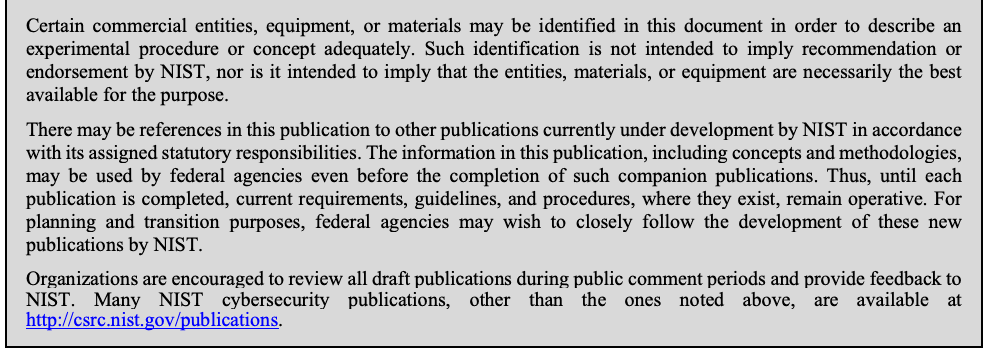
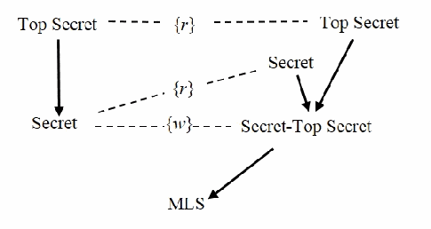

NIST SP 800-178 日本語訳
英語タイトル : A Comparison of Attribute Based Access Control (ABAC) Standards for Data Service Applications: Extensible Access Control Markup Language (XACML) and Next Generation Access Control (NGAC)日本語タイトル : データサービスアプリケーション向け属性ベースアクセス制御（ABAC）標準の比較：拡張可能アクセス制御マークアップ言語（XACML）と次世代アクセス制御（NGAC）
公開日 : 2016-10-03
原文URL : https://csrc.nist.gov/pubs/sp/800/178/final
翻訳編集 : 自動生成
[要約] SP 800-178 は、属性ベースアクセス制御（ABAC）の標準である XACML と NGAC を説明し、5つの基準に照らして比較します。両標準は目標が類似する一方で、アクセス制御ポリシーの指定と実装の方法が大きく異なるため、仕様を個別に示したうえで分析します。将来のデータサービスのポリシー適用要件に対応する際に、ABAC の利用者やベンダーが十分な情報に基づいて判断できるよう支援することを目的とします。
有志による非公式の日本語訳です。NIST および米国商務省が作成・承認・推奨したものではありません。要件の確認にはNIST の正式版 PDFを参照してください。
NIST Special Publication 800-178
NIST特別刊行物800-178
A Comparison of Attribute Based Access Control (ABAC) Standards for Data Service Applications
データサービスアプリケーションのための属性ベースアクセス制御（ABAC）標準の比較
Extensible Access Control Markup Language (XACML) and Next Generation Access Control (NGAC)
Extensible Access Control Markup Language（XACML）とNext Generation Access Control（NGAC）
David Ferraiolo
David Ferraiolo
Ramaswamy Chandramouli
Ramaswamy Chandramouli
Vincent Hu
Vincent Hu
Rick Kuhn
Rick Kuhn
This publication is available free of charge from: http://dx.doi.org/10.6028/NIST.SP.800-178
本刊行物は無料で入手できます：http://dx.doi.org/10.6028/NIST.SP.800-178
C O M P U T E R S E C U R I T Y
コンピュータセキュリティ
［NIST のロゴ。公的な標章のため、この非公式サイトには掲載していない。原本 PDF を参照。］
NIST Special Publication 800-178
NIST特別刊行物800-178
A Comparison of Attribute Based Access Control (ABAC) Standards for Data Service Applications
データサービスアプリケーションのための属性ベースアクセス制御（ABAC）標準の比較
Extensible Access Control Markup Language (XACML) and Next Generation Access Control (NGAC)
Extensible Access Control Markup Language（XACML）とNext Generation Access Control（NGAC）
David Ferraiolo
David Ferraiolo
Ramaswamy Chandramouli
Ramaswamy Chandramouli
Vincent Hu
Vincent Hu
Rick Kuhn
Rick Kuhn
Computer Security Division Information Technology Laboratory
情報技術研究所 コンピュータセキュリティ部門
This publication is available free of charge from: http://dx.doi.org/10.6028/NIST.SP.800-178
本刊行物は無料で入手できます：http://dx.doi.org/10.6028/NIST.SP.800-178
October 2016
2016年10月
U.S. Department of Commerce Penny Pritzker, Secretary
米国商務省 長官 Penny Pritzker
National Institute of Standards and Technology
米国国立標準技術研究所
Willie May, Under Secretary of Commerce for Standards and Technology and Director
標準技術担当商務次官 兼 NIST所長 Willie May
Authority
権限
This publication has been developed by NIST in accordance with its statutory responsibilities under the Federal Information Security Modernization Act (FISMA) of 2014, 44 U.S.C. § 3551 et seq., Public Law (P.L.) 113-283. NIST is responsible for developing information security standards and guidelines, including minimum requirements for federal information systems, but such standards and guidelines shall not apply to national security systems without the express approval of appropriate federal officials exercising policy authority over such systems. This guideline is consistent with the requirements of the Office of Management and Budget (OMB) Circular A-130.
本刊行物は、2014年連邦情報セキュリティ近代化法（FISMA）、44 U.S.C. § 3551以降、Public Law（P.L.）113-283に基づく法定責任に従ってNISTが策定した。NISTは連邦情報システムの最低要件を含む情報セキュリティ標準およびガイドラインの策定を担う。ただし、国家安全保障システムについては、そのシステムに関する政策権限を持つ適切な連邦職員が明示的に承認しない限り、当該標準およびガイドラインは適用されない。本ガイドラインは、行政管理予算局（OMB）通達A-130の要件に整合している。
Nothing in this publication should be taken to contradict the standards and guidelines made mandatory and binding on federal agencies by the Secretary of Commerce under statutory authority. Nor should these guidelines be interpreted as altering or superseding the existing authorities of the Secretary of Commerce, Director of the OMB, or any other federal official. This publication may be used by nongovernmental organizations on a voluntary basis and is not subject to copyright in the United States. Attribution would, however, be appreciated by NIST.
本刊行物のいかなる内容も、法定権限に基づき商務長官が連邦機関に義務付け、拘束力を持たせた標準およびガイドラインに反すると解釈してはならない。また、本ガイドラインを、商務長官、OMB長官、またはその他の連邦職員の既存の権限を変更もしくは代替するものと解釈してはならない。本刊行物は非政府組織が任意に使用でき、米国内では著作権の対象ではない。ただし、NISTへの帰属表示を歓迎する。
National Institute of Standards and Technology Special Publication 800-178 Natl. Inst. Stand. Technol. Spec. Publ. 800-178, 68 pages (October 2016) CODEN: NSPUE2
米国国立標準技術研究所 Special Publication 800-178 Natl. Inst. Stand. Technol. Spec. Publ. 800-178、68ページ（2016年10月） CODEN: NSPUE2
This publication is available free of charge from: http://dx.doi.org/10.6028/NIST.SP.800-178
本刊行物は無料で入手できます：http://dx.doi.org/10.6028/NIST.SP.800-178
Certain commercial entities, equipment, or materials may be identified in this document in order to describe an experimental procedure or concept adequately. Such identification is not intended to imply recommendation or endorsement by NIST, nor is it intended to imply that the entities, materials, or equipment are necessarily the best available for the purpose.
原本PDFの抜粋画像

実験的な手順または概念を十分に説明するため、本書では特定の商業団体、機器または材料を特定する場合がある。このような特定は、NISTによる推奨または承認を意味するものではなく、それらの団体、材料または機器が目的に対して必ずしも最良の入手可能なものであることを示すものでもない。
There may be references in this publication to other publications currently under development by NIST in accordance with its assigned statutory responsibilities. The information in this publication, including concepts and methodologies, may be used by federal agencies even before the completion of such companion publications. Thus, until each publication is completed, current requirements, guidelines, and procedures, where they exist, remain operative. For planning and transition purposes, federal agencies may wish to closely follow the development of these new publications by NIST.
本刊行物では、割り当てられた法定責任に従いNISTが現在策定中の他の刊行物を参照する場合がある。概念や方法論を含む本刊行物の情報は、関連刊行物が完成する前であっても連邦機関が使用できる。したがって、各刊行物が完成するまでは、既存の現行要件、ガイドラインおよび手順が引き続き有効である。計画および移行を目的として、連邦機関はNISTによる新刊行物の策定状況を注意深く確認してもよい。
Organizations are encouraged to review all draft publications during public comment periods and provide feedback to NIST. Many NIST cybersecurity publications, other than the ones noted above, are available at http://csrc.nist.gov/publications.
組織は、公開コメント期間中にすべての草案刊行物を確認し、NISTに意見を提出すべきである。上記に記載したもの以外にも、多数のNISTサイバーセキュリティ刊行物がhttp://csrc.nist.gov/publicationsで公開されている。
Comments on this publication may be submitted to:
本書に対するコメントの送付先：
National Institute of Standards and Technology Attn: Computer Security Division, Information Technology Laboratory 100 Bureau Drive (Mail Stop 8930) Gaithersburg, MD 20899-8930 Email: sp800-178@nist.gov
National Institute of Standards and Technology Attn: Computer Security Division, Information Technology Laboratory 100 Bureau Drive (Mail Stop 8930) Gaithersburg, MD 20899-8930 電子メール：sp800-178@nist.gov
All comments are subject to release under the Freedom of Information Act (FOIA).
すべての意見は情報自由法（FOIA）に基づく公開の対象となる。
Reports on Computer Systems Technology
コンピュータシステム技術に関する報告書
The Information Technology Laboratory (ITL) at the National Institute of Standards and Technology (NIST) promotes the U.S. economy and public welfare by providing technical leadership for the Nation’s measurement and standards infrastructure. ITL develops tests, test methods, reference data, proof of concept implementations, and technical analyses to advance the development and productive use of information technology. ITL’s responsibilities include the development of management, administrative, technical, and physical standards and guidelines for the cost-effective security and privacy of other than national security-related information in federal information systems. The Special Publication 800-series reports on ITL’s research, guidelines, and outreach efforts in information system security, and its collaborative activities with industry, government, and academic organizations.
米国国立標準技術研究所（NIST）の情報技術研究所（ITL）は、国家の計測・標準インフラに技術的リーダーシップを提供することで、米国経済と公共の福祉を促進している。ITLは、情報技術の発展および生産的な利用を推進するため、試験、試験方法、参照データ、概念実証の実装、技術分析を開発する。ITLの責務には、連邦情報システムにおける国家安全保障関連以外の情報の費用対効果に優れたセキュリティおよびプライバシーのための管理的、運用的、技術的および物理的な標準・ガイドラインの策定が含まれる。特別刊行物800シリーズは、情報システムセキュリティに関するITLの研究、ガイドライン、普及活動ならびに産業界、政府および学術機関との協力活動を報告する。
Abstract
概要
Extensible Access Control Markup Language (XACML) and Next Generation Access Control (NGAC) are very different attribute based access control (ABAC) standards with similar goals and objectives. An objective of both is to provide a standardized way for expressing and enforcing vastly diverse access control policies on various types of data services. However, the two standards differ with respect to the manner in which access control policies are specified and implemented. This document describes XACML and NGAC, and then compares them with respect to five criteria. The goal of this publication is to help ABAC users and vendors make informed decisions when addressing future data service policy enforcement requirements.
拡張可能アクセス制御マークアップ言語（XACML）と次世代アクセス制御（NGAC）は、目標および目的が類似する一方で、大きく異なる属性ベースアクセス制御（ABAC）標準である。両者の目的の一つは、多様なデータサービスに対する非常に幅広いアクセス制御ポリシーを表現し、適用するための標準化された方法を提供することである。ただし、アクセス制御ポリシーの指定および実装方法は両標準で異なる。本書ではXACMLとNGACを説明し、5つの基準に照らして比較する。本刊行物の目的は、将来のデータサービスポリシー適用要件に対応する際に、ABACの利用者およびベンダーが十分な情報に基づいて判断できるよう支援することである。
Keywords
キーワード
access control; access control mechanism; access control model; access control policy; attribute based access control (ABAC); authorization; Extensible Access Control Markup Language (XACML); Next Generation Access Control (NGAC); privilege
アクセス制御；アクセス制御メカニズム；アクセス制御モデル；アクセス制御ポリシー；属性ベースアクセス制御（ABAC）；認可；拡張可能アクセス制御マークアップ言語（XACML）；次世代アクセス制御（NGAC）；特権
Acknowledgements
謝辞
The authors, David Ferraiolo, Ramaswamy Chandramouli, Vincent C. Hu, and Rick Kuhn of the National Institute of Standards and Technology (NIST), wish to thank their colleagues who reviewed drafts of this document, including the following: Karen Scarfone (Scarfone Cybersecurity), Wayne Jansen (Bayview Behavioral Consulting), Serban Gavrila (NIST), Indrakshi Ray (Colorado State University), Duminda Wijesekera (George Mason University), and Ram Krishnan (University of Texas at San Antonio).
著者である米国国立標準技術研究所（NIST）のDavid Ferraiolo、Ramaswamy Chandramouli、Vincent C. HuおよびRick Kuhnは、本書の草稿をレビューした同僚に感謝する。レビューに参加したのは、Karen Scarfone（Scarfone Cybersecurity）、Wayne Jansen（Bayview Behavioral Consulting）、Serban Gavrila（NIST）、Indrakshi Ray（Colorado State University）、Duminda Wijesekera（George Mason University）、Ram Krishnan（University of Texas at San Antonio）である。
The authors also gratefully acknowledge and appreciate the comments and contributions made by government agencies, private organizations, and individuals in providing direction and assistance in the development of this document.
著者はさらに、本書の策定にあたり方向性を示し支援するため、政府機関、民間組織および個人から寄せられた意見と貢献に深く感謝する。
Note to Readers
読者への注記
For purposes of transparency, one of the authors of this document, David Ferraiolo, is a member of the American National Standards Institute/International Committee for Information Technology (ANSI/INCITS) Next Generation Access Control (NGAC) working group. To mitigate the injection of bias, prior drafts have been circulated for review to multiple subject matter experts, as well as formally to the public at large. In addition, prior to publication, the final draft of this document was reviewed by multiple independent entities in compliance with the requirements of the NIST Editorial Review Board (ERB). Disposition and resolution of comments were considered by the authors at large.
透明性のため、本書の著者の一人であるDavid Ferraioloが、米国規格協会／情報技術国際委員会（ANSI/INCITS）の次世代アクセス制御（NGAC）作業部会のメンバーであることを記す。偏りの持ち込みを軽減するため、草稿は複数の分野専門家に回覧してレビューを受けるとともに、正式に一般公開して意見を募った。さらに公表前には、NIST編集審査委員会（ERB）の要件に従い、本書の最終草稿を複数の独立した組織がレビューした。意見の処理および解決については、著者全員で検討した。
Trademark Information
商標に関する情報
All registered trademarks or trademarks belong to their respective organizations.
登録商標および商標はすべて、それぞれの組織に帰属する。
Executive Summary
エグゼクティブサマリー
Extensible Access Control Markup Language (XACML) and Next Generation Access Control (NGAC) are very different attribute based access control (ABAC) standards with similar goals and objectives. XACML, available since 2003, is an Extensible Markup Language (XML) based language standard designed to express security policies, as well as the access requests and responses needed for querying the policy system and reaching an authorization decision [1]. NGAC is a relations and architecture-based standard designed to express, manage, and enforce access control policies through configuration of its relations.
拡張可能アクセス制御マークアップ言語（XACML）と次世代アクセス制御（NGAC）は、目標および目的が類似する一方で、大きく異なる属性ベースアクセス制御（ABAC）標準である。2003年から利用可能なXACMLは、セキュリティポリシーを表現するとともに、ポリシーシステムへの照会および認可判断に必要なアクセス要求と応答を表現するために設計された、拡張可能マークアップ言語（XML）ベースの言語標準である[1]。NGACは、関係およびアーキテクチャに基づく標準であり、その関係を構成することでアクセス制御ポリシーを表現、管理および適用する。
What are the similarities and differences between these two standards? What are their comparative advantages and disadvantages? These questions are particularly relevant because XACML and NGAC are different approaches to achieving a common access control goal—to allow applications with vastly different access policies to be expressed and enforced using the features of the same underlying mechanism in diverse ways. These are also important questions, given the prevalence of data services in computing. Data services include computational capabilities that allow the consumption, alteration, and management of data resources, and distribution of access rights to data resources. Data services can take on many forms, to include applications such as time and attendance reporting, payroll processing, and health benefits management, but also including system level utilities such as file management.
これら2つの標準にはどのような類似点と相違点があるのか。それぞれの利点と欠点は何か。これらの問いが特に重要なのは、XACMLとNGACが、共通のアクセス制御目標を達成するための異なるアプローチだからである。すなわち、大きく異なるアクセス方針を持つアプリケーションに対して、多様な方法で同一の基盤メカニズムの機能を用いてポリシーを表現し適用できるようにする。コンピューティングにおいてデータサービスが広く普及していることを考えると、これらは重要な問いでもある。データサービスには、データ資源の利用、変更および管理と、データ資源に対するアクセス権の配布を可能にする計算機能が含まれる。データサービスには、勤怠報告、給与処理、医療給付管理などのアプリケーションから、ファイル管理などのシステムレベルのユーティリティまで、さまざまな形態がある。
To answer these questions, this document first describes XACML and NGAC, then compares them with respect to five criteria. The first criterion is the relative degree to which the access control functionality of a data service can be separated from a proprietary operational environment. The other four criteria are derived from ABAC issues or considerations identified by NIST Special Publication (SP) 800-162 [2]: operational efficiency, attribute and policy management, scope and type of policy support, and support for administrative review and resource discovery.
これらの問いに答えるため、本書ではまずXACMLとNGACを説明し、次に5つの基準で比較する。最初の基準は、データサービスのアクセス制御機能を独自の実行環境からどの程度分離できるかである。残る4つの基準は、NIST特別刊行物（SP）800-162 [2]で特定されたABAC上の論点または考慮事項、すなわち運用効率、属性およびポリシー管理、ポリシー支援の範囲と種類、管理レビューおよびリソース探索の支援から導かれる。
Although NGAC is only now emerging as a national standard, it compares favorably in many respects with XACML and should be considered, along with XACML, by both users and vendors in addressing future data service policy enforcement requirements. Below is a summary of this comparison.
NGACは国家標準として登場したばかりだが、多くの点でXACMLと比べても遜色なく、将来のデータサービスポリシー適用要件への対応において、利用者とベンダーの双方がXACMLとともに検討すべきである。以下にこの比較の概要を示す。
Separation of Access Control Functionality from Proprietary Operating Environments
アクセス制御機能と独自運用環境の分離
Both XACML and NGAC achieve separation of access control functionality of data services from proprietary operating environments, but to different degrees. XACML’s separation is partial. XACML does not envisage the design of a Policy Enforcement Point (PEP) that is data service agnostic. An XACML deployment consists of one or more data services, each with an operating environment-dependent PEP and operating environment-dependent operational routines and resource types that share a common Policy Decision Point (PDP) and access control information consisting of policies and attributes.
XACMLとNGACはどちらもデータサービスのアクセス制御機能を独自の実行環境から分離するが、その度合いは異なる。XACMLの分離は部分的である。XACMLは、データサービスに依存しないポリシー実施点（PEP）の設計を想定していない。XACMLの配置は、1つ以上のデータサービスから成り、それぞれが実行環境に依存するPEP、運用ルーチンおよびリソースの種類を持ち、共通のポリシー決定点（PDP）と、ポリシーおよび属性から成るアクセス制御情報を共有する。
The degree of separation that can be achieved by NGAC is near complete. Although an NGAC deployment could include a PEP with an application programming interface (API) that recognizes operating environment-specific operations (e.g., send and forward operations for a messaging system), it does not necessarily need to do so. NGAC includes a standard PEP with an API that supports a set of generic, operating environment-agnostic operations (read, write, create, and delete policy elements and relations). This API enables a common, centralized PEP to be implemented to serve the requests of multiple applications.
NGACでは、ほぼ完全な分離が可能である。NGACの配置に、運用環境固有の操作（例：メッセージングシステムにおける送信および転送操作）を認識するアプリケーションプログラミングインターフェース（API）を持つPEPを含めることもできるが、必須ではない。NGACには、汎用的で運用環境に依存しない操作（ポリシー要素および関係の読み取り、書き込み、作成、削除）をサポートするAPIを持つ標準PEPが含まれる。このAPIにより、複数のアプリケーションからの要求に対応する共通の集中型PEPを実装できる。
Operational Efficiency
運用効率
An XACML request is a collection of attribute name, value pairs for the subject (user), action (operation), resource, and environment. XACML identifies relevant policies and rules for computing decisions through a search for Targets (conditions that match the attributes of the request). Because multiple Policies in a PolicySet and/or multiple Rules in a Policy may produce conflicting access control decisions, XACML resolves these differences by applying a policy combining algorithm from a set defined by the standard. The entire process includes collecting attributes, matching conditions, computing rules, and resolving conflicts involving at least two data stores. There are two phases of policy evaluation that need to be considered. The first and costliest is loading policy from disk to Policy Decision Point (PDP) main memory, and the second is request evaluation. In both phases, performance is directly related to the number of policies considered.
XACML要求は、主体（ユーザー）、アクション（操作）、資源および環境に関する属性名と値の組の集合である。XACMLは、要求の属性と一致する条件であるターゲットを検索し、判断に関係するポリシーおよび規則を特定する。ポリシーセット内の複数のポリシー、またはポリシー内の複数の規則が相反するアクセス制御判断をもたらす場合があるため、XACMLは標準で定義された集合からポリシー結合アルゴリズムを適用して差異を解決する。この全体処理には、属性収集、条件照合、規則計算、および少なくとも2つのデータストアを伴う競合解決が含まれる。考慮すべきポリシー評価段階は2つある。最初で最もコストがかかるのは、ポリシーをディスクからポリシー決定点（PDP）の主記憶に読み込む段階であり、2つ目は要求評価である。どちらの段階でも、性能は考慮するポリシー数に直接関係する。
An NGAC request is composed of a process id, user id, operation, and a sequence of one or more operands mandated by the operation that affects either a resource or access control data. NGAC identifies relevant Policies and attributes by reference when computing a decision. NGAC computes decisions by applying a single combining algorithm over applicable Policies that do not conflict. Unlike XACML, NGAC does not need to load policy from disk into memory when evaluating a request. Instead, and as treated in NGAC reference implementation version 1.6 [11] all information necessary in computing an access decision can reside in memory. Memory is initially loaded when the PDP is initialized, and is updated when an administrative change occurs. The NGAC specification describes what constitutes a valid implementation, but does not provide implementation guidance, thereby leaving room for multiple competing approaches with different efficiencies. A measure of the operational efficiency is the complexity of algorithm used for arriving at a policy decision. In its reference implementation Version 1. 6 on GitHub [11], the NGAC computes a decision through an algorithm [30] that is linear. Furthermore, it is not linear in relation to the entire access control data set, but only to the portion relevant to a particular user.
NGAC要求は、プロセスID、ユーザーID、操作、およびリソースまたはアクセス制御データに作用する当該操作が要求する1つ以上のオペランドの列で構成される。NGACは、判断の計算時に参照によって関係するポリシーおよび属性を特定する。NGACは、競合しない適用対象ポリシーに単一の結合アルゴリズムを適用して判断を計算する。XACMLと異なり、NGACは要求評価時にディスクからメモリへポリシーを読み込む必要がない。代わりに、NGAC参照実装バージョン1.6 [11]で扱われるように、アクセス判断の計算に必要な情報をすべてメモリ上に置くことができる。PDPの初期化時にメモリが読み込まれ、管理上の変更が発生すると更新される。NGAC仕様は有効な実装の条件を記述するが、実装指針は示さないため、効率の異なる複数の競合アプローチが可能となる。運用効率の尺度の一つは、ポリシー判断を導くアルゴリズムの計算量である。GitHub上の参照実装バージョン1.6 [11]では、NGACは線形時間のアルゴリズム[30]で判断を計算する。さらに、その線形性はアクセス制御データ全体に対するものではなく、特定のユーザーに関係する部分に限られる。
Attribute and Policy Management
属性およびポリシーの管理
Proper enforcement of data resource policies is dependent on administrative policies. This is especially true in a federated or collaborative environment, where governance policies require different organizational entities to have different responsibilities for administering different aspects of policies and their dependent attributes.
データ資源ポリシーを適切に適用できるかどうかは、管理ポリシーに依存する。これは、ガバナンスポリシーにより、異なる組織主体がポリシーのさまざまな側面と、それに依存する属性の管理について異なる責任を負う連合環境または協働環境で特に当てはまる。
XACML and NGAC differ dramatically in their ability to impose policy over the creation and modification of access control data (attributes and policies). NGAC manages attributes and policies through a standard set of administrative operations, applying the same enforcement interface and decision making function as it uses for accessing data resources. XACML does not recognize administrative operations, but instead manages policy content through a Policy Administration Point (PAP) with an interface that is different from that for accessing data resources. XACML provides support for decentralized administration of some of its access policies. However, the approach is only a partial solution in that it is dependent on trusted and untrusted policies, where trusted policies are assumed valid, and their origin is established outside the delegation model. Furthermore, the XACML delegation model does not provide a means for imposing policy over modification of access policies, and offers no direct administrative method for imposing policy over the management of its attributes.
アクセス制御データ（属性およびポリシー）の作成と変更に対してポリシーを課す能力は、XACMLとNGACで大きく異なる。NGACは標準的な管理操作一式を通じて属性およびポリシーを管理し、データ資源へのアクセスに使うものと同じ適用インターフェースおよび判断機能を適用する。XACMLは管理操作を認識せず、代わりに、データ資源へのアクセスに使うものとは異なるインターフェースを持つポリシー管理点（PAP）を通じてポリシー内容を管理する。XACMLは一部のアクセスポリシーについて分散管理をサポートする。しかし、この方法は部分的な解決策にすぎない。信頼されたポリシーと信頼されていないポリシーに依存しており、信頼されたポリシーは有効であると仮定され、その出所は委任モデルの外部で確立されるからである。さらに、XACMLの委任モデルにはアクセスポリシーの変更に対してポリシーを課す手段がなく、属性の管理に対してポリシーを課す直接的な管理方法もない。
NGAC enables a systematic and policy-preserving approach to the creation of administrative roles and delegation of administrative capabilities, beginning with a single administrator and an empty set of access control data, and ending with users with data service, policy, and attribute management capabilities. NGAC provides users with administrative capabilities down to the granularity of a single configuration element, and it can deny users administrative capabilities down to the same granularity.
NGACは、単一の管理者と空のアクセス制御データ集合から始め、データサービス、ポリシーおよび属性の管理能力を持つユーザーに至るまで、管理役割の作成と管理能力の委任に対して体系的かつポリシーを維持する方法を可能にする。NGACは単一の構成要素レベルまでユーザーに管理能力を付与でき、同じ粒度で管理能力を拒否することもできる。
Scope and Type of Policy Support
ポリシー適用の範囲および種類
Although resources may be protected under a wide variety of different access policies, these policies can be generally categorized as either discretionary or mandatory controls. Discretionary access control (DAC) is an administrative policy that permits system users to allow or disallow other users’ access to resources that are placed under their control. Although XACML can theoretically provide users with administrative capabilities necessary to control and give away access rights to other users, the approach is complicated by the need to create and maintain additional metadata for each and every object/resource (e.g., Owner attribute). Conversely, NGAC has a flexible means of providing users with administrative capabilities to include those necessary for the establishment of DAC policies.
リソースは多様なアクセス制御ポリシーによって保護されるが、一般にこれらは任意アクセス制御または強制アクセス制御に分類できる。任意アクセス制御（DAC）は、システムユーザーが自らの管理下に置かれたリソースへの他のユーザーのアクセスを許可または拒否できるようにする管理ポリシーである。XACMLは理論上、他のユーザーのアクセス権を制御し付与するために必要な管理能力をユーザーに提供できるが、すべてのオブジェクト／リソースについて追加のメタデータ（例：所有者属性）を作成し維持する必要があり、複雑になる。これに対し、NGACはDACポリシーの確立に必要なものを含め、ユーザーに管理能力を付与する柔軟な手段を備える。
In contrast to DAC, mandatory access control (MAC) enables ordinary users’ capabilities to execute operations on resources, but not administrative operations that may influence those capabilities. MAC policies unavoidably impose rules on users in performing operations on resources. MAC policies can be further characterized as controls that accommodate confinement properties to prevent indirect leakage of data to unauthorized users, and those that do not.
DACとは対照的に、強制アクセス制御（MAC）は、一般ユーザーに資源上の操作を実行する能力を与える一方、その能力に影響を及ぼし得る管理操作は許可しない。MACポリシーは、資源に対する操作を実行するユーザーに不可避的に規則を課す。MACポリシーはさらに、権限のないユーザーへの間接的な情報漏えいを防止するための封じ込め特性を備えた制御と、その特性を備えない制御に分類できる。
Expression of non-confinement MAC policies is perhaps XACML’s strongest suit. XACML can specify rules and other conditions in terms of attribute values of varying types. There are undoubtedly certain policies that are expressible in terms of these rules that cannot be easily accommodated by NGAC. This is especially true when treating attribute values as integers. For example, to approve a purchase request may involve adding a person’s credit limit to the person’s account balance. Furthermore, XACML takes environmental attributes into consideration in expressing policy, and NGAC does not. However, there are some non-confinement MAC properties, including a variety of history-based policies, that NGAC can express but XACML cannot.
非封じ込め型MACポリシーの表現は、おそらくXACMLが最も得意とする点である。XACMLは、さまざまな型の属性値を用いて規則やその他の条件を指定できる。このような規則で表現できるポリシーのうち、NGACでは容易に扱えないものがあることは明らかである。属性値を整数として扱う場合は特にそうである。例えば、購入要求の承認では、ある人物の信用限度額をその人の口座残高に加算する処理が必要となる場合がある。さらに、XACMLはポリシー表現に環境属性を考慮するが、NGACは考慮しない。一方、履歴に基づくさまざまなポリシーを含め、XACMLでは表現できずNGACでは表現可能な非封じ込め型MAC特性もある。
In contrast to NGAC, XACML does not recognize the capabilities of a process independent of the capabilities of its user. Without such features, XACML is ill-equipped to support confinement and as such is arguably incapable of enforcement of a wide variety of policies. These confinement-dependent policies include some instances of role-based access control
NGACとは異なり、XACMLはユーザーの能力とは独立したプロセスの能力を認識しない。このような機能がないため、XACMLは封じ込めを支援する能力が不十分であり、その結果、幅広いポリシーを適用できないとも言える。封じ込めに依存するポリシーには、役割ベースアクセス制御の一部の事例
(RBAC), e.g., “only doctors can read the contents of medical records,” originator control (ORCON) and Privacy, e.g., “I know who can currently read my data or personal information”, or conflict of interest, e.g., “a user with knowledge of information within one dataset cannot read information in another dataset”. Through imposing process level controls in conjunction with event-response relations, NGAC has shown [3] support for these and other confinement-dependent MAC controls.
（RBAC）、例えば「医療記録の内容を読めるのは医師のみ」、発信者制御（ORCON）およびプライバシー、例えば「自分のデータまたは個人情報を現在誰が読めるか把握できる」、利益相反、例えば「あるデータセット内の情報を知るユーザーは別のデータセット内の情報を読めない」が含まれる。イベント応答関係と組み合わせてプロセスレベルの制御を課すことにより、NGACはこれらおよびその他の封じ込めに依存するMAC制御をサポートすることを示した[3]。
Administrative Review and Resource Discovery
管理レビューおよび資源探索
A desired feature of access controls is review of capabilities of users and access control entries of objects [4] [18]. These features are often referred to as “before the fact audit” and resource discovery. “Before the fact audit” is one of RBAC’s most prominent features [5]. Being able to discover or see a newly accessible resource is an important feature of any access control system. NGAC supports efficient algorithms for both per-user and per-object review. Per-object review of access control entries is not as efficient as a pure access control list (ACL) mechanism, and per-user review of capabilities is not as efficient as that of RBAC. However, this is due to NGAC’s consideration of conducting review in a multi-policy environment. NGAC can efficiently support both per-object and per-user reviews of combined policies [30], where RBAC and ACL mechanisms can do only one type of review efficiently, and logical formula-based mechanisms such as XACML, although able to combine policies, cannot do either type of review efficiently [6].
アクセス制御に望まれる機能は、ユーザーの能力およびオブジェクトのアクセス制御エントリをレビューすることである[4] [18]。これらの機能は「事前監査」および資源探索と呼ばれることが多い。「事前監査」はRBACの最も顕著な機能の一つである[5]。新たにアクセス可能になった資源を発見または閲覧できることは、あらゆるアクセス制御システムにとって重要な機能である。NGACはユーザー単位とオブジェクト単位の両方のレビューに効率的なアルゴリズムをサポートする。オブジェクト単位のアクセス制御エントリのレビューは純粋なアクセス制御リスト（ACL）メカニズムほど効率的ではなく、ユーザー単位の能力レビューはRBACほど効率的ではない。しかし、これはNGACが複数ポリシー環境でレビューを行うことを考慮しているためである。NGACは複合ポリシーのオブジェクト単位およびユーザー単位のレビューを効率的にサポートできる[30]。一方、RBACおよびACLメカニズムは一方の種類のレビューしか効率的に行えず、XACMLなどの論理式ベースのメカニズムはポリシーを結合できるものの、どちらの種類のレビューも効率的に行えない[6]。
Table of Contents
目次
Executive Summary ..................................................................................................... iv
エグゼクティブサマリー ........................................................ iv
1 Introduction — 1
1 はじめに — 1
1.1 Purpose and Scope — 1
1.1 目的および範囲 — 1
1.2 Audience — 1
1.2 対象読者 — 1
1.3 Document Structure — 1
1.3 文書の構成 — 1
2 Background — 2
2 背景 — 2
2.1 XACML — 4
2.1 XACML — 4
2.2 NGAC — 5
2.2 NGAC — 5
2.3 Comparison of XACML and NGAC’s Origins — 6
2.3 XACMLとNGACの起源の比較 — 6
3 XACML Specification — 8
3 XACML仕様 — 8
3.1 Attributes and Policies — 8
3.1 属性およびポリシー — 8
3.2 Combining Algorithms — 10
3.2 結合アルゴリズム — 10
3.3 Obligation and Advice Expressions — 10
3.3 義務および助言の式 — 10
3.4 Example Policies — 11
3.4 ポリシーの例 — 11
3.5 XACML Access Request — 13
3.5 XACMLアクセス要求 — 13
3.6 Delegation — 15
3.6 委任 — 15
3.6.1 Delegation Chain – An Example — 16
3.6.1 委任チェーン－例 — 16
3.6.2 Access Request Processing in Delegation Chains — 17
3.6.2 委任チェーンにおけるアクセス要求処理 — 17
3.7 XACML Reference Architecture — 21
3.7 XACML参照アーキテクチャ — 21
4 NGAC Specification — 23
4 NGAC仕様 — 23
4.1 Basic Policy and Attribute Elements — 23
4.1 基本的なポリシー要素および属性要素 — 23
4.2 Relations — 24
4.2 関係 — 24
4.2.1 Assignments and Associations — 24
4.2.1 割当ておよび関連付け — 24
4.2.2 Derived Privileges — 25
4.2.2 派生特権 — 25
4.2.3 Prohibitions (Denies) — 28
4.2.3 禁止（拒否） — 28
4.2.4 Obligations — 28
4.2.4 義務 — 28
4.3 NGAC Decision Function — 29
4.3 NGAC判断関数 — 29
4.4 Administrative Considerations — 29
4.4 管理上の考慮事項 — 29
4.4.1 Administrative Associations — 30
4.4.1 管理上の関連付け — 30
4.4.2 Delegation — 30
4.4.2 委任 — 30
4.4.3 NGAC Administrative Commands and Routines — 31
4.4.3 NGAC管理コマンドおよびルーチン — 31
4.5 Arbitrary Data Service Operations and Policies — 32
4.5 任意のデータサービス操作およびポリシー — 32
4.6 NGAC Functional Architecture — 34
4.6 NGAC機能アーキテクチャ — 34
5 Analysis — 36
5 分析 — 36
5.1 Separation of Access Control Functionality from Proprietary Operating Environments — 36
5.1 独自の運用環境からのアクセス制御機能の分離 — 36
5.2 Scope and Type of Policy Support — 37
5.2 ポリシー適用範囲と種類 — 37
5.3 Operational Efficiency — 42
5.3 運用効率 — 42
5.3.1 Loading Policies — 43
5.3.1 ポリシーの読み込み — 43
5.3.2 Finding Applicable Policies — 43
5.3.2 適用可能なポリシーの特定 — 43
5.3.3 Decision Processing — 43
5.3.3 判断処理 — 43
5.4 Attribute and Policy Management — 44
5.4 属性およびポリシー管理 — 44
5.5 Administrative Review and Resource Discovery — 46
5.5 管理レビューおよび資源探索 — 46
6 Conclusion — 47
6 結論 — 47
List of Appendices
付録一覧
Appendix A— Acronyms — 49
付録A－略語 — 49
Appendix B— References — 50
付録B－参考文献 — 50
Appendix C— XACML 3.0 Encoding of Medical Records Access Policy — 54
付録C－医療記録アクセスポリシーのXACML 3.0エンコーディング — 54
List of Figures
図一覧
Figure 1: ABAC Overview — 2
図1：ABACの概要 — 2
Figure 2: XACML Policy Constructs — 9
図2: XACML ポリシー構成要素 — 9
Figure 3: An Example of a Delegation Chain — 17
図3: 委任チェーンの例 — 17
Figure 4: Utilizing Delegation Chains for Policy Evaluation — 18
図4: ポリシー評価における委任チェーンの利用 — 18
Figure 5: XACML Reference Architecture — 21
図5: XACML 参照アーキテクチャ — 21
Figure 6: Two Example Assignment and Association Graphs — 25
図6: 割当てグラフと関連付けグラフの2つの例 — 25
Figure 7: Graphs from Figures 6a and 6b in Combination — 26
図7: 図6aおよび6bのグラフを組み合わせたもの — 26
Figure 8: NGAC's Equivalent Expression of XACML Policy1 — 27
図8: NGAC による XACML ポリシー1の等価表現 — 27
Figure 9: NGAC Standard Functional Architecture — 34
図9: NGAC 標準機能アーキテクチャ — 34
Figure 10: NGAC's Partial Expression of TCSEC MAC — 41
図10: NGAC による TCSEC MAC の部分表現 — 41
List of Tables
表一覧
Table 1. Attribute Names and Values and the Authorization State for Policy 1 ............. 12
表1 ポリシー1における属性名と属性値、および認可状態 ............. 12
Table 2: Derived Privileges for the Independent Configuration of Figures 6a and 6b ... 25
表2：図6aと図6bを独立に構成した場合に導出される特権 ... 25
Table 3: Derived Privileges for the Combined Configuration of Figures 6a and 6b ....... 26
表3：図6aと図6bを結合して構成した場合に導出される特権 ....... 26
Table 4: Derived Privileges for the Configuration of Figure 8 ........................................ 27
表4：図8の構成で導出される特権 ........................................ 27
1 Introduction
1 はじめに
1.1 Purpose and Scope
1.1 目的および適用範囲
The purpose of this document is to compare and contrast Extensible Access Control Markup Language (XACML) and Next Generation Access Control (NGAC) — two very different access control standards with similar goals and objectives. The document explains the basics of both standards and provides a comparative analysis based on attribute based access control (ABAC) considerations identified in NIST Special Publication (SP) 800-162, Guide to Attribute Based Access Control (ABAC) Definition and Considerations [2].
本書は、目標と目的が類似しながら大きく異なる2つのアクセス制御標準、拡張可能アクセス制御マークアップ言語（XACML）と次世代アクセス制御（NGAC）を比較対照することを目的とする。本書では両標準の基本を説明し、NIST 特別刊行物（SP）800-162「属性ベースアクセス制御（ABAC）の定義および考慮事項に関するガイド」[2] で特定された属性ベースアクセス制御（ABAC）の観点に基づく比較分析を示す。
1.2 Audience
1.2 対象読者
The intended audience for this document includes the following categories of individuals:
本書の対象読者には、次のカテゴリーの人々が含まれる:
•Computer security researchers interested in access control and authorization frameworks;
•アクセス制御および認可フレームワークに関心を持つコンピューターセキュリティ研究者;
•Security professionals, including security officers, security administrators, auditors, and others with responsibility for information technology (IT) security;
•セキュリティ担当者。これには、セキュリティ責任者、セキュリティ管理者、監査人、および情報技術（IT）セキュリティに責任を持つその他の人々を含む;
•Executives and technology officers involved in decisions about IT security products; and
•IT セキュリティ製品に関する意思決定に携わる幹部および技術責任者; および
•IT program managers concerned with security measures for computing environments.
•コンピューティング環境のセキュリティ対策に関心を持つ IT プログラムマネージャー。
This document, while technical in nature, provides background information and examples to help readers understand the topics that are covered. The material presumes that readers have a basic understanding of security and possess fundamental access control expertise.
本書は技術的な内容であるが、対象トピックの理解を助ける背景情報と例を示す。読者がセキュリティの基礎知識を持ち、アクセス制御に関する基本的な専門知識を備えていることを前提とする。
1.3 Document Structure
1.3 文書の構成
The remainder of this document is organized into the following sections:
本書の以降の構成は次のとおりである:
•Section 2 provides background information on the origins, makeup, and objectives of XACML and NGAC.
•第2節では、XACML と NGAC の起源、構成および目的に関する背景情報を示す。
•Section 3 describes XACML’s policy specification language and reference architecture for ABAC implementation.
•第3節では、XACML のポリシー仕様言語および ABAC 実装のための参照アーキテクチャを説明する。
•Section 4 describes NGAC’s fundamentally different approach from XACML for representing requests, expressing and administering policies, representing and administering attributes, and computing and enforcing decisions.
•第4節では、要求の表現、ポリシーの記述と管理、属性の表現と管理、ならびに判断の計算と実施について、XACML とは根本的に異なる NGAC のアプローチを説明する。
•Section 5 provides an analysis of XACML and NGAC’s similarities and differences based on five criteria.
•第5節では、5つの基準に基づいて XACML と NGAC の類似点および相違点を分析する。
•Section 6 contains the conclusion for the document.
•第6節では、本書の結論を述べる。
•Appendix A— provides a list of acronyms used in the document.
•付録 A— 本書で使用する略語の一覧を示す。
•Appendix B— contains a list of references.
•付録 B— 参考文献の一覧を含む。
•Appendix C— provides a formal XACML policy specification for an abbreviated policy example in Section 3.
•付録 C— 第3節の簡略化したポリシー例について、正式な XACML ポリシー仕様を示す。
2 Background
2 背景
Controlling and managing access to sensitive data has been an ongoing challenge for decades. Attribute-based access control (ABAC) represents the latest milestone in the evolution of logical access control methods. It provides an attribute-based approach to accommodate a wide breadth of access control policies and simplify access control management.
機密データへのアクセスを制御および管理することは、何十年にもわたって課題であり続けている。属性ベースアクセス制御（ABAC）は、論理アクセス制御方式の進化における最新の節目である。幅広いアクセス制御ポリシーに対応し、アクセス制御管理を簡素化する属性ベースのアプローチを提供する。
Most other access control approaches are based on the identity of a user requesting performance of an operation on a resource (e.g., read a file), with the capability enabled directly based on the user’s identity, or indirectly through predefined attribute types such as roles or groups assigned to the user. Practitioners have noted that these forms of access control are often cumbersome to set up and manage, given their need to associate capabilities directly to users or their attributes, and the difficulty of doing so. Furthermore, the identity, group, and role qualifiers of a requesting user are often insufficient for expressing real-world access control policies. An alternative is to express policies in terms of attributes and to grant or deny user requests based on arbitrary attributes of users and resources, and optionally environmental attributes. This approach to access control is commonly referred to as attribute-based access control (ABAC) and is an inherent feature of both XACML and NGAC.
他の多くのアクセス制御方式は、リソース（例: ファイルの読み取り）に対する操作の実行を要求するユーザーの識別情報に基づいており、機能はユーザーの識別情報に直接結び付けられるか、ユーザーに割り当てられた役割やグループなどの事前定義属性タイプを介して間接的に結び付けられる。実務者は、機能をユーザーまたはその属性に直接関連付ける必要があり、その作業が難しいことから、こうしたアクセス制御の設定と管理はしばしば煩雑であると指摘している。さらに、要求元ユーザーの識別情報、グループ、役割の条件だけでは、実世界のアクセス制御ポリシーを表現するには不十分なことが多い。代替策として、属性でポリシーを表現し、ユーザーおよびリソースの任意の属性、必要に応じて環境属性に基づいてユーザー要求を許可または拒否する方法がある。このアクセス制御方式は一般に属性ベースアクセス制御（ABAC）と呼ばれ、XACML と NGAC の両方に本質的に備わっている。
The access control logic of an ABAC engine that computes decisions based on assigned attributes of a requesting user, resource, and environment, and policies expressed in terms of those attributes is depicted in Figure 1.
要求元ユーザー、リソースおよび環境に割り当てられた属性と、それらの属性で表現されたポリシーに基づいて判断を計算する ABAC エンジンのアクセス制御ロジックを図1に示す。
![Figure 1: ABAC Overview. Across the top are three icons, each marked with a badge bearing the letter A: User attributes (a person), Environmental attributes (a clock face) and Object attributes (a document). Lines from the three join and lead with an arrow down into a central box showing gears. From the left, an arrow from a person icon labeled User requests enters the gear box; from below, an arrow from an open book labeled Policies enters it. From the right of the box, two arrows branch to Permit and Deny.](assets/178/p0014-figure-01.png)
図1：ABACの概要。上段に、A の文字の記章を付けた 3 つのアイコンが並ぶ。ユーザー属性（人物）、環境属性（時計の文字盤）、オブジェクト属性（文書）である。3 つからの線は合流し、矢印となって中央の歯車を描いた箱へ下りる。左からは「ユーザー要求」と記した人物アイコンから矢印がこの箱に入り、下からは「ポリシー」と記した開いた本から矢印が入る。箱の右からは 2 本の矢印が分かれ、Permit（許可）と Deny（拒否）を指す。
Figure 1: ABAC Overview
図1：ABACの概要
There are two techniques for specifying ABAC policies [6]. The most common approach is to define authorization policies by using logical formulas involving predicates expressed using logical operations (e.g., AND, OR, \(\ge\), \(\ne\)) on attribute values. For example, \(\operatorname{can\_access}(\mathrm{u}, \mathrm{a}, \mathrm{o}) \rightarrow \operatorname{Role}(\mathrm{u}) = \text{“doctor”} \mathbin{\mathrm{AND}} \operatorname{Ward}(\mathrm{u}) = \operatorname{Ward}(\mathrm{o}) \mathbin{\mathrm{AND}} (\mathrm{a} = \mathrm{read} \mathbin{\mathrm{OR}} \mathrm{a} = \mathrm{write})\) specifies that any user with a Role of doctor can read or write any object where the Ward of the user is the same as the Ward of the object. XACML includes a policy specification language that falls into this category. Two other policy models that fall in this category are \(\mathrm{ABAC}_{\boldsymbol{\alpha}}\) [7] and HGABAC (Hierarchical Group and Attribute Based Access Control) [8]. The second technique for expressing policy is by enumeration involving configurations of relations. NGAC and LaBAC (Label-Based Access Control) [6] fall under this category. For example, NGAC specifies polices in part by using combinations of association relations of the form \((\mathrm{ua}_{\mathrm{i}}, \mathrm{ars}_{\mathrm{i}}, \mathrm{oa}_{\mathrm{i}})\), with the meaning that the users in user attribute, \(\mathrm{ua}_{\mathrm{i}}\) have the access rights in access right set, \(\mathrm{ars}_{\mathrm{i}}\) on the objects in the object attribute, \(\mathrm{oa}_{\mathrm{i}}\).
ABAC ポリシーを指定する技法は2つある [6]。最も一般的な方法は、属性値に対する論理演算（例: AND、OR、\(\ge\)、\(\ne\)）を使って表現した述語を含む論理式によって、認可ポリシーを定義するものである。たとえば、\(\operatorname{can\_access}(\mathrm{u}, \mathrm{a}, \mathrm{o}) \rightarrow \operatorname{Role}(\mathrm{u}) = \text{“doctor”} \mathbin{\mathrm{AND}} \operatorname{Ward}(\mathrm{u}) = \operatorname{Ward}(\mathrm{o}) \mathbin{\mathrm{AND}} (\mathrm{a} = \mathrm{read} \mathbin{\mathrm{OR}} \mathrm{a} = \mathrm{write})\) は、Role が doctor である任意のユーザーが、ユーザーの Ward とオブジェクトの Ward が同じである任意のオブジェクトを読み取りまたは書き込みできることを指定する。XACML はこのカテゴリーに属するポリシー仕様言語を含む。このカテゴリーに属する他の2つのポリシーモデルは \(\mathrm{ABAC}_{\boldsymbol{\alpha}}\) [7] と HGABAC（階層型グループ・属性ベースアクセス制御）[8] である。第2の技法は、関係の構成を列挙することによってポリシーを表現するものである。NGAC と LaBAC（ラベルベースアクセス制御）[6] がこのカテゴリーに属する。たとえば NGAC は、\((\mathrm{ua}_{\mathrm{i}}, \mathrm{ars}_{\mathrm{i}}, \mathrm{oa}_{\mathrm{i}})\) の形の関連関係を組み合わせて用いることによって、ポリシーの一部を指定する。これは、ユーザー属性 \(\mathrm{ua}_{\mathrm{i}}\) に属するユーザーが、アクセス権集合 \(\mathrm{ars}_{\mathrm{i}}\) に含まれるアクセス権を、オブジェクト属性 \(\mathrm{oa}_{\mathrm{i}}\) に属するオブジェクトに対して持つことを意味する。
XACML and NGAC are ABAC standards for facilitating policy-preserving user executions of data service capabilities (data service operations on data service resources). In general, data services are a class of applications that provide users with capabilities to consume, manipulate, manage, and share data. Examples of data services include applications such as “time and attendance reporting”, payroll processing, corporate calendaring, and health benefits management, all with a strong need for access control. XACML and NGAC provide a single generic access control facility for applications, resulting in a dramatic alleviation of many of the administrative, interoperability, and usability challenges otherwise faced by enterprises. This is achieved by removing the access control logic from the access control mechanism in the operating environment of each application. Instead the access control logic is implemented using a common set of access control modules that provide access decision functionality, which support these applications using a centralized policy and attribute repository.
XACML と NGAC は、データサービス機能（データサービスのリソースに対する操作）をユーザーがポリシーに沿って実行できるようにする ABAC 標準である。一般にデータサービスとは、ユーザーにデータの消費、操作、管理および共有の機能を提供するアプリケーション群である。データサービスの例には、アクセス制御の必要性が高い勤怠報告、給与処理、企業カレンダー、医療給付管理などのアプリケーションがある。XACML と NGAC はアプリケーションに単一の汎用アクセス制御機能を提供し、これにより企業が直面する多くの管理、相互運用性および使いやすさの課題を大幅に軽減する。これは、各アプリケーションの実行環境にあるアクセス制御メカニズムからアクセス制御ロジックを取り除くことで実現される。代わりに、アクセス判断機能を提供する共通のアクセス制御モジュール群を使用してアクセス制御ロジックを実装し、集中管理されたポリシーおよび属性リポジトリを通じてアプリケーションを支援する。
Stated another way, from the perspective of access control, a data service can be conceptually viewed as an application with a presentation/logic layer and an operating environment layer delineated by their functionality and interfaces. The presentation layer provides users with an interface and methods for creating, displaying, and altering data. The presentation layer does not carry out operations that store, retrieve, or alter the state of stored data, or alter the access state to data (e.g., read, write/save, create and delete files, submit, approve, schedule), but instead issues requests to the operating environment layer to perform those operations. An operating environment implements operational routines to carry out access requests and provides access control to ensure that executions of processes involving operational routines are policy preserving.
別の言い方をすると、アクセス制御の観点から、データサービスは、機能とインターフェースによって区分されるプレゼンテーション／ロジック層と実行環境層を持つアプリケーションとして概念的に捉えられる。プレゼンテーション層は、データの作成、表示および変更のためのインターフェースと方法をユーザーに提供する。プレゼンテーション層は、保存データの状態を保管、取得または変更する操作や、データへのアクセス状態（例: 読み取り、書き込み／保存、ファイル作成・削除、提出、承認、スケジュール設定）を変更する操作を実行せず、代わりにそれらの操作を実行環境層に要求する。実行環境は、アクセス要求を処理する運用ルーチンを実装し、運用ルーチンを伴うプロセスの実行がポリシーを維持するようアクセス制御を提供する。
Access control mechanisms comprise several components that work together to bring about policy-preserving data access. These components include access control data for expressing access control policies and representing attributes, and a set of functions for trapping access requests and for computing and enforcing access decisions over those requests. Most operating environments implement access control in different ways, each with a different scope of control (e.g., users, resources), and each with respect to different operation types (e.g., read, send, approve, select) and data types (e.g., files, messages, work items, records).
アクセス制御メカニズムは、ポリシーに沿ったデータアクセスを実現するために連携する複数のコンポーネントで構成される。これらのコンポーネントには、アクセス制御ポリシーの表現および属性の表現に用いるアクセス制御データと、アクセス要求を捕捉し、それらの要求に対するアクセス判断を計算および実施する一連の機能が含まれる。多くの実行環境はアクセス制御を異なる方法で実装しており、それぞれ制御範囲（例: ユーザー、リソース）、操作タイプ（例: 読み取り、送信、承認、選択）、データタイプ（例: ファイル、メッセージ、作業項目、レコード）も異なる。
This heterogeneity introduces a number of administrative and policy enforcement challenges. Administrators are forced to contend with a multitude of security domains when managing access policies and attributes. Even if properly coordinated across operating environments, global controls are hard to visualize and implement in a piecemeal fashion. Furthermore, because operating environments implement access control in different ways, it is difficult to exchange and share access control data across operating environments. XACML and NGAC seek to alleviate these challenges by creating a common and centralized way of expressing all access control data (policies and attributes) and computing decisions over the access requests of the presentation layer of applications (hereafter simply referred to as applications).
この異質性は、管理およびポリシー実施に関する多くの課題をもたらす。管理者はアクセス制御ポリシーおよび属性を管理する際、多数のセキュリティドメインに対処しなければならない。実行環境間で適切に調整できたとしても、全体的な制御を可視化し、個別に実装することは困難である。さらに、実行環境ごとにアクセス制御の実装方法が異なるため、実行環境間でアクセス制御データを交換および共有することも難しい。XACML と NGAC は、すべてのアクセス制御データ（ポリシーと属性）を表現し、アプリケーションのプレゼンテーション層（以下、単にアプリケーションと呼ぶ）のアクセス要求に対する判断を計算する、共通かつ集中型の方法を作ることで、これらの課題の軽減を目指す。
In 2014 NIST published SP 800-162, Guide to Attribute Based Access Control (ABAC) Definition and Considerations [2], to serve two purposes. First, it provides federal agencies with an authoritative definition of ABAC and a description of its functional components. NIST SP 800-162 addresses ABAC as a mechanism comprising four layers of functional decomposition: Enforcement, Decision, Access Control Data, and Administration. Second, in light of the potential for numerous approaches to ABAC, NIST SP 800-162 highlights several considerations for selecting an ABAC system for deployment. These considerations pertain to operational efficiency, attribute and policy management, scope and type of policy support, and support for administrative review and resource discovery, among others. This report examines and compares XACML and NGAC based on these considerations. In addition, it compares the abilities of XACML and NGAC to separate the access control functionality necessary to support applications from proprietary operating environments. It is not intended to provide an implementation specification for either XACML or NGAC.
2014年に NIST は SP 800-162「属性ベースアクセス制御（ABAC）の定義および考慮事項に関するガイド」[2] を2つの目的で公表した。第一に、連邦機関に権威ある ABAC の定義とその機能コンポーネントの説明を提供する。同書は、ABAC を「実施、決定、アクセス制御データ、管理」の4層の機能分解からなるメカニズムとして扱う。第二に、ABAC への多様なアプローチを踏まえ、配備する ABAC システムの選定に関する複数の考慮事項を示す。これらには、運用効率、属性およびポリシーの管理、ポリシー支援の範囲と種類、管理レビューおよびリソース探索の支援などが含まれる。本報告書では、これらの考慮事項に基づき XACML と NGAC を検討し比較する。さらに、アプリケーションを支援するために必要なアクセス制御機能を、独自仕様の実行環境から分離する XACML と NGAC の能力も比較する。本書は、XACML または NGAC の実装仕様を提供するものではない。
2.1 XACML
2.1 XACML
In 2003, with the emergence of Service Oriented Architecture (SOA), a new specification called XACML was published through the Organization for the Advancement of Structured Information Standards (OASIS). The specification presented the elements of what would later be considered by many to be ABAC. XACML employs three components in its authorization process:
2003年、サービス指向アーキテクチャ（SOA）の登場を受け、構造化情報標準促進機構（OASIS）を通じて XACML と呼ばれる新たな仕様が公表された。この仕様には、後に多くの人々が ABAC とみなすことになる要素が提示された。XACML は認可プロセスで次の3つのコンポーネントを用いる:
•XACML policy language, for specifying access control requirements using rules, policies, and policysets, expressed in terms of subject (user), resource, action (operation), and environmental attributes and a set of algorithms for combining policies and rules.
•XACML ポリシー言語。主体（ユーザー）、リソース、アクション（操作）および環境属性の観点から表現されるルール、ポリシーおよびポリシーセットを用いてアクセス制御要件を指定し、ポリシーおよびルールを結合するアルゴリズム群を含む。
•XACML request/response protocol, for querying a decision engine that evaluates subject access requests against policies and returns access decisions in response.
•XACML 要求／応答プロトコル。ポリシーに対する主体のアクセス要求を評価し、応答としてアクセス判断を返す判断エンジンに問い合わせる。
•XACML reference architecture, for deploying software modules to house policies and attributes, and computing and enforcing access control decisions based on policies and attributes.
•XACML 参照アーキテクチャ。ポリシーと属性を格納し、ポリシーと属性に基づいてアクセス制御判断を計算および実施するソフトウェアモジュールを配備する。
Of the two ABAC standards, XACML is the oldest with the first version having been published in 2003. The current version is XACML 3.0 published in 2013. Through its evolution, it has received lots of scrutiny and acceptance by both research and vendor communities. Compared to the relatively new NGAC standard (parts originally published in 2013 and others still under development) with implementations still in their infancy, XACML has achieved much greater adoption with many open source and proprietary implementations covering all components of its standard. Although XACML products are too numerous to discuss individually, the Sun XACML open source is worth mentioning due to its pioneering implementation of all components of XACML framework, thus establishing the standard’s viability and making an impact on all subsequent XACML product development. Sun XACML is still the most widely used access decision engine both in enterprise applications and in research projects. Also, many of the other existing open source and proprietary XACML solutions are based on the functionality found in Sun XACML libraries.
2つの ABAC 標準のうち XACML が最も古く、初版は2003年に公表された。現行版は2013年に公表された XACML 3.0 である。進化の過程で研究コミュニティとベンダーコミュニティの双方から十分に検討され、受け入れられてきた。比較的新しい NGAC 標準（構成要素の一部は2013年に公表され、残りはなお開発中）では実装がまだ初期段階にある一方、XACML は大きく普及し、標準の全コンポーネントを網羅する多くのオープンソースおよびプロプライエタリな実装が存在する。XACML 製品は個別に論じるには数が多いが、Sun XACML オープンソース実装は、XACML フレームワークの全コンポーネントを先駆的に実装し、標準の実現可能性を確立して以後の XACML 製品開発に影響を与えた点で特筆に値する。Sun XACML は、企業アプリケーションと研究プロジェクトの両方で現在も最も広く使われているアクセス判断エンジンである。また、既存の他の多くのオープンソースおよびプロプライエタリな XACML ソリューションも、Sun XACML ライブラリの機能を基盤としている。
2.2 NGAC
2.2 NGAC
In 2003, NIST initiated a project in pursuit of a standardized ABAC mechanism referred to as the Policy Machine that allows changes to a fixed set of data elements and relations in the expression and enforcement of ABAC policies. The Policy Machine has evolved from a concept to a formal specification [9] and provisional patent1 [10] to a reference implementation of NGAC and GitHub open source distribution [11]. The Policy Machine has served as a research component, in alignment with, and in support of a family of American National Standards Institute/International Committee for Information Technology Standards (ANSI/INCITS) standardization efforts under the title of "Next Generation Access Control" (NGAC) [12], [13]. In addition to the expression and enforcement of a wide variety of access control policies [14], [3], NGAC facilities can be used to effectuate security-critical portions of the program logic of arbitrary data services and enforce mission-tailored access control policies over data services [15]. NGAC standardization work has and continues to be conducted under three sub-projects:
2003年、NISTは、ABACポリシーの表現と施行において固定された一連のデータ要素と関係への変更を可能にする、Policy Machineと呼ばれる標準化されたABACメカニズムを目指すプロジェクトを開始した。Policy Machineは、概念から形式仕様[9]および仮特許1[10]へ、さらにNGACのリファレンス実装とGitHubでのオープンソース配布[11]へと発展してきた。Policy Machineは、「Next Generation Access Control」（NGAC）[12]、[13]の名の下で進められている一連の米国規格協会／情報技術規格国際委員会（ANSI/INCITS）の標準化活動と歩調を合わせ、これを支援する研究要素としての役割を果たしてきた。NGACの機能は、多様なアクセス制御ポリシーの表現と施行[14]、[3]に加え、任意のデータサービスのプログラムロジックのうちセキュリティ上重要な部分を実現し、データサービスに対してミッションに合わせたアクセス制御ポリシーを施行するためにも使用できる[15]。NGACの標準化作業は、次の三つのサブプロジェクトの下で行われてきており、現在も続いている：
•Project 2193–D: Next Generation Access Control – Implementation Requirements, Protocols and API Definitions
•プロジェクト2193–D: 次世代アクセス制御 - 実装要件、プロトコルおよび API 定義
•Project 2194–D: Next Generation Access Control – Functional Architecture
•プロジェクト2194–D: 次世代アクセス制御 - 機能アーキテクチャ
•Project 2195–D: Next Generation Access Control – Generic Operations and Abstract Data Structures
•プロジェクト2195–D: 次世代アクセス制御 - 汎用操作および抽象データ構造
An initial standard from this work was published in 2013 and is now available from the ANSI estandards store as INCITS 499 – NGAC Functional Architecture (NGAC–FA) [12]. However, based on experience with Project 2195-D and in reflection of Project 2193-D, work is underway to update this standard.
この作業の初期標準は2013年に公表され、現在は ANSI の電子標準ストアから INCITS 499 - NGAC 機能アーキテクチャ（NGAC-FA）[12] として入手できる。ただし、プロジェクト2195-Dで得た経験とプロジェクト2193-Dの検討を踏まえ、この標準の更新作業が進められている。
At this time the standard for Project 2195–D has been approved and is available from the ANSI estandards store as INCITS 526 – NGAC Generic Operations and Abstract Data Structures (NGAC-GOADS) [13].
現時点で、Project 2195–Dの標準は承認されており、INCITS 526 – NGAC Generic Operations and Abstract Data Structures（NGAC-GOADS）[13]としてANSI eStandards Storeから入手できる。
Of the three NGAC projects, Project 2193–D is the least mature. A proposed approach and significant supporting material is expected by the end of the summer of 2016.
3つの NGAC プロジェクトのうち、プロジェクト2193-Dが最も未成熟である。提案アプローチと重要な補足資料は2016年夏の終わりまでに期待されている。
With the availability of the Policy Machine specification, the NGAC GitHub open-source distribution, and the emergence of NGAC (designed to be consistent with the Policy Machine specification) as a national standard, a number of efforts to develop product offerings are underway by commercial and academic institutions. At least one implementation of NGAC has been commercially deployed to support a cloud solutions provider’s in-house applications for clinical research in the life sciences. This access decision engine may represent the first live, in-production use of any Policy Machine/NGAC implementation, which is currently used to protect data in several clinical trials. In the near future, the remainder of the firm’s products, which collectively manage a substantial portion of the world’s clinical trial data, will be integrated with that access decision service. A significant portion of this Policy Machine/NGAC implementation has been contributed as open source [16].
Policy Machine 仕様の公開、NGAC の GitHub オープンソース配布、および国家標準としての NGAC（Policy Machine 仕様と整合するよう設計されている）の登場により、商用機関と学術機関の双方で製品提供の開発に向けた取組みが複数進められている。少なくとも1つの NGAC 実装が、クラウドソリューションプロバイダーによるライフサイエンス分野の臨床研究向け自社アプリケーションを支援するために商用展開されている。このアクセス判断エンジンは、Policy Machine／NGAC 実装として初の本番稼働となる可能性があり、現在、複数の臨床試験のデータ保護に使用されている。近い将来、同社の残りの製品（全体として世界の臨床試験データのかなりの部分を管理している）が、このアクセス判断サービスと統合される予定である。この Policy Machine／NGAC 実装の相当部分は、オープンソースとして提供されている[16]。
2.3 Comparison of XACML and NGAC’s Origins
2.3 XACML と NGAC の起源の比較
Specifying and enforcing security policies (and in particular access control policies) in different components of an enterprise IT architecture made it expensive to maintain, modify, and demonstrate enterprise-wide compliance to regulations. XACML was developed to meet the need for a common language for expressing access control policies so as to manage the enforcement of all its elements in all components of information systems. The first version of the standard, XACML 1.0, was released by OASIS in 2003. The current version is XACML 3.0, which was ratified by OASIS in January 2013.
企業 IT アーキテクチャの各種コンポーネントでセキュリティポリシー（特にアクセス制御ポリシー）を指定し実施するには、企業全体の規制遵守を維持、変更、実証する費用がかさんでいた。XACML は、情報システムの全コンポーネントでポリシー要素の実施を管理できるよう、アクセス制御ポリシーを表現する共通言語の必要性に応えて開発された。この標準の初版 XACML 1.0 は2003年に OASIS から公開された。現行版は XACML 3.0 で、2013年1月に OASIS が承認した。
Since the XACML specification was lacking an access control model for the policies it contains, a policy administration model was needed. The XACML 3.0 Administration and Delegation Profile Version 1.0 [17] is a specification that addresses this need. Since administration in the context of policies makes sense only in a situation where multiple people possesses administrative rights to create policies, and since those always flow from a higher authority (e.g., centralized administrator), it is natural that the XACML delegation profile should have features for policy delegation and support for creating delegation chains.
XACML 仕様にはポリシー用のアクセス制御モデルがなかったため、ポリシー管理モデルが必要だった。XACML 3.0 Administration and Delegation Profile Version 1.0 [17] は、この必要性に対応する仕様である。ポリシーの文脈における管理は、複数の人々がポリシーを作成する管理権限を持つ状況でのみ意味があり、その権限は常に上位の権限者（例: 集中管理者）から付与されるため、XACML 委任プロファイルがポリシー委任機能と委任チェーン作成支援を備えるのは自然である。
The motivations for development of NGAC were different. While researchers, practitioners, and policymakers have specified a large variety of access control policies to address real-world security issues, only a relatively small subset of these policies could be enforced through off-the-shelf technology, and even a smaller subset could be enforced by any one mechanism. The goal was to devise a general-purpose access control framework that can express and enforce arbitrary, organization-specific, attribute-based access control policies through policy configuration settings. NGAC was devised to offer a new perspective on access control in terms of a fundamental and reusable set of data abstractions and functions that supports commonly known and implemented access control policies, as well as combinations of common policies, and policies for which no access control mechanism had existed.
NGAC の開発動機は異なっていた。研究者、実務者および政策立案者は現実世界のセキュリティ課題に対処する多種多様なアクセス制御ポリシーを指定してきたが、市販技術で実施できるポリシーは比較的少数に限られ、単一のメカニズムで実施できるものはさらに少なかった。目標は、ポリシー構成設定を通じて任意の組織固有の属性ベースアクセス制御ポリシーを表現し実施できる汎用アクセス制御フレームワークを考案することだった。NGAC は、広く知られ実装されているアクセス制御ポリシー、それらの組み合わせ、および従来アクセス制御メカニズムが存在しなかったポリシーを支援する、再利用可能な基本データ抽象化と機能群という新たな視点を提供するために考案された。
Administration of policies as well as attributes (including delegation) were considered from the onset as an integral part of the framework. A proof of concept system that embodied the above principles is the Policy Machine that was first developed in 2003, with subsequent iterations improving the policy diversity and expressiveness of authorizations. Based on the need to standardize the access control model used in Policy Machine as well as the policy evaluation process, with a view to encourage large-scale adoption, NGAC was developed.
委任を含むポリシーと属性の管理は、当初からフレームワークに不可欠な要素として検討された。上記の原則を具現化した概念実証システムがポリシーマシンであり、2003年に最初に開発され、その後の反復で認可のポリシー多様性と表現力が高められた。大規模導入を促すため、ポリシーマシンで使われるアクセス制御モデルとポリシー評価プロセスを標準化する必要性に基づき、NGAC が開発された。
Though XACML and NGAC have different origins and motivations, the common theme is that authorizations in both are based on attributes associated with user, action, or resource. Thus both XACML and NGAC are frameworks based on the ABAC model. However, in XACML, authorizations are expressed in logical formulas involving attribute values, while in NGAC they are enumerated using relations that contain attribute values as terms.
XACML と NGAC は起源と動機が異なるものの、どちらもユーザー、アクションまたはリソースに関連付けられた属性に基づいて認可を行うという共通点がある。したがって、XACML と NGAC はいずれも ABAC モデルに基づくフレームワークである。ただし XACML では属性値を含む論理式で認可を表現する一方、NGAC では属性値を項として含む関係を使って認可を列挙する。
Both XACML and NGAC in their present state are intended for use in diverse application environments, such as file systems, and distributed applications with either web services or RESTful APIs.
現在の XACML と NGAC はいずれも、ファイルシステムや、ウェブサービスまたは RESTful API を用いた分散アプリケーションなど、多様なアプリケーション環境での使用を意図している。
3 XACML Specification
3 XACML 仕様
XACML defines a policy specification language and reference architecture for ABAC implementation. The standard encompasses syntax and semantics for representing requests, policies, attributes, and functions for computing decisions and enforcing policies in response to subject access requests to perform actions on resources.
XACML は ABAC 実装のためのポリシー仕様言語および参照アーキテクチャを定義する。この標準は、要求、ポリシー、属性の表現構文と意味、およびリソースに対する操作実行を求める主体のアクセス要求に応じて判断を計算しポリシーを実施する機能を含む。
For purposes of brevity and readability, this section presents a summary of the XACML specification that is intended to highlight XACML’s salient features and should not be considered complete. In some instances, actual XACML details and terms are substituted with others to accommodate a simpler and more comprehensive presentation.
簡潔さと読みやすさのため、本節では XACML 仕様の要点を示すことを目的とした概要を提示するものであり、完全な記述ではない。いくつかの箇所では、より簡潔で包括的な説明とするため、実際の XACML の詳細や用語を別の表現に置き換えている。
3.1 Attributes and Policies
3.1 属性およびポリシー
An XACML access request consists of subject attributes (typically for the user who issued the request), resource attributes (the resource for which access is sought), action attributes (the operations to be performed on the resource), and environment attributes.
XACML アクセス要求は、主体属性（通常は要求を発行したユーザー）、リソース属性（アクセス対象のリソース）、アクション属性（リソースに対して実行する操作）、および環境属性で構成される。
XACML attributes are specified as name-value pairs, where attribute values can be of different types (e.g., integer, string). An attribute name/ID denotes the property or characteristic associated with a subject, resource, action, or environment. For example, in a medical setting, the attribute name Role associated with a subject may have doctor, intern, and admissions nurse values, all of type string. Subject and resource instances are specified using a set of name-value pairs for their respective attributes. For example, the subject attributes used in a Medical Policy may include: Role = “doctor”, Role = “consultant”, Ward = “pediatrics”, SubjectName = “smith”; an environmental attribute: Time = “12:11”; and resource attributes: Resource-id = “medical-records”, WardLocation = “pediatrics”, Patient = “johnson”. Although XACML does not require any convention for naming attributes, the prefixes Subject, Resource, and Env are used for naming the subject, resource, and environment attributes, respectively, to enhance readability.
XACML 属性は名前と値の組として指定され、属性値には異なる型（例: 整数、文字列）を使用できる。属性名／ID は、主体、リソース、アクションまたは環境に関連するプロパティや特性を示す。たとえば医療分野では、主体に関連付けられた Role 属性名は、いずれも文字列型の doctor、intern、admissions nurse という値を取ることがある。主体およびリソースのインスタンスは、それぞれの属性について名前と値の組の集合で指定される。たとえば Medical Policy で使用される主体属性には、Role = “doctor”、Role = “consultant”、Ward = “pediatrics”、SubjectName = “smith” が含まれる場合があり、環境属性は Time = “12:11”、リソース属性は Resource-id = “medical-records”、WardLocation = “pediatrics”、Patient = “johnson” となる。XACML は属性の命名規則を要求しないが、可読性を高めるため、主体、リソースおよび環境の属性名にはそれぞれ Subject、Resource、Env の接頭辞を用いる。
Subject and resource attributes are stored in their respective repositories and are retrieved through the Policy Information Point (PIP) at the time of an access request and prior to the computation of the decision. XACML formally defines an action as a component of a request with attribute values that specify operations such as read, write, submit, and approve.
主体属性とリソース属性はそれぞれのリポジトリに格納され、アクセス要求時かつ判断計算前に ポリシー情報点（PIP）を介して取得される。XACML はアクションを、read、write、submit、approve などの操作を指定する属性値を持つ要求の構成要素として正式に定義する。
Environmental attributes, which depend on the availability of system sensors that can detect and report values, are somewhat different from subject and resource attributes, which are administratively created. Environmental attributes are not properties of the subject or resources, but are measurable characteristics that pertain to the operational or situational context in which access requests occur. These environmental characteristics are subject and resource independent, and may include the current time, day of the week, or threat level.
システムセンサーが値を検出し報告できるかどうかに依存する環境属性は、管理者が作成する主体属性やリソース属性とはやや異なる。環境属性は主体やリソースのプロパティではなく、アクセス要求が発生する運用上または状況上のコンテキストに関係する測定可能な特性である。これらの環境特性は主体およびリソースから独立しており、現在時刻、曜日、脅威レベルなどを含む場合がある。
This document uses a functional notation for reporting on attribute values with the format A(), where the parameter may be a subject, resource, action, or environment. For example, A(e), where e is the environment, may equal 09:00 (time) and low (threat level), and A(s), where s is a subject, may equal smith (name) and doctor (role). A tuple notation to describe multiple attributes possessed by a subject, resource, or environment is used. For example, A(s1) = <smith, doctor>, where the first attribute corresponds to the name and the second one to the role possessed by subject s1.
本書では、属性値を報告するために A() 形式の関数表記を用いる。パラメータは主体、リソース、アクションまたは環境である。たとえば e が環境を表す A(e) は 09:00（時刻）および low（脅威レベル）に等しく、s が主体を表す A(s) は smith（氏名）および doctor（役割）に等しい場合がある。主体、リソースまたは環境が持つ複数の属性を記述するにはタプル表記を用いる。たとえば A(s1) = <smith, doctor> は、最初の属性が氏名、2番目の属性が主体 s1 の役割であることを示す。
As shown by Figure 2, XACML access policies are structured as PolicySets that are composed of Policies and optionally other PolicySets, and Policies that are composed of Rules. Policies and PolicySets are stored in a Policy Retrieval Point (PRP). Because not all Rules, Policies, or PolicySets are relevant to a given request, XACML includes the notion of a Target. A Target defines a simple Boolean condition that, if satisfied by the attributes (evaluates to True), establishes the need for subsequent evaluation by a Policy Decision Point (PDP). If no Target matches the request, the decision computed by the PDP is NotApplicable.
図2に示すように、XACML アクセスポリシーは PolicySet として構成され、PolicySet は Policy および必要に応じて他の PolicySet から成り、Policy は Rule から成る。Policy および PolicySet は Policy Retrieval Point（PRP）に格納される。すべての Rule、Policy、PolicySet が特定の要求に関連するとは限らないため、XACML には Target の概念がある。Target は単純なブール条件を定義し、属性によって満たされる（True と評価される）場合、ポリシー決定点（PDP）による後続の評価が必要であることを示す。要求に一致する Target がない場合、PDP が計算する判断は NotApplicable となる。
![Figure 2: XACML Policy Constructs. Nested boxes. The outer box, PolicySet, contains a box Target: PolicySet applies if… and a box Policy combining algorithm*; below them a stack of Policy boxes; then a box [Obligation] [Advice]; and at the bottom a small stack of boxes labeled PolicySet. The front Policy box contains Target: Policy applies if… and Rule combining algorithm*, then a stack of Rule boxes, then [Obligation] [Advice]. The front Rule box contains Target: Rule applies if…; Effect: {permit, deny}; Conditions: Rule is satisfied if…; and [Obligation] [Advice]. A note at the right reads: (*) The following rules exist for Policy Combining and Rule Combining algorithms: Permit-overrides, Deny-overrides, First-applicable, Only-one-applicable.](assets/178/p0021-figure-01.png)
図2: XACML ポリシー構成要素。入れ子の箱で構成要素を示す。外側の PolicySet の箱には、「Target: PolicySet applies if…（Target：PolicySet が適用される条件）」と「Policy combining algorithm*（Policy 結合アルゴリズム）」の箱があり、その下に Policy の箱の重なり、「[Obligation] [Advice]」の箱、最下部に PolicySet と記した小さな箱の重なりがある。手前の Policy の箱には、「Target: Policy applies if…」と「Rule combining algorithm*（Rule 結合アルゴリズム）」の箱、Rule の箱の重なり、「[Obligation] [Advice]」の箱がある。手前の Rule の箱には、「Target: Rule applies if…」「Effect: {permit, deny}（効果）」「Conditions: Rule is satisfied if…（条件：Rule が満たされる条件）」「[Obligation] [Advice]」の箱がある。右の注記には「(*) Policy 結合アルゴリズムと Rule 結合アルゴリズムには次の規則がある：Permit-overrides、Deny-overrides、First-applicable、Only-one-applicable」とある。
Figure 2: XACML Policy Constructs
図2: XACML ポリシー構成要素
In addition to a Target, a rule includes a series of Boolean conditions that if evaluated True have an effect of either Permit or Deny. If the target condition evaluates to True for a Rule and the Rule’s condition fails to evaluate for any reason, the effect of the Rule is Indeterminate. In comparison to the (matching) condition of a Target, the conditions of a Rule or Policy are typically more complex and may include functions involving logical operators (e.g., “greater-than-equal”, “less-than”, “string-equal”) for the comparison of attribute values. Conditions can be used to express access control relations (e.g., a doctor can only view a medical record of a patient assigned to the doctor’s ward) or computations on attribute values (e.g., \(\operatorname{sum}(\mathrm{x}, \mathrm{y})\) less-than-equal:250). To promote interoperability, all attributes have well-known datatypes and all functions that use those attributes are appropriately typed. While these standard data types and functions enable flexible policy expression, XACML further specifies extensions for defining additional data types and functions.
Target に加え、Rule は一連のブール条件を含み、それらが True と評価された場合の効果は Permit または Deny のいずれかとなる。ある Rule について Target 条件が True と評価され、かつ何らかの理由でその Rule の条件を評価できない場合、Rule の効果は Indeterminate となる。Target の（一致を判定する）条件に比べ、Rule または Policy の条件は通常より複雑で、属性値の比較のために論理演算子（例: “greater-than-equal”、“less-than”、“string-equal”）を用いる関数を含む場合がある。条件は、アクセス制御関係（例: 医師は、自分の病棟に割り当てられた患者の医療記録のみを閲覧できる）や属性値に対する計算（例: \(\operatorname{sum}(\mathrm{x}, \mathrm{y})\) less-than-equal:250）を表現するために使える。相互運用性を促進するため、すべての属性には既知のデータ型があり、それらの属性を使うすべての関数には適切な型が付けられている。これらの標準データ型と関数によって柔軟なポリシー表現が可能となる一方、XACML は追加のデータ型および関数を定義するための拡張も規定する。
3.2 Combining Algorithms
3.2 結合アルゴリズム
Because a Policy may contain multiple Rules, and a PolicySet may contain multiple Policies or PolicySets, each Rule, Policy, or PolicySet may evaluate to different decisions (Permit, Deny, NotApplicable, or Indeterminate). XACML provides a way of reconciling these individual decisions. This reconciliation is achieved through a collection of combining algorithms. Each algorithm represents a different way of combining multiple local decisions into a single global decision. There are several standard combining algorithms defined, including the following:
Policy は複数の Rule を含み、PolicySet は複数の Policy または PolicySet を含むため、各 Rule、Policy、PolicySet は異なる判断（Permit、Deny、NotApplicable、Indeterminate）に評価される場合がある。XACML はそれらの個別判断を調整する方法を提供する。この調整は結合アルゴリズムの集合によって行う。各アルゴリズムは複数の局所的判断を単一の全体判断に結合する異なる方法を表す。次のような標準結合アルゴリズムが定義されている:
•Deny-overrides: if any decision evaluates to Deny, or no decision evaluates to Permit, then the result is Deny. If all decisions evaluate to Permit, the result is Permit.
•Deny-overrides: いずれかの判断が Deny と評価される場合、または Permit と評価される判断がない場合、結果は Deny となる。すべての判断が Permit と評価される場合、結果は Permit となる。
•Permit-overrides: if any decision evaluates to Permit, then the result is Permit, otherwise the result is Deny.
•Permit-overrides: いずれかの判断が Permit と評価される場合、結果は Permit となり、それ以外の場合、結果は Deny となる。
•First-applicable: the result is the result of the first decision (either Permit, Deny, or Indeterminate) when evaluated in their listed order.
•First-applicable: 一覧の順に評価した際、最初に該当する判断（Permit、Deny または Indeterminate）の結果が最終結果となる。
•Only-one-applicable: if only one decision applies, then the result is the result of the decision, and if more than one decision applies, then the result is Indeterminate.
•Only-one-applicable: 該当する判断が1つだけならその判断の結果が最終結果となり、複数該当する場合、結果は Indeterminate となる。
Combining algorithms are applied to Rules in a Policy and Policies within a PolicySet in arriving at an ultimate decision of the PDP. Combining algorithms can be used to build up increasingly complex policies. For example, given that a subject request is Permitted (by the PDP) only if the aggregate (ultimate) decision is Permit, the effect of the Permit-overrides combining algorithm is an “OR” operation on Permit (any decision can evaluate to Permit), and the effect of a Deny-overrides is an “AND” operation on Permit (all decisions must evaluate to Permit).
結合アルゴリズムは、PDP の最終判断に至るまで、Policy 内の Rule および PolicySet 内の Policy に適用される。結合アルゴリズムを使用して、次第に複雑なポリシーを構築できる。たとえば、主体の要求が（PDP によって）集約された最終判断が Permit の場合にのみ許可されるとすると、Permit-overrides 結合アルゴリズムの効果は Permit に対する「OR」演算（いずれかの判断が Permit となり得る）であり、Deny-overrides の効果は Permit に対する「AND」演算（すべての判断が Permit でなければならない）である。
In addition to the standard set of combining algorithms, XACML includes a standard extension mechanism that can be used to define additional algorithms.
標準結合アルゴリズムのほか、XACML は追加アルゴリズムを定義するための標準拡張メカニズムを含む。
3.3 Obligation and Advice Expressions
3.3 義務および助言の式
XACML includes the concepts of obligation and advice expressions. An obligation optionally specified in a Rule, Policy, or PolicySet is a directive from the PDP to the Policy Enforcement Point (PEP) on what must be carried out before or after an access request is approved or denied. Advice is similar to an obligation, except that advice may be ignored by the PEP.
XACML は義務および助言の式という概念を含む。Rule、Policy または PolicySet に任意で指定される義務は、アクセス要求を許可または拒否する前後に何を実行しなければならないかを、PDP から ポリシー実施点（PEP）に指示する。助言は義務に似ているが、PEP は助言を無視できる。
A few examples include:
いくつかの例を示す:
•If Alice is denied access to document X: inform her manager via email that Alice tried to access document X.
•Alice の文書 X へのアクセスが拒否された場合: Alice が文書 X にアクセスしようとしたことを、電子メールで上司に知らせる。
•If a user is denied access to a file: inform the user why the access was denied.
•ユーザーのファイルへのアクセスが拒否された場合: アクセスが拒否された理由をユーザーに知らせる。
•If a user is approved to view document X: watermark the document “DRAFT” before delivery.
•ユーザーが文書 X の閲覧を許可された場合: 配信前に文書へ「DRAFT」の透かしを入れる。
A common use of an obligation applied after an access request is approved is for auditing and logging user access events.
アクセス要求が許可された後に適用される義務の一般的な用途は、ユーザーのアクセスイベントの監査およびログ記録である。
It should be noted that the functionality to accommodate the directives of an obligation or advice is outside of the scope of XACML and must be implemented and executed by an application-specific PEP.
義務または助言の指示に対応する機能は XACML の適用範囲外であり、アプリケーション固有の PEP によって実装および実行されなければならない点に注意する。
3.4 Example Policies
3.4 ポリシー例
Consider the following two example XACML Policy specifications. For purposes of maintaining the same semantics as XACML, the same element names are used, but Policies and Rules are specified in pseudocode (instead of exact XACML syntax) for purposes of enhanced readability. A more formal XACML treatment of the first Policy (Policy 1) is included in Appendix C.
次の2つの XACML ポリシー仕様例を考える。XACML と同じ意味を維持するため、要素名は同じものを使用するが、読みやすさを高めるため、Policy と Rule は正確な XACML 構文ではなく擬似コードで示す。最初の Policy（Policy 1）のより正式な XACML 表現は付録 C に含まれる。
Policy 1 applies to “All read or write accesses to medical records by a doctor or intern” (the Target of the Policy) and includes three rules. As such, the Policy is considered “applicable” whenever a subject with a role of “doctor” or “intern” issues a request to read or write the “medical-records” resource. The Rules do not refine the Target, but describe the conditions under which read or write requests from doctors or interns to medical records can be allowed. Rule 1 will deny any access request (read or write) if the ward in which the doctor or intern is assigned is not the same ward where the patient is located. Rule 2 explicitly denies “write” access requests to interns under all conditions. Rule 3 permits read or write access to medical-records for “doctor”, regardless of Rule 1, if an additional condition is met. This additional condition pertains to patients in critical status. Since the intent of the Policy is to allow access under these critical situations, a policy combining algorithm of “permit-overrides” is used, while still denying access if only the conditions stated in Rule 1 or Rule 2 apply.
Policy 1 は「医師または研修医による医療記録へのすべての読み取りまたは書き込みアクセス」（Policy の Target）に適用され、3つの Rule を含む。そのため、役割が「doctor」または「intern」の主体が「medical-records」リソースの読み取りまたは書き込みを要求すると、Policy は「該当」とみなされる。Rule は Target をさらに限定せず、医師または研修医から医療記録への読み取りまたは書き込み要求を許可できる条件を記述する。Rule 1 は、医師または研修医の担当病棟が患者のいる病棟と異なる場合、読み取りまたは書き込みのアクセス要求をすべて拒否する。Rule 2 は、あらゆる条件下で研修医による「write」アクセス要求を明示的に拒否する。Rule 3 は追加条件が満たされる場合、Rule 1 にかかわらず、「doctor」による medical-records への読み取りまたは書き込みアクセスを許可する。この追加条件は重篤な状態の患者に関するものである。ポリシーの意図はこうした重篤な状況下でアクセスを許可することなので、「permit-overrides」のポリシー結合アルゴリズムを使いつつ、Rule 1 または Rule 2 の条件のみが適用される場合はアクセスを拒否する。
<Policy PolicyId = “Policy 1” rule-combining-algorithm=”permit-overrides”> Doctor Access to Medical Records
<Policy PolicyId = “Policy 1” rule-combining-algorithm=”permit-overrides”> 医療記録への医師アクセス
//
//
<Target> /* :Attribute-Category :Attribute ID :Attribute Value */
<Target> /* :Attribute-Category :Attribute ID :Attribute Value */
:access-subject :Role
:access-subject :Role
:doctor
:doctor
:access-subject :Role
:access-subject :Role
:intern
:intern
:resource
:resource
:Resource-id
:Resource-id
:medical-records
:medical-records
:action
:action
:Action-id
:Action-id
:read
:read
:action
:action
:Action-id
:Action-id
:write
:write
</Target>
</Target>
<Rule RuleId = “Rule 1” Effect=”Deny”>
<Rule RuleId = “Rule 1” Effect=”Deny”>
<Condition> Function: string-not-equal /* :Attribute-Category :Attribute ID */ :access-subject :WardAssignment :resource :WardLocation </Condition> </Rule>
<Condition> Function: string-not-equal /* :Attribute-Category :Attribute ID */ :access-subject :WardAssignment :resource :WardLocation </Condition> </Rule>
<Rule RuleId = “Rule 2” Effect=”Deny”> <Condition> Function: and Function: string-equal /* :Attribute-Category :Attribute ID :Attribute Value */ :access-subject :Role :intern Function: string-equal /* :Attribute-Category : Attribute ID :Attribute Value */ :action :Action-id :write </Condition> </Rule>
<Rule RuleId = “Rule 2” Effect=”Deny”> <Condition> Function: and Function: string-equal /* :Attribute-Category :Attribute ID :Attribute Value */ :access-subject :Role :intern Function: string-equal /* :Attribute-Category : Attribute ID :Attribute Value */ :action :Action-id :write </Condition> </Rule>
<Rule RuleId = “Rule 3” Effect=”Permit”> <Condition> Function: and Function: string-equal /* :Attribute-Category :Attribute ID :Attribute Value */ :access-subject :Role :doctor Function: string-equal /* :Attribute-Category :Attribute ID :Attribute Value */ :resource :PatientStatus :critical </Condition> </Rule> </Policy>
<Rule RuleId = “Rule 3” Effect=”Permit”> <Condition> Function: and Function: string-equal /* :Attribute-Category :Attribute ID :Attribute Value */ :access-subject :Role :doctor Function: string-equal /* :Attribute-Category :Attribute ID :Attribute Value */ :resource :PatientStatus :critical </Condition> </Rule> </Policy>
Together policies (PolicySets and Policies) and attribute assignments define the authorization state. Table 1 defines the authorization state for Policy 1 by specifying attribute names and values.
ポリシー（PolicySet と Policy）と属性の割当てが、認可状態を定義する。表1は、属性名と属性値を指定することで、Policy 1 の認可状態を定義している。
Table 1. Attribute Names and Values and the Authorization State for Policy 1
表1. Policy 1 の属性名、属性値、および認可状態
| Subject attribute names and their domains: Role = {doctor, intern} WardAssignment = {ward1, ward2} |
| Resource attribute names and their domains: Resource-id = {medical-records} WardLocation = {ward1, ward2} PatientStatus = {critical} |
| Action attribute names and their domains: Action-id = {read (r), write (w)} |
| Attribute value assignments when there are two subjects (s3, s4) and three resources (r5, r6, r7): A(s3) = <doctor, ward2>, A(s4) = <intern, ward1>, A(r5) = <medical-records, ward2>, A(r6) = <medical-records, ward1>, and A(r7) = <critical>. |
| サブジェクト属性名とその値域： Role = {doctor, intern} WardAssignment = {ward1, ward2} |
| リソース属性名とその値域： Resource-id = {medical-records} WardLocation = {ward1, ward2} PatientStatus = {critical} |
| アクション属性名とその値域： Action-id = {read (r), write (w)} |
| 2つのサブジェクト (s3, s4) と3つのリソース (r5, r6, r7) がある場合の属性値割当て： A(s3) = <doctor, ward2>, A(s4) = <intern, ward1>, A(r5) = <medical-records, ward2>, A(r6) = <medical-records, ward1>、および A(r7) = <critical>. |
Authorization state: (s3, r, r5), (s3, w, r5), (s3, r, r7), (s3, w, r7), (s4, r, r6)
認可状態: (s3, r, r5), (s3, w, r5), (s3, r, r7), (s3, w, r7), (s4, r, r6)
Policy 2 applies to “IRS-agents and auditor access to tax-returns” (Target of the Policy) and has two Rules. This Policy is an “applicable policy” whenever users with role “IRS-agent or auditor” access the resource “tax-returns” with a write request. The Rules do not refine the Target, but state the conditions under which write requests from IRS-agents or auditors to tax-returns records can be allowed. Rule 1 will permit an applicable access request if the access time (an environmental variable) is between 8 AM and 6 PM. Rule 2 will deny the request even if the condition in Rule 1 applies through an additional condition; the IRS-agent or auditor is attempting to write to his or her own tax return. Since the intent of the Policy is to disallow IRS employees from altering their own tax returns, a policy combining algorithm of “deny-overrides” is used, while still allowing access if the conditions stated in Rule 2 do not apply.
Policy 2は「IRS職員および監査人による税務申告書へのアクセス」(ポリシーのTarget) に適用され、2つのRuleを持つ。Roleが「IRS-agentまたはauditor」のユーザーが、リソース「tax-returns」にwrite要求でアクセスする場合、このPolicyは「適用可能なポリシー」となる。RuleはTargetをさらに限定せず、IRS職員または監査人から税務申告記録へのwrite要求を許可できる条件を定める。Rule 1はアクセス時刻 (環境変数) が午前8時から午後6時の間であれば、適用可能なアクセス要求を許可する。Rule 2は追加条件により、Rule 1の条件が適用される場合でも要求を拒否する。その条件は、IRS職員または監査人が自分自身の税務申告書に書き込もうとしていることである。このPolicyの目的はIRS職員が自身の税務申告書を変更することを禁止することなので、「deny-overrides」のポリシー結合アルゴリズムを用いる。ただし、Rule 2の条件に該当しなければアクセスは許可される。
<Policy PolicyId = “Policy 2” rule-combining-algorithm=”deny-overrides”> IRS Agent and Auditor Access to Tax Returns
<Policy PolicyId = “Policy 2” rule-combining-algorithm=”deny-overrides”> IRS Agent and Auditor Access to Tax Returns
//
//
<Target> /* :Attribute-Category : Attribute ID : Attribute Value */
<Target> /* :Attribute-Category : Attribute ID : Attribute Value */
:access-subject :Role
:access-subject :Role
:IRS-agent
:IRS-agent
:access-subject :Role
:access-subject :Role
:auditor
:auditor
:resource
:resource
:Resource-id
:Resource-id
:tax-returns
:tax-returns
:action
:action
:Action-id
:Action-id
:write
:write
</Target>
</Target>
<Rule RuleId = “Rule 1” Effect=”Permit”>
<Rule RuleId = “Rule 1” Effect=”Permit”>
<Condition> Function: and /* :Attribute-Category : Attribute ID : Attribute Value
<Condition> Function: and /* :Attribute-Category : Attribute ID : Attribute Value
:environment
:environment
: Time
: Time
: ≥ 08:00
: ≥ 08:00
:environment
:environment
: Time
: Time
: ≤ 18:00
: ≤ 18:00
</Condition>
</Condition>
</Rule> <Rule RuleId = “Rule 2” Effect=”Deny”>
</Rule> <Rule RuleId = “Rule 2” Effect=”Deny”>
<Condition> Function: string-equal /* :Attribute-Category :Attribute ID
<Condition> Function: string-equal /* :Attribute-Category :Attribute ID
: access-subject :SubjectName : resource
: access-subject :SubjectName : resource
:Resource-owner
:Resource-owner
</Condition>
</Condition>
</Rule> </Policy>
</Rule> </Policy>
3.5 XACML Access Request
3.5 XACMLアクセス要求
XACML specifies a format for conveying an access request and a related decision response. The format is referred to as XACML Context. The request and response formats represent a standard interface between a PDP, with standard behavior, and a standard PEP that issues requests and deals with the response. If the PEP does not generate requests in XACML Context, a context handler is required between the PEP and PDP. The handler converts application environment-specific requests (coming from PEP) to XACML Context requests before submitting them to PDP, and also converts XACML Context responses received from PDP to application environment-specific responses before forwarding them to PEP.
XACMLはアクセス要求とそれに対応する決定応答を伝達する形式を規定している。この形式はXACML Contextと呼ばれる。要求および応答形式は、標準的な動作をするPDPと、要求を発行し応答を処理する標準PEPとの間の標準インターフェースを表す。PEPがXACML Context形式で要求を生成しない場合、PEPとPDPの間にコンテキストハンドラーが必要となる。ハンドラーは、PDPに送信する前に、アプリケーション環境固有の要求 (PEPから来るもの) をXACML Context要求に変換し、PDPから受信したXACML Context応答もPEPに転送する前にアプリケーション環境固有の応答へ変換する。
A Request Context consists of one or more attributes associated with elements: subject, resource, action, and environment. For example, if the IRS Agent Smith is making a request to write Brown’s Tax Return at 9:30 a.m., the XACML access request will carry the values “smith” and “IRS-agent” for the Subject-id and Role attributes, values “tax-returns” and “brown” for the resource’s Resource-id and Resource-owner attributes, value “write” for action’s Action-id, and value “09:30.” for environment’s time attribute. XACML code for this access request is as follows.
Request Contextは、subject、resource、action、environmentの各要素に関連付けられた1つ以上の属性で構成される。たとえばIRS職員のSmithが午前9時30分にBrownの税務申告書への書込みを要求する場合、XACMLアクセス要求にはSubject-idおよびRole属性の値「smith」「IRS-agent」、リソースのResource-idおよびResource-owner属性の値「tax-returns」「brown」、actionのAction-id値「write」、environmentのtime属性値「09:30」が含まれる。このアクセス要求のXACMLコードは次のとおり。
<Request> <Subject>
<Request> <Subject>
<Attribute AttributeId=”access-subject;Subject-id”> <AttributeValue>smith</AttributeValue> <Attribute AttributeId=”access-subject;Role”> <AttributeValue>IRS-agent</AttributeValue> </Subject> <Resource> <Attribute AttributeId=”resource;Resource-id”> <AttributeValue>tax-returns</AttributeValue> <Attribute AttributeId=”resource:Resource-owner”> <AttributeValue>brown</AttributeValue> </Resource> <Action> <Attribute AttributeId=”action;Action-id”> <AttributeValue>write</AttributeValue> </Action> <Environment> <Attribute AttributeId=”environment;time”> <AttributeValue>09:30</AttributeValue> </Environment>
<Attribute AttributeId=”access-subject;Subject-id”> <AttributeValue>smith</AttributeValue> <Attribute AttributeId=”access-subject;Role”> <AttributeValue>IRS-agent</AttributeValue> </Subject> <Resource> <Attribute AttributeId=”resource;Resource-id”> <AttributeValue>tax-returns</AttributeValue> <Attribute AttributeId=”resource:Resource-owner”> <AttributeValue>brown</AttributeValue> </Resource> <Action> <Attribute AttributeId=”action;Action-id”> <AttributeValue>write</AttributeValue> </Action> <Environment> <Attribute AttributeId=”environment;time”> <AttributeValue>09:30</AttributeValue> </Environment>
</Request>
</Request>
Policy 2 (Section 3.4) is applicable to this request, since its target includes any subject with Role=IRS-agent or auditor accessing the resource tax-returns in “write” mode. This policy contains a rule with a condition that specifies the time interval for allowed access as well as another rule with a condition that will deny access if the resource owner is the same as the access subject (an IRS-agent or auditor accessing his/her own tax-returns).
Policy 2 (セクション3.4) はこの要求に適用される。Targetには、Role=IRS-agentまたはauditorである任意のサブジェクトが、リソースtax-returnsに「write」モードでアクセスする場合が含まれるためである。このPolicyには、許可されるアクセスの時間帯を指定する条件を持つRuleと、リソース所有者がアクセス主体と同一の場合 (IRS職員または監査人が自身の税務申告書にアクセスする場合) にアクセスを拒否する条件を持つ別のRuleが含まれる。
A Response Context contains one or more results obtained from the PDP’s evaluation of the Access Request against the policy. Among these results is a Decision, Status, and optionally, Obligation or Advice. As discussed above the Decision can be one of the following: Permit, Deny, Not Applicable, or Indeterminate (in the event of an error). The Status returns optional information pertaining to an error. The Response may optionally include one or more Obligations or Advice if included in an applicable Policy or PolicySet.
Response Contextには、PDPがアクセス要求をPolicyに照らして評価した結果が1つ以上含まれる。結果にはDecision、Status、および任意でObligationまたはAdviceが含まれる。前述のとおりDecisionはPermit、Deny、Not Applicable、またはIndeterminate (エラー発生時) のいずれかである。Statusはエラーに関する任意の情報を返す。適用可能なPolicyまたはPolicySetに含まれる場合、Responseには1つ以上のObligationまたはAdviceを任意で含めることができる。
The response, encoded in XML, when the above request is evaluated against Policy 2 is as follows:
上記の要求をPolicy 2に照らして評価した場合のXML形式の応答は次のとおり。
<Response> <Result>
<Response> <Result>
<Decision>Permit</Decision> <Status>
<Decision>Permit</Decision> <Status>
<StatusCode Value=”status:ok”/>
<StatusCode Value=”status:ok”/>
</Status> </Result>
</Status> </Result>
</Response>
</Response>
3.6 Delegation
3.6 委任
The XACML Policies discussed thus far have pertained to Access Policies that are created and may be modified by a single authority. This single authority (e.g., a centralized administrator) is trusted and hence these access policies carry no designation of an “Issuer” and are considered “trusted”. Thus, based on the semantics of trust, the type or class to which these policies belong can then be called “Trusted Access Policies”. But in the absence of any other type of policy, every policy in the XACML policy repository is simply called an “Access Policy”. The advantage of a trusted policy is that it can be directly used by the PDP in rendering a decision.
これまで説明したXACML Policyは、単一の権限主体が作成し変更できるアクセスポリシーに関するものである。この単一の権限主体 (たとえば中央管理者) は信頼されるため、これらのアクセスポリシーには“Issuer”の指定がなく、「信頼済み」とみなされる。したがって、信頼の意味に基づき、これらのPolicyが属する種類またはクラスは「信頼済みアクセスポリシー」と呼べる。ただし他の種類のPolicyが存在しない場合、XACML Policyリポジトリ内のすべてのPolicyは単に「アクセスポリシー」と呼ばれる。信頼済みPolicyの利点は、PDPが決定を下す際に直接使用できることである。
In recognition of the need to create policies through delegation from a centralized administrator or single authority to a set of subordinate administrators (or delegated authorities), XACML has introduced a new type of policy called administrative policies. A feature enabled by this new type of policy is the ability to designate multiple authorities either for: (a) creating access policies or (b) designating further subordinate authorities through creation of one or more administrative policies. This designated authority is called a delegate and the domain over which the delegate has authority is called a situation. Collectively these capabilities result in the specification of a set of delegated policies and thus delegation chains – consisting of one or more administrative policies and terminating with an access policy.
中央管理者または単一権限主体から複数の下位管理者 (委任された権限主体) へPolicy作成を委任する必要性に対応して、XACMLは管理Policyという新しい種類のPolicyを導入した。この新しい種類のPolicyにより、複数の権限主体を指定して、(a) アクセスポリシーを作成する、または (b) 1つ以上の管理Policyを作成して、さらに下位の権限主体を指定することが可能になる。指定された権限主体はdelegateと呼ばれ、delegateが権限を持つ範囲はsituationと呼ばれる。これらの機能を組み合わせることで、委任されたPolicyの集合、すなわち1つ以上の管理Policyから成り、アクセスポリシーで終わる委任チェーンを指定できる。
The two new concepts of delegate and situation introduced by administrative policies are encapsulated within its Target. Thus the Target in an administrative policy is different in content and semantics from that found in an access policy. The delegate is an attribute category of the same type as a subject, representing the entity(s) that has (have) been given the authority to create either an access policy (thus completing the delegation chain) or an administrative policy (thus adding to the delegation chain). A situation provides the scope for that authority by designating a privilege domain. This privilege domain is expressed in terms of a combination of subject, resource, and action attributes. If the delegate creates a Policy granting access rights for resources covered by that privilege domain, then the type designation for such a Policy is Untrusted Access Policy. An Untrusted Access Policy can be distinguished from an Access Policy (found in policy repositories without delegated policies) in that the former should always have an Issuer. On the other hand, if the delegate decides to exercise the right of further delegation (instead of exercising the right to create access policies) within the scope of that privilege domain, the resulting administrative policy he/she creates will be of a type called Untrusted Administrative Policy.
管理Policyによって導入されるdelegateとsituationという2つの新しい概念は、そのTargetにカプセル化される。したがって、管理PolicyのTargetはアクセスポリシーのTargetとは内容も意味も異なる。delegateはsubjectと同じ型の属性カテゴリであり、アクセスポリシー (委任チェーンを完結させる) または管理Policy (委任チェーンを拡張する) を作成する権限を付与されたエンティティを表す。situationは特権ドメインを指定することで権限の範囲を定める。この特権ドメインはsubject、resource、action属性の組合せで表現される。delegateがその特権ドメインの対象となるリソースへのアクセス権を付与するPolicyを作成した場合、そのPolicyは信頼されていないアクセスポリシーとして指定される。信頼されていないアクセスポリシーは、Issuerを必ず持つ点で (委任されたPolicyがないリポジトリにある) アクセスポリシーと区別できる。一方、delegateがその特権ドメイン内でアクセスポリシー作成権限を行使せず、さらに委任する権利を行使した場合、作成される管理Policyは信頼されていない管理ポリシーと呼ばれる。
Thus, in an XACML Policy repository that supports delegation, you can have the following four sub-types of Policies:
したがって、委任をサポートするXACML Policyリポジトリには、次の4つのPolicyサブタイプが存在し得る。
•(Trusted) Access Policies,
•(信頼済み) Access Policies、
•Untrusted Access Policies,
•Untrusted Access Policies、
•Trusted Administrative Policies, and
•Trusted Administrative Policies、および
•Untrusted Administrative Polices.
•Untrusted Administrative Policies。
The root, or the starting point for creating a set of delegated Policies (and hence a delegation chain), is a sub-type of administrative policy called a Trusted Administrative Policy. Trusted Administrative Policies are created under the same authority used to create (trusted) Access Policies. Thus a Trusted Administrative Policy does not have an Issuer tag since it is always created by a trusted centralized administrator.
委任されたPolicyの集合 (したがって委任チェーン) を作成する際のルート、すなわち開始点は、信頼された管理ポリシーと呼ばれる管理Policyのサブタイプである。信頼された管理ポリシーは、(信頼済み) アクセスポリシーの作成に用いるのと同じ権限の下で作成される。したがって、信頼される中央管理者が常に作成するため、信頼された管理ポリシーにはIssuerタグがない。
Recall that the purpose of administrative policies is the ability to delegate the rights to create access policies to multiple authorities either directly or indirectly through a series of further delegations. Thus a Trusted Administrative Policy gives the delegate the authority to create Untrusted Administrative Policies or Untrusted Access Policies. Hence a delegation chain has to naturally start from a Trusted Administrative Policy and end with an Untrusted Access Policy. Consequently, a delegation chain can optionally include one or more intermediate Untrusted Administrative Policies. The situation for a newly created Untrusted Administrative Policy or Untrusted Access Policy is a subset (the same or narrower in scope) of that specified in the Trusted Administrative Policy. In addition, an Untrusted Administrative Policy or Untrusted Access Policy includes an Issuer tag with a value that is the same as that of the delegate in the administrative policy under which it was created. Both of these policies have at least one rule with a PERMIT or DENY effect.
管理Policyの目的は、アクセスポリシーを作成する権利を複数の権限主体に直接または一連の追加委任を通じて間接的に委任できるようにすることである。よって信頼された管理ポリシーは、delegateに信頼されていない管理ポリシーまたは信頼されていないアクセスポリシーを作成する権限を与える。したがって、委任チェーンは信頼された管理ポリシーから始まり、信頼されていないアクセスポリシーで終わる。委任チェーンには、中間の信頼されていない管理ポリシーを1つ以上含めることもできる。新たに作成された信頼されていない管理ポリシーまたは信頼されていないアクセスポリシーのsituationは、信頼された管理ポリシーで指定されたもののサブセット (同じ範囲またはより狭い範囲) である。さらに、これらには、それを作成した管理Policyのdelegateと同じ値を持つIssuerタグが含まれる。いずれもPERMITまたはDENY効果を持つRuleを少なくとも1つ含む。
3.6.1 Delegation Chain – An Example
3.6.1 委任チェーン – 例
An example of a delegation chain (going from bottom to top) is shown in Figure 3. As expected, the starting node of this delegation chain is a type of administrative policy called a Trusted Administrative Policy. Based on the description, this should have a delegate (the subordinate administrator) and a situation (the privilege domain over which the subordinate administrator can grant access (or in turn delegate further)) in its target. In our example, the Trusted Administrative Policy designates “Smith” as the subordinate administrator and “Situation1” as the privilege domain over which Smith can grant access rights to resources or do further delegation.
委任チェーンの例 (下から上へ) を図3に示す。予想どおり、この委任チェーンの開始ノードは信頼された管理ポリシーと呼ばれる種類の管理Policyである。上記の説明に基づけば、これはそのTargetにdelegate (下位管理者) とsituation (下位管理者がアクセスを許可し、またはさらに委任できる特権ドメイン) を持つはずである。例では、信頼された管理ポリシーは下位管理者として「Smith」を指定し、Smithがリソースへのアクセス権を許可したりさらに委任したりできる特権ドメインとして「Situation1」を指定する。
Recall that an Untrusted Administrative Policy should also have a delegate (his designated subordinate) and associated privilege domain for the subordinate. In addition, an Untrusted Administrative Policy should have an Issuer tag as well. The value of this Issuer tag must match with that of a Delegate tag in some administrative policy. Then only the authority under which this Untrusted Administrative Policy was created can be established. Figure 3 shows an Untrusted Administrative Policy issued by Smith (under the authority of the Trusted Administrative Policy discussed above) designating Jones as the delegate (subordinate administrator) with the associated privilege domain being “Situation2”. The scope of this privilege domain “Situation2” must be a subset of the privilege domain “Situation1” that was designated in its authority-granting Trusted Administrative Policy discussed above.
信頼されていない管理ポリシーにも、delegate (指定された下位者) とその下位者に関連付けられた特権ドメインがあるべきである。さらに、信頼されていない管理ポリシーにはIssuerタグもあるべきである。このIssuerタグの値は、いずれかの管理ポリシーのDelegateタグの値と一致しなければならない。そうである場合にのみ、この信頼されていない管理ポリシーを作成した際の権限を確立できる。図3は、上記の信頼された管理ポリシーの権限下でSmithが発行した信頼されていない管理ポリシーを示し、delegate (下位管理者) としてJonesを指定し、関連付けられた特権ドメインを「Situation2」としている。この特権ドメイン「Situation2」の範囲は、その権限を付与した上記の信頼された管理ポリシーで指定された特権ドメイン「Situation1」のサブセットでなければならない。
Just like the subordinate administrator Smith, his delegate Jones can exercise the right of further delegation or grant access rights to resources specified within her privilege domain. If Jones exercises the right of granting access rights to resources within her privilege domain (unlike Smith), the resulting access policy that she will create will be an Untrusted Access Policy. In Figure 3, there is an Untrusted Access Policy issued by Jones (under the authority granted to her by Smith) with the scope of access rights covered designated as “Situation3”. This scope must be a subset of the privilege domain (Situation2) that was delegated to her by Smith.
下位管理者Smithと同様に、そのdelegateであるJonesも、さらに委任する権利を行使するか、自身の特権ドメイン内で指定されたリソースへのアクセス権を付与できる。Jonesが (Smithとは異なり) 自身の特権ドメイン内のリソースへのアクセス権を付与する権利を行使した場合、作成されるアクセスポリシーは信頼されていないアクセスポリシーとなる。図3には、Smithから付与された権限の下でJonesが発行した信頼されていないアクセスポリシーがあり、対象となるアクセス権の範囲は「Situation3」と指定されている。この範囲は、SmithがJonesに委任した特権ドメイン (Situation2) のサブセットでなければならない。
The number of delegated policies (forming the delegation chain) in an XACML policy repository is comparatively small. The majority of the policies are (trusted) access policies created by a single authority and this is shown in Figure 3.
XACML Policyリポジトリ内の委任されたPolicy (委任チェーンを形成するもの) の数は比較的少ない。Policyの大半は単一権限主体が作成した (信頼済み) Access Policiesであり、これは図3に示されている。
![Figure 3: An Example of a Delegation Chain. At the top, Access request (sub. attrs., action attr., resource attrs., envirn. attrs) has arrows to two alternatives separated by OR: Access Policy (target) on the left and Untrusted Access Policy (target) on the right. Below the untrusted access policy is a column of text: Issuer: Jones, Situation3; Untrusted Admin. Policy, Delegate: Jones, Issuer: Smith, Situation2; Trusted Admin. Policy, Delegate: Johnson, Smith, Situation1. On the left, two brackets labeled Admin. Request (context handler) each lead with an arrow from an Issuer line to the Delegate line below it (Issuer: Jones to Delegate: Jones; Issuer: Smith to Delegate: Johnson, Smith). On the right, two brackets labeled Delegation each lead with an arrow from a Delegate line back up to the Issuer line above it (Delegate: Jones to Issuer: Jones; Delegate: Johnson, Smith to Issuer: Smith).](assets/178/p0029-figure-01.png)
図3: 委任チェーンの例。最上部の「Access request (sub. attrs., action attr., resource attrs., envirn. attrs)」（アクセス要求：主体属性、アクション属性、リソース属性、環境属性）から、OR で区切られた 2 つの選択肢へ矢印が伸びる。左は「Access Policy (target)」（アクセスポリシー）、右は「Untrusted Access Policy (target)」（信頼されていないアクセスポリシー）である。信頼されていないアクセスポリシーの下に、上から「Issuer: Jones、Situation3」、「Untrusted Admin. Policy（信頼されていない管理ポリシー）、Delegate: Jones、Issuer: Smith、Situation2」、「Trusted Admin. Policy（信頼された管理ポリシー）、Delegate: Johnson, Smith、Situation1」の文字が並ぶ。左側の「Admin. Request (context handler)」（管理要求、コンテキストハンドラー）と記した 2 つの括弧線は、それぞれ Issuer の行から下の Delegate の行へ矢印で結ぶ（Issuer: Jones から Delegate: Jones へ、Issuer: Smith から Delegate: Johnson, Smith へ）。右側の「Delegation」（委任）と記した 2 つの括弧線は、それぞれ Delegate の行から上の Issuer の行へ矢印で戻る（Delegate: Jones から Issuer: Jones へ、Delegate: Johnson, Smith から Issuer: Smith へ）。
Figure 3: An Example of a Delegation Chain
図3: 委任チェーンの例
3.6.2 Access Request Processing in Delegation Chains
3.6.2 委任チェーンにおけるアクセス要求処理
In the absence of any delegation chain, all access policies in the system are (trusted) Access Policies. In these situations, if the PDP is able to match the attributes in the request with the target of an Access Policy, then that Access Policy is treated as an applicable policy and automatically included as a participating policy in the relevant policy-combining algorithm (since the policy is trusted). In the presence of one or more delegation chains, the PDP may discover that the matching target (for a request) is found in an Untrusted Access Policy. Since it is designated as an Untrusted Access Policy, it can be considered for inclusion in the policy-combining algorithm by the PDP only if the authority of the policy issuer is first verified (recall that an Untrusted Access Policy always has an Issuer tag). Authority is verified by finding a delegation chain that leads to a Trusted Administrative Policy. This chain may involve zero or more Untrusted Administrative Policies in the path to a Trusted Administrative Policy. When policies are considered as nodes of a graph, the process of finding a delegation chain translates to finding/constructing a path in that graph from a node representing an Untrusted Access Policy to a node representing a Trusted Administrative Policy. To construct each edge of the graph, the PDP (using the XACML context handler) formulates an Administrative Request as shown in Figure 3.
委任チェーンがない場合、システム内のすべてのアクセスポリシーは (信頼済み) アクセスポリシーである。PDPが要求内の属性をアクセスポリシーのTargetと照合できれば、そのPolicyは適用可能とみなされ、信頼済みであるため関連するPolicy結合アルゴリズムに自動的に含められる。委任チェーンがある場合、一致するTargetが信頼されていないアクセスポリシー内に見つかることがある。その場合、PDPがPolicy結合アルゴリズムに含めるには、Issuerの権限を事前に検証しなければならない (信頼されていないアクセスポリシーには必ずIssuerタグがある)。権限は信頼された管理ポリシーに至る委任チェーンを見つけて検証する。このチェーンには、信頼された管理ポリシーに至る経路上に0個以上の信頼されていない管理ポリシーが含まれ得る。Policyをグラフのノードとみなすと、委任チェーンを見つける処理は、信頼されていないアクセスポリシーのノードから信頼された管理ポリシーのノードまでの経路を探索または構築することに相当する。各辺を構築するため、PDPは (XACML context handlerを用いて) 図3に示す管理要求を作成する。
An Administrative Request has the same structure as an Access Request except that in addition to attribute categories – access-subject, resource, and action – it also uses two additional attribute categories, delegate and decision-info. If a policy Px happens to be one of the applicable (matched) Untrusted Access Policies, the Administrative Request is generated using policy Px to construct an edge to policy Py using the following:
管理要求はアクセス要求と同じ構造を持つが、access-subject、resource、actionに加えてdelegateおよびdecision-infoという2つの属性カテゴリを使用する。Policy Pxが適用可能な (一致した) 信頼されていないアクセスポリシーである場合、次の方法でPxを使い、Pyへの辺を構成する管理要求を生成する。
•Convert all attributes (and attribute values) used in the original Access Request to attributes of category “delegated”;
•元のアクセス要求で使用されたすべての属性 (および属性値) を「delegated」カテゴリの属性に変換する。
•Include the value under the Issuer tag of Px as the value for the subject-id attribute of the delegate attribute category; and
•PxのIssuerタグの値をdelegate属性カテゴリのsubject-id属性値として含める。
•Include the effect of evaluating policy Px as attribute value (PERMIT, DENY, etc.) for the Decision attribute of the decision-info attribute category.
•Policy Pxの評価効果 (PERMIT、DENYなど) をdecision-info属性カテゴリのDecision属性値として含める。
The Administrative Request constructed using the above attributes is evaluated against the target for policy Py. If the result of the evaluation is “PERMIT”, an edge is constructed between policies Px and Py. The overall logic involved is to verify the authority for issuance of policy Px. For this there should exist a policy with its “delegate” set to the policy issuer of Px. If that policy is Py, then it means policy Px has been issued under the authority found in policy Py. The edge construction then proceeds from policy Py until an edge to a Trusted Administrative Policy is found.
上記の属性で構成した管理要求をPolicy PyのTargetに照らして評価する。結果が「PERMIT」の場合、PxとPyの間に辺が構成される。これはPolicy Pxの発行権限を検証するためである。そのため、delegateがPxの発行者に設定されたPolicyが存在しなければならない。そのPolicyがPyなら、PxはPyにある権限の下で発行されたことを意味する。信頼された管理ポリシーへの辺が見つかるまでPyから辺の構築を続ける。
The process of selecting applicable policies for inclusion in the combining algorithm in delegation chains is illustrated in Figure 4. Assume that for an Access Request, the matching targets are found in three Untrusted Access Policies P31, P32, and P33. Each of these policies can become an applicable policy (and hence can be included in an associated combining algorithm) if a path can be constructed (through an edge or a series of edges) from each of them to a Trusted Administrative policy (thus verifying the authority under which each was issued). In Figure 4, such paths can be constructed/established from policies P31 and P32. From Policy P31, this path goes through an Untrusted Administrative Policy P21 to a Trusted Administrative Policy P11. From Policy P32, the path goes through an Untrusted Administrative Policy P22 to a Trusted Administrative Policy P12. However, no such path exists from the third Untrusted Access Policy P33. Hence, only Policies P31 and P32 will be used in the combining algorithm for evaluating the final access decision, and Policy P33 will be discarded since its authority could not be verified.
委任チェーンにおいて結合アルゴリズムに含める適用可能なPolicyを選択する処理を図4に示す。アクセス要求に対して一致するTargetが3つの信頼されていないアクセスポリシー P31、P32、P33で見つかったとする。それぞれから信頼された管理ポリシーまでの経路を構築できれば、そのPolicyは適用可能となり、発行権限が検証されて結合アルゴリズムに含められる。図4では、P31から信頼されていない管理ポリシー P21を経て信頼された管理ポリシー P11に至る経路と、P32から信頼されていない管理ポリシー P22を経て信頼された管理ポリシー P12に至る経路が構築できる。しかし3つ目の信頼されていないアクセスポリシー P33からは経路が存在しない。したがって最終アクセス決定の評価にはP31とP32のみを用い、権限を検証できないP33は破棄する。
![Figure 4: Utilizing Delegation Chains for Policy Evaluation. A line labeled Access Request comes down from the top and branches with arrows into three boxes, Policy P31, Policy P32 and Policy P33, labeled (Applicable) Untrusted Access Policies. Arrows labeled Administrative Requests go down from Policy P31 to Policy P21 and from Policy P32 to Policy P22, labeled Untrusted Administrative Policies. Further arrows labeled Administrative Requests go down from Policy P21 to Policy P11 and from Policy P22 to Policy P12, labeled Trusted Administrative Policies. No arrow leads down from Policy P33.](assets/178/p0030-figure-01.png)
図4: Policy評価における委任チェーンの利用。上から下りてくる「Access Request」（アクセス要求）の線が分岐し、矢印で Policy P31、Policy P32、Policy P33 の 3 つの箱に入る。この段には「(Applicable) Untrusted Access Policies」（適用可能な信頼されていないアクセスポリシー）と記されている。「Administrative Requests」（管理要求）と記した矢印が Policy P31 から Policy P21 へ、Policy P32 から Policy P22 へ下り、この段には「Untrusted Administrative Policies」（信頼されていない管理ポリシー）と記されている。さらに「Administrative Requests」と記した矢印が Policy P21 から Policy P11 へ、Policy P22 から Policy P12 へ下り、この段には「Trusted Administrative Policies」（信頼された管理ポリシー）と記されている。Policy P33 から下へ伸びる矢印は無い。
Figure 4: Utilizing Delegation Chains for Policy Evaluation
図4: Policy評価における委任チェーンの利用
Below is a more concrete example that illustrates the use of delegation chains to select applicable policies that are used in combining algorithms for arriving at final access decisions. The example gives a Policy Set that consists of four policies:
以下は最終アクセス決定を下す結合アルゴリズムで使用する適用可能なPolicyを選択する委任チェーンの具体例である。例では4つのPolicyから成るポリシーセットを示す。
•Policy P1: A Trusted Administrative Policy that gives John (the delegate) the authority to create policies for a situation involving reading of medical records to any user who has the role of Doctor.
•Policy P1: John (delegate) に対し、DoctorのRoleを持つ任意のユーザーによる医療記録の読み取りを含むsituationについてPolicyを作成する権限を与える信頼された管理ポリシー。
•Policy P2: An Untrusted Administration Policy that is issued by John, under the authority of P1, to give Jessica (the delegate) the authority to create policies for a situation involving reading of medical records to any user who has the role of Doctor. Because of the matching of delegate of P1 to policy issuer of P2 and the fact that the situations in both policies P1 and P2 are the same, it is obvious that the authority to issue policy P2 has come from policy P1. Thus P1 and P2 form a delegation chain.
•Policy P2: P1の権限の下でJohnが発行する信頼されていない管理ポリシーであり、Jessica (delegate) に対し、DoctorのRoleを持つ任意のユーザーによる医療記録の読み取りを含むsituationについてPolicyを作成する権限を与える。P1のdelegateとP2のissuerが一致し、両Policyのsituationも同じであるため、P2を発行する権限がP1に由来することは明らかである。したがってP1とP2は委任チェーンを形成する。
•Policy P3: An Untrusted Access Policy that is issued by Jeff to give Carol the capability to read medical records.
•Policy P3: Jeffが発行し、Carolに医療記録を読む能力を与える信頼されていないアクセスポリシー。
•Policy P4: An Untrusted Access Policy that is issued by Jessica to give Carol the ability to read medical records. Because of the matching of delegate of P2 to policy issuer of P4 and the fact that the situations in both policies P2 and P4 are the same, it is obvious that the authority to issue policy P4 has come from policy P2. Thus P2 and P4 form a delegation chain.
•Policy P4: Jessicaが発行し、Carolに医療記録を読む能力を与える信頼されていないアクセスポリシー。P2のdelegateとP4のissuerが一致し、両Policyのsituationも同じであるため、P4を発行する権限がP2に由来することは明らかである。したがってP2とP4は委任チェーンを形成する。
The four policies described above are given in the form of pseudocode below:
上記4つのPolicyを以下の擬似コードで示す。
<Policy Set> <Policy P1> /* Trusted Administrative Policy */
<Policy Set> <Policy P1> /* Trusted Administrative Policy */
<Target> /*:Attribute-Category :Attribute ID :Attribute Value */
<Target> /*:Attribute-Category :Attribute ID :Attribute Value */
:access-subject :role
:access-subject :role
:doctor
:doctor
:resource
:resource
:resource-id :medical-records
:resource-id :medical-records
:action
:action
:action-id :read
:action-id :read
:delegate
:delegate
:subject-id :john
:subject-id :john
</Target> <Rule R1> Effect: PERMIT </Rule R1>
</Target> <Rule R1> Effect: PERMIT </Rule R1>
</Policy P1>
</Policy P1>
<Policy P2> /* Untrusted Administrative Policy */ <Policy Issuer> john </Policy Issuer>
<Policy P2> /* Untrusted Administrative Policy */ <Policy Issuer> john </Policy Issuer>
<Target> /*:Attribute-Category :Attribute ID :Attribute Value */
<Target> /*:Attribute-Category :Attribute ID :Attribute Value */
:access-subject :role
:access-subject :role
:doctor
:doctor
:resource
:resource
:resource-id :medical-records
:resource-id :medical-records
:action
:action
:action-id :read
:action-id :read
:delegate
:delegate
:subject-id :jessica
:subject-id :jessica
</Target> <Rule R2> Effect: PERMIT </Rule R2>
</Target> <Rule R2> Effect: PERMIT </Rule R2>
</Policy P2>
</Policy P2>
<Policy P3> /* Untrusted Access Policy */ <Policy Issuer> Jeff </Policy Issuer>
<Policy P3> /* Untrusted Access Policy */ <Policy Issuer> Jeff </Policy Issuer>
<Target> /*:Attribute-Category :Attribute ID :Attribute Value */ :access-subject :subject-id :carol
<Target> /*:Attribute-Category :Attribute ID :Attribute Value */ :access-subject :subject-id :carol
:resource
:resource
:resource-id :medical-records
:resource-id :medical-records
:action
:action
:action-id :read
:action-id :read
</Target> <Rule R3> Effect: PERMIT </Rule R3>
</Target> <Rule R3> Effect: PERMIT </Rule R3>
</Policy P3>
</Policy P3>
<Policy P4> /* Untrusted Access Policy */ <Policy Issuer> Jessica </Policy Issuer>
<Policy P4> /* Untrusted Access Policy */ <Policy Issuer> Jessica </Policy Issuer>
<Target> /*:Attribute-Category :Attribute ID :Attribute Value */ :access-subject :subject-id :carol
<Target> /*:Attribute-Category :Attribute ID :Attribute Value */ :access-subject :subject-id :carol
:resource
:resource
:resource-id :medical-records
:resource-id :medical-records
:action
:action
:action-id :read
:action-id :read
</Target> <Rule R4> Effect: PERMIT </Rule R4> </Policy P4>
</Target> <Rule R4> Effect: PERMIT </Rule R4> </Policy P4>
<Policy Set>
<Policy Set>
By matching the situation and delegate in one policy to the situation and policy issuer in another, one can see that P1, P2, and P4 form a delegation chain. P3 is not part of any delegation chain. Given the above delegation structure, consider how the following access request REQ1 will be resolved.
あるポリシー内の状況と委任先を、別のポリシー内の状況とポリシー発行者に照合すると、P1、P2、P4 が委任チェーンを形成していることがわかる。P3 はいずれの委任チェーンにも含まれない。上記の委任構造を踏まえ、次のアクセス要求 REQ1 がどのように解決されるかを考える。
<Request REQ1>
<Request REQ1>
<Attributes> /* :Attribute-Category : Attribute ID : Attribute
<Attributes> /* :Attribute-Category : Attribute ID : Attribute
Value */
Value */
:access-subject :subject-id :carol :access-subject :role
:access-subject :subject-id :carol :access-subject :role
:doctor
:doctor
:resource
:resource
:resource-id :medical-records
:resource-id :medical-records
:action
:action
:action-id :read
:action-id :read
</Attributes>
</Attributes>
</Request REQ1>
</Request REQ1>
By matching the attributes (and values) in the request REQ1 with the attributes (and values) in the target of the policies in the policy set, one finds that only policies P3 and P4 match directly since policies P1 and P2 contain delegated attributes. Since both policies P3 and P4 are untrusted access policies, their respective authorities have to be verified by making administrative requests. Since policy P3 is not part of any delegation chain, its authority cannot be verified. However, the authority for policy P4 can be established by using the delegation chain P1, P2, P4.
要求 REQ1 の属性（および値）をポリシーセット内のポリシーの Target の属性（および値）と照合すると、直接一致するのはポリシー P3 と P4 のみである。P1 と P2 は委任属性を含むためである。P3 と P4 はいずれも信頼されていないアクセス・ポリシーであるため、それぞれの権限は管理要求を行って検証しなければならない。P3 はいずれの委任チェーンにも属さないため、その権限は検証できない。一方、P4 の権限は委任チェーン P1、P2、P4 を使って確立できる。
The same PAP interface that is used to create access policies can be used to create the additional policies needed for supporting delegation – Untrusted Access Policies, Trusted Administrative Policies, and Untrusted Administrative Policies. This requires at least two classes of policy administrators. The first is a System-Administrator authorized to create Access Policies. The second is a Delegated-Administrator authorized to create Untrusted Administrative Policies or Untrusted Access Policies conforming to the situation or a subset of the situation authorized in any Trusted Administrative Policy currently in the policy repository.
アクセス・ポリシーの作成に使うものと同じ PAP インターフェースを使用して、委任を支援する追加ポリシー、すなわち信頼されていないアクセス・ポリシー、信頼された管理ポリシー、信頼されていない管理ポリシーを作成できる。これには少なくとも2種類のポリシー管理者が必要である。1つ目はアクセス・ポリシーの作成を許可されたシステム管理者である。2つ目は、ポリシーリポジトリ内に現時点で存在する任意の信頼された管理ポリシーで許可された状況またはその部分集合に従う、信頼されていない管理ポリシーまたは信頼されていないアクセス・ポリシーの作成を許可された委任管理者である。
3.7 XACML Reference Architecture
3.7 XACML 参照アーキテクチャ
The XACML reference architecture defines necessary functional components (depicted in Figure 5) to achieve enforcement of its policies. The authorization process is a seven-step process that depends on four layers of functionality: Enforcement, Decision, Access Control Data, and Administration.
XACML 参照アーキテクチャは、ポリシーの実施に必要な機能コンポーネント（図5に示す）を定義する。認可プロセスは、実施、決定、アクセス制御データ、管理という4つの機能層に依存する7段階のプロセスである。
At its core is a PDP that computes decisions to permit or deny subject requests (to perform actions on resources). Requests are issued from, and PDP decisions are returned to, a PEP using a standardized request and response language. The PEP is implemented as a component of an operating environment that is tightly coupled with its application. A PEP may not generate requests in XACML syntax nor process XACML syntax-compliant responses. In order to convert access requests in native format (of the operating environment) to XACML access requests (or convert a PDP response in XACML to a native format), the XACML architecture includes a context handler. The context handler also provides additional attribute values for the access request context (retrieving them from PIP). In the reference architecture in Figure 5, the context handler is not explicitly shown as a component since it is assumed that it is an integral part of the PEP or PDP.
中核となる PDP は、主体による要求（リソース上での操作実行）を許可または拒否する判断を計算する。要求は標準化された要求／応答言語を用いて PEP から発行され、PDP の判断は PEP に返される。PEP はアプリケーションと密接に結合した実行環境のコンポーネントとして実装される。PEP が XACML 構文で要求を生成したり、XACML 構文に準拠する応答を処理したりするとは限らない。実行環境固有の形式のアクセス要求を XACML アクセス要求に変換する（または XACML の PDP 応答を固有形式に変換する）ため、XACML アーキテクチャにはコンテキストハンドラーが含まれる。コンテキストハンドラーは PIP から属性を取得して、アクセス要求のコンテキストに追加の属性値も提供する。図5の参照アーキテクチャでは、コンテキストハンドラーは PEP または PDP の不可欠な一部と想定されるため、独立したコンポーネントとして明示されていない。
A request is comprised of attributes extracted from the PIP minimally sufficient for Target matching. The PIP is shown as one logical store, but in fact may comprise multiple physical stores. In computing a decision, the PDP queries policies stored in a PRP. If the attributes of the request are not sufficient for rule and policy evaluation, the PDP may request the context handler to search the PIP for additional attributes. Information and data stored in the PIP and PRP comprise the access control data and collectively define the current authorization state.
要求は、Target の照合に最低限必要な、PIP から抽出された属性で構成される。PIP は論理的には1つのストアとして示されるが、実際には複数の物理ストアで構成される場合がある。判断を計算する際、PDP は PRP に格納されたポリシーを照会する。要求の属性だけではルールおよびポリシーの評価に不十分な場合、PDP はコンテキストハンドラーに PIP 内の追加属性を検索するよう依頼できる。PIP および PRP に格納された情報とデータがアクセス制御データを構成し、現在の認可状態をまとめて定義する。
![Figure 5: XACML Reference Architecture. Components are arranged in layers, with four shaded layer labels in a column at the right—Enforcement, Decision, Access Control Data and Administration—each followed by the full names of that layer's components. A user icon sends an arrow to Application; an arrow labeled OE ops goes from Application down to PEP. Inside a dash-dot box labeled Operating Environment (OE), PEP is linked by a two-way arrow to RAP, and RAP by a two-way arrow to a store labeled content (Enforcement: Policy Enforcement Point, Resource Access Point). An arrow goes from PEP down to PDP (Decision: Policy Decision Point). Two stores, PIP and PRP, are below (Access Control Data: Policy Information Point, Policy Retrieval Point): lines from PIP lead with arrows to PEP and to PDP, and an arrow goes up from PRP to PDP. At the bottom (Administration: Policy Administration Points), a user icon sends an arrow to PAP2, which has an arrow up to PIP, and another user icon sends an arrow to PAP1, which has an arrow up to PRP.](assets/178/p0033-figure-01.png)
図5: XACML 参照アーキテクチャ。構成要素を層に分けて配置し、右側の列に網掛けした 4 つの層名、Enforcement（実施）、Decision（決定）、Access Control Data（アクセス制御データ）、Administration（管理）と、それぞれの層の構成要素の正式名を記している。利用者のアイコンから Application へ矢印が伸び、Application から「OE ops」と記した矢印が PEP へ下りる。「Operating Environment (OE)」（運用環境）と記した一点鎖線の枠の中で、PEP と RAP、RAP と content（コンテンツ）の格納装置がそれぞれ両方向の矢印で結ばれている（実施層：Policy Enforcement Point、Resource Access Point）。PEP から PDP へ矢印が下りる（決定層：Policy Decision Point）。その下に PIP と PRP の 2 つの格納装置があり（アクセス制御データ層：Policy Information Point、Policy Retrieval Point）、PIP からの線は矢印で PEP と PDP に入り、PRP からは矢印が PDP へ上る。最下段（管理層：Policy Administration Points）では、利用者のアイコンから PAP2 へ矢印が伸び、PAP2 から PIP へ矢印が上る。別の利用者のアイコンから PAP1 へ矢印が伸び、PAP1 から PRP へ矢印が上る。
Figure 5: XACML Reference Architecture
図5: XACML 参照アーキテクチャ
A Policy Administration Point (PAP1) using the XACML policy language creates the access control data stored in the PRP in terms of rules for specifying Policies, PolicySets as containers of Policies, and rule and policy combining algorithms. The PRP may store trusted or untrusted policies. Although not included in the XACML reference architecture, a second Policy Administration Point (PAP2) is shown for creating and managing the access control data stored in the PIP. PAP2 implements administrative routines necessary for the creation and management of attribute names and values for users and resources. The Resource Access Point (RAP) implements routines for performing operations on a resource that is appropriate for the resource type. In the event that the PDP returns a permit decision, the PEP issues a command to the RAP for execution of an operation on resource content. As indicated by the dashed box in Figure 5, the RAP, in addition to the PEP, runs in an application’s operating environment, independent of the PDP and its supporting components. The PDP and its supporting components are typically implemented as modules of a centralized Authorization Server that provides authorization services for multiple types of operations.
XACML ポリシー言語を使用するポリシー管理点（PAP1）は、Policy を指定するルール、複数の Policy を格納するコンテナーとしての PolicySet、ならびにルール結合アルゴリズムおよびポリシー結合アルゴリズムとして、PRP に格納されるアクセス制御データを作成する。PRP は信頼されたポリシーまたは信頼されていないポリシーを格納できる。XACML 参照アーキテクチャには含まれないが、PIP に格納されるアクセス制御データを作成および管理するための第2のポリシー管理点（PAP2）も示されている。PAP2 はユーザーおよびリソースの属性名と値を作成・管理するために必要な管理ルーチンを実装する。リソースアクセスポイント（RAP）はリソースの型に適した操作を実行するルーチンを実装する。PDP が許可判断を返した場合、PEP はリソースの内容に対する操作を実行するよう RAP にコマンドを発行する。図5の破線枠が示すように、RAP は PEP とともにアプリケーションの実行環境内で動作し、PDP およびその支援コンポーネントから独立している。PDP とその支援コンポーネントは通常、複数種類の操作に認可サービスを提供する集中型認可サーバーのモジュールとして実装される。
4 NGAC Specification
4 NGAC 仕様
NGAC takes a fundamentally different approach from XACML for representing requests, expressing and administering policies, representing and administering attributes, and computing and enforcing decisions. NGAC is defined in terms of a standardized and generic set of relations and functions that are reusable in the expression and enforcement of policies.
NGAC は、要求の表現、ポリシーの記述および管理、属性の表現および管理、ならびに判断の計算および実施において、XACML とは根本的に異なるアプローチを採る。NGAC は、ポリシーの記述と実施に再利用できる、標準化された汎用的な関係および機能の集合として定義される。
For purposes of brevity and readability, this section presents a summary of the NGAC specification that highlights NGAC’s salient features and should not be considered complete. In some instances, actual NGAC relational details and terms are substituted with others to accommodate a simpler presentation.
簡潔さと読みやすさのため、本節では NGAC の要点を示す概要を提示するものであり、完全な記述ではない。いくつかの箇所では、より簡潔な説明にするため、実際の NGAC の関係の詳細や用語を別の表現に置き換えている。
4.1 Basic Policy and Attribute Elements
4.1 基本的なポリシー要素および属性要素
NGAC’s access control data is comprised of basic elements, containers, and configurable relations. While XACML uses the terms subject, action, and resource, NGAC uses the terms user, operation, and object with similar meanings. In addition to these, NGAC includes processes, administrative operations, and policy classes. Like XACML, NGAC recognizes user and object attributes; however, it treats attributes along with policy class entities as containers. These containers are instrumental in both formulating and administering policies and attributes.
NGAC のアクセス制御データは、基本要素、コンテナーおよび構成可能な関係から成る。XACML が subject、action、resource という用語を使うのに対し、NGAC は同様の意味で user、operation、object という用語を使う。これらに加え、NGAC は process、administrative operation、policy class も含む。XACML と同様、NGAC は user 属性と object 属性を扱うが、属性を policy class エンティティとともにコンテナーとして扱う。これらのコンテナーはポリシーおよび属性の作成と管理の両方に重要である。
NGAC treats users and processes as independent but related entities. NGAC processes can be thought of as simple representations of operating system processes. They have an id, memory, and descriptors for resource allocations (e.g., “handles”). Like an operating system, an NGAC process can utilize system resources (e.g., clipboard) for inter-process communication. Processes through which a user attempts access take on the same attributes as the invoking user.
NGAC は user と process を独立しつつ関連するエンティティとして扱う。NGAC の process はオペレーティングシステムのプロセスを単純化して表したものと考えられる。これらは ID、メモリ、およびリソース割り当てを示す記述子（例: 「ハンドル」）を持つ。オペレーティングシステムの場合と同様、NGAC process はプロセス間通信にシステムリソース（例: クリップボード）を利用できる。ユーザーがアクセスを試みる際に介在するプロセスは、呼び出し元ユーザーと同じ属性を持つ。
Although an XACML resource is similar to an NGAC object, NGAC uses the term object as an indirect reference to its data content. Given this one-to-one correspondence, the object can also be identified as an object attribute with the same name. The set of objects reflects entities needing protection, such as files, clipboards, email messages, and record fields.
XACML の resource は NGAC の object に似ているが、NGAC では object という用語をデータ内容への間接参照として使う。この一対一の対応により、object は同じ名前を持つ object 属性としても識別できる。object の集合は、ファイル、クリップボード、電子メールメッセージ、レコードフィールドなど、保護を要するエンティティを表す。
Similar to an XACML subject attribute value, NGAC user containers can represent roles, affiliations, or other common characteristics pertinent to policy, such as security clearances.
XACML の subject 属性値と同様に、NGAC の user コンテナーは、役割、所属、またはセキュリティクリアランスなど、ポリシーに関係するその他の共通特性を表す。
Object containers (attributes) characterize data and other resources by identifying collections of objects, such as those associated with certain projects, applications, or security classifications. Object containers can also represent compound objects, such as folders, inboxes, table columns, or rows, to satisfy the requirements of different data services. Policy class containers are used to group and characterize collections of policy or data services at a broad level, with each container representing a distinct set of related policy elements. Every user, user attribute, and object attribute must be contained in at least one policy class. Policy classes can be mutually exclusive or overlap to various degrees to meet a wide range of policy requirements.
object コンテナー（属性）は、特定のプロジェクト、アプリケーションまたはセキュリティ分類に関連する object の集合を識別することで、データおよびその他のリソースの特性を示す。object コンテナーはフォルダー、受信トレイ、テーブルの列や行など複合 object を表し、異なるデータサービスの要件を満たすこともできる。policy class コンテナーは、ポリシーまたはデータサービスの集合を広いレベルでグループ化し特徴付けるために使われ、各コンテナーは関連するポリシー要素の個別集合を表す。すべての user、user 属性および object 属性は、少なくとも1つの policy class に含まれていなければならない。policy class は、幅広いポリシー要件に対応するため、相互に排他的であっても、さまざまな程度に重複していてもよい。
NGAC recognizes a generic set of operations that include basic input and output operations (i.e., read and write) that can be performed on the contents of objects that represent data service resources, and a standard set of administrative operations that can be performed on NGAC access control data representing policies and attributes. In addition, an NGAC deployment may consider and provide control over other types of data service operations besides the basic input/output operations. Resource operations can also be defined specifically for an operating environment. Administrative operations, on the other hand, pertain only to the creation and deletion of NGAC data elements and relations, and are a stable part of the NGAC framework, regardless of the operating environment.
NGAC は、データサービスリソースを表す object の内容に対して実行できる基本的な入出力操作（すなわち read と write）および、ポリシーと属性を表す NGAC アクセス制御データに対して実行できる標準的な管理操作を含む汎用操作群を扱う。また NGAC の配備では、基本的な入出力操作以外のデータサービス操作も考慮し、制御対象とする場合がある。リソース操作は、実行環境に固有のものとして定義することもできる。一方、管理操作は NGAC データ要素および関係の作成と削除に限られ、実行環境にかかわらず NGAC フレームワークの安定した一部である。
4.2 Relations
4.2 関係
NGAC does not express policies through rules, but instead through configurations of relations of four types: assignments (define membership in containers), associations (derive privileges), prohibitions (specify privilege exceptions), and obligations (dynamically alter access state).
NGAC はルールによってポリシーを表現せず、代わりに4種類の関係の構成で表す: 割当て（コンテナーへの所属を定義）、関連付け（特権を導出）、禁止（特権の例外を指定）、義務（アクセス状態を動的に変更）。
4.2.1 Assignments and Associations
4.2.1 割当ておよび関連付け
NGAC uses a tuple (x, y) to specify the assignment of element x to element y. In this publication the notation x→y is used to denote the same assignment relation. The assignment relation always implies containment (x is contained in y). A chain of one or more assignment relations is denoted by “→+”. The set of entities used in assignments includes users, user attributes, object attributes (which include all objects), and policy classes.
NGAC は要素 x の要素 y への割当てをタプル (x, y) で指定する。本書では同じ割当て関係を表すのに x→y の表記を使う。割当て関係は常に包含を意味する（x は y に含まれる）。1つ以上の割当て関係の連鎖は「→+」で表す。割当てで用いるエンティティ集合には user、user 属性、object 属性（すべての object を含む）、policy class が含まれる。
To be able to carry out an operation, one or more access rights are required. As with operations, two types of access rights apply: non-administrative and administrative.
操作を実行するには、1つ以上のアクセス権が必要である。操作と同様、アクセス権には非管理系と管理系の2種類がある。
Access rights to perform operations are acquired through associations. An association is a triple, denoted by ua---ars---at, where ua is a user attribute, ars is a set of access rights, and at is either a user attribute or an object attribute. The attribute at in an association is used as a referent for itself and the policy elements contained by the attribute. Similarly, the first term of the association, attribute ua, is treated as a referent for the users and user attributes contained in ua. The meaning of the association ua---ars---at is that the users contained in ua can execute the access rights in ars on the policy elements referenced by at. The set of policy elements referenced by at is dependent on (and meaningful to) the access rights in ars.
操作を実行するアクセス権は関連付けを通じて取得される。関連付けは ua---ars---at で表す三つ組であり、ua は user 属性、ars はアクセス権セット、at は user 属性または object 属性である。関連付けの属性 at は、それ自体と、その属性に含まれるポリシー要素を参照するために使われる。同様に、関連付けの最初の項である属性 ua は、ua に含まれる user および user 属性の参照として扱われる。関連付け ua---ars---at は、ua に含まれる user が ars のアクセス権を at が参照するポリシー要素に対して実行できることを意味する。at が参照するポリシー要素の集合は、ars のアクセス権に依存し、それらに対して意味を持つ。
Figure 6 illustrates two example assignment and association relations depicted as graphs—one an access control policy configuration with policy class “Project Access” (Figure 6a), and the other a data service configuration with “File Management” as its policy class (Figure 6b). Users and user attributes are on the left side of the graphs, and objects and object attributes are on the right. The arrows represent assignment relations and the dashed lines denote associations. Remember that the set of referenced policy elements is dependent on the access rights in ars. Note that the at attribute of each association is an object attribute and the access rights are read/write. In the association Division---{r}---Projects, the policy elements referenced by Projects are objects o1 and o2, meaning that users u1 and u2 can read objects o1 and o2. If there was an association Division---{create assign-to}---Projects, then the policy elements referenced by Projects would be Projects, Project1, and Project2, meaning that users u1 and u2 may (administratively) create assignment relations to Projects, Project1, and Project2.
図6は、グラフで表した割当ておよび関連付け関係の例を2つ示す。1つは policy class が「Project Access」のアクセス制御ポリシー構成（図6a）、もう1つは policy class が「File Management」のデータサービス構成（図6b）である。グラフの左側に user と user 属性、右側に object と object 属性を示す。矢印は割当て関係、破線は関連付けを表す。参照されるポリシー要素の集合はアクセス権 ars に依存することに注意する。各関連付けの at 属性は object 属性であり、アクセス権は read/write である。Division---{r}---Projects の関連付けでは、Projects が参照するポリシー要素は object o1 と o2 であり、これは user u1 と u2 が object o1 と o2 を読み取れることを意味する。Division---{create assign-to}---Projects という関連付けがあれば、Projects が参照するポリシー要素は Projects、Project1、Project2 となり、user u1 と u2 が Projects、Project1、Project2 への割当て関係を（管理操作として）作成できることを意味する。
![Figure 6: Two Example Assignment and Association Graphs. Two graphs, (a) and (b), drawn with solid arrows (assignments) and dashed lines labeled with access-right sets (associations). In (a), braces at the left mark Users (u2, u1), User Attributes (Group1, Group2, Division) and Policy Class (Project Access). u2 is assigned to Group2 and u1 to Group1; Group1 and Group2 are assigned to Division. Objects o1, o2 and o3 are assigned to Project1, Project2 and Gr2-Secret respectively; Project1 and Project2 are assigned to Projects; Division, Projects and Gr2-Secret are assigned to Project Access. Associations: Group1 {w} Project1; Group2 {w} Project2; Group2 {r, w} Gr2-Secret; Division {r} Projects. In (b), braces at the right mark Objects (o2, o3, o4), Object Attributes (the objects together with Proposals, Reports and Bob Home) and Policy Class (File Management). u1 is assigned to Alice and u2 to Bob; Alice and Bob are assigned to Users, which is assigned to File Management. o2 is assigned to Proposals, and o3 and o4 to Reports; Proposals and Reports are assigned to Bob Home, which is assigned to File Management. Associations: Alice {r, w} o2; Bob {r, w} Bob Home.](assets/178/p0037-figure-01.png)
図6: 割当ておよび関連付けグラフの例2つ。(a) と (b) の 2 つのグラフで、実線の矢印（割当て）と、アクセス権の集合を記した破線（関連付け）で描かれている。(a) では、左の括弧で Users（u2、u1）、User Attributes（Group1、Group2、Division）、Policy Class（Project Access）を示す。u2 は Group2 に、u1 は Group1 に割り当てられ、Group1 と Group2 は Division に割り当てられている。オブジェクト o1、o2、o3 はそれぞれ Project1、Project2、Gr2-Secret に割り当てられ、Project1 と Project2 は Projects に割り当てられている。Division、Projects、Gr2-Secret は Project Access に割り当てられている。関連付けは、Group1 {w} Project1、Group2 {w} Project2、Group2 {r, w} Gr2-Secret、Division {r} Projects である。(b) では、右の括弧で Objects（o2、o3、o4）、Object Attributes（これらのオブジェクトと Proposals、Reports、Bob Home）、Policy Class（File Management）を示す。u1 は Alice に、u2 は Bob に割り当てられ、Alice と Bob は Users に、Users は File Management に割り当てられている。o2 は Proposals に、o3 と o4 は Reports に割り当てられ、Proposals と Reports は Bob Home に、Bob Home は File Management に割り当てられている。関連付けは、Alice {r, w} o2、Bob {r, w} Bob Home である。
Figure 6: Two Example Assignment and Association Graphs
図6: 割当ておよび関連付けグラフの例2つ
4.2.2 Derived Privileges
4.2.2 派生特権
Collectively associations and assignments indirectly specify privileges of the form (u, ar, e), with the meaning that user u is permitted (or has a capability) to execute the access right ar on element e, where e can represent a user, user attribute, or object attribute. Determining the existence of a privilege (a derived relation) is a requirement of, but not sufficient for, computing an access decision, as discussed later.
関連付けと割当ては合わせて、(u, ar, e) 形式の特権を間接的に指定する。これは、user u が要素 e（user、user 属性または object 属性を表す）に対してアクセス権 ar を実行することを許可されている（またはその能力がある）ことを意味する。特権（派生関係）の有無を判定することはアクセス判断の計算に必要だが、それだけでは十分ではない。後述する。
NGAC includes an algorithm for determining privileges with respect to one or more policy classes and associations. Specifically, (u, ar, e) is a privilege if and only if, for each policy class pc in which e is contained, the following is true:
NGAC には、1つ以上の policy class および関連付けに関する特権を判定するアルゴリズムが含まれる。具体的には、(u, ar, e) が特権であるのは、e が含まれる各 policy class pc について、次のすべてが成り立つ場合に限る:
•The user u is contained by the user attribute of an association;
•user u が関連付けの user 属性に含まれている;
•The element e is contained by the attribute at of that association;
•要素 e がその関連付けの属性 at に含まれている;
•The attribute at of that association is contained by the policy class pc; and
•その関連付けの属性 at が policy class pc に含まれている; および
•The access right ar is a member of the access right set of that association.
•アクセス権 ar がその関連付けのアクセス権セットに含まれている。
Note that the algorithm for determining privileges applies to configurations that include one or more policy classes. The left and right columns of Table 2 list derived privileges for Figure 6a and 6b, when considered independent of one another.
特権判定アルゴリズムは、1つ以上の policy class を含む構成に適用される。表2の左列と右列は、図6aと6bを互いに独立したものとして扱った場合の派生特権を列挙している。
Table 2: Derived Privileges for the Independent Configuration of Figures 6a and 6b
表2: 図6aおよび6bの独立した構成における派生特権
| (u1, r, o1), (u1, w, o1), (u1, r, o2), (u2, r, o1), (u2, r, o2), (u2, w, o2), (u2, r, o3), (u2, w, o3) | (u1, r, o2), (u1, w, o2), (u2, r, o2), (u2, w, o2), (u2, r, o3), (u2, w, o3), (u2, r, o4), (u2, w, o4) |
| (u1, r, o1), (u1, w, o1), (u1, r, o2), (u2, r, o1), (u2, r, o2), (u2, w, o2), (u2, r, o3), (u2, w, o3) | (u1, r, o2), (u1, w, o2), (u2, r, o2), (u2, w, o2), (u2, r, o3), (u2, w, o3), (u2, r, o4), (u2, w, o4) |
Figure 7 is an illustration of the graphs in Figure 6a and 6b when considered in combination. Note that for the purposes of deriving privileges, user attribute to policy class assignments are not considered, and as such are not shown.
図7は、図6aと6bのグラフを組み合わせて扱った場合を示す。特権導出の目的では、user 属性から policy class への割当ては考慮されず、そのため図にも示されていない。
![Figure 7: Graphs from Figures 6a and 6b in Combination. One graph combining the two graphs of Figure 6, drawn with solid arrows and dashed lines labeled with access-right sets. Assignments: u2 to Bob and to Group2; u1 to Alice and to Group1; Alice and Bob to Users; Group1 and Group2 to Division; o4 to Reports; o3 to Reports and to Gr2-Secret; o2 to Proposals and to Project2; o1 to Project1; Reports and Proposals to Bob Home; Bob Home to File Management; Project1 and Project2 to Projects; Projects and Gr2-Secret to Project Access. Associations: Alice {r,w} o2; Bob {r,w} Bob Home; Group1 {w} Project1; Group2 {w} Project2; Group2 {r,w} Gr2-Secret; Division {r} Projects. No arrows lead from Users or Division to a policy class.](assets/178/p0038-figure-01.png)
図7: 図6aおよび6bのグラフを組み合わせたもの。図6の 2 つのグラフを 1 つにまとめたもので、実線の矢印と、アクセス権の集合を記した破線で描かれている。割当ては、u2 を Bob と Group2 に、u1 を Alice と Group1 に、Alice と Bob を Users に、Group1 と Group2 を Division に、o4 を Reports に、o3 を Reports と Gr2-Secret に、o2 を Proposals と Project2 に、o1 を Project1 に、Reports と Proposals を Bob Home に、Bob Home を File Management に、Project1 と Project2 を Projects に、Projects と Gr2-Secret を Project Access に割り当てる。関連付けは、Alice {r,w} o2、Bob {r,w} Bob Home、Group1 {w} Project1、Group2 {w} Project2、Group2 {r,w} Gr2-Secret、Division {r} Projects である。Users と Division から policy class への矢印は無い。
Figure 7: Graphs from Figures 6a and 6b in Combination
図7: 図6aおよび6bのグラフを組み合わせたもの
Table 3 lists the derived privileges for the graphs from Figure 6a and 6b when considered in combination.
表3は、図6aと6bのグラフを組み合わせて扱った場合の派生特権を示す。
Table 3: Derived Privileges for the Combined Configuration of Figures 6a and 6b
表3: 図6aおよび6bの結合構成における派生特権
(u1, r, o1), (u1, w, o1), (u1, r, o2), (u2, r, o1), (u2, r, o2), (u2, w, o2), (u2, r, o3), (u2, w, o3), (u2, r, o4), (u2, w, o4)
(u1, r, o1), (u1, w, o1), (u1, r, o2), (u2, r, o1), (u2, r, o2), (u2, w, o2), (u2, r, o3), (u2, w, o3), (u2, r, o4), (u2, w, o4)
Note that (u1, r, o1) is a privilege in Table 3 because o1 is only in policy class “Project Access” and there exists an association Division---{r}--- Projects, where u1 is in Division, r is in {r}, and o1 is in Projects. Note that (u1, w, o2) is not a privilege in Table 3 because o2 is in both Project Access and File Management policy classes, and although there exists an association Alice---{r, w}---o2, where u1 is in Alice, w is in {r, w}, and o2 is in o2 and File Management, no such association exists with respect to Project Access.
表3で (u1, r, o1) が特権となるのは、o1 が policy class「Project Access」にのみ属し、u1 が Division に含まれ、r が {r} に含まれ、o1 が Projects に含まれる関連付け Division---{r}---Projects が存在するためである。表3で (u1, w, o2) が特権でないのは、o2 が Project Access と File Management の両方の policy class に属し、u1 が Alice に含まれ、w が {r, w} に含まれ、o2 が o2 および File Management に含まれる関連付け Alice---{r, w}---o2 は存在するものの、Project Access に関してそのような関連付けが存在しないためである。
NGAC configurations indirectly specify rules. The access control policy of Figure 6a specifies that users assigned to either Group1 or Group2 can read objects contained in Projects, but only Group1 users can write to Project1 objects and only Group2 users can write to Project2 objects. The Policy further specifies that Group2 users can read/write data objects in Gr2-Secret. While Figure 6a specifies policies for how its objects can be read and written, the configuration is considered incomplete in that it does not specify how its users, objects, policy elements, assignments, and associations were created and can be managed.
NGAC 構成はルールを間接的に指定する。図6aのアクセス制御ポリシーは、Group1 または Group2 に割り当てられた user が Projects に含まれる object を読み取れる一方、Project1 object に書き込めるのは Group1 の user のみ、Project2 object に書き込めるのは Group2 の user のみであることを指定する。また、Group2 の user が Gr2-Secret のデータ object を読み書きできることも指定する。図6a は object の読み書きに関するポリシーを指定するが、user、object、ポリシー要素、割当ておよび関連付けがどのように作成され、管理されるかを指定しておらず、構成は不完全とみなされる。
Figure 6b depicts an access policy for a File Management data service. User u2 (Bob) has read/write access to objects assigned to object attributes (Proposals and Reports representing folders) that are contained in Bob Home (representing his home directory). The configuration also shows user u1 (Alice) with read/write access to object o2. This configuration is also incomplete in that one would expect a File Management data service with capabilities for users to create and manage their folders and to create and assign objects to their folders. Another feature common to a File Management data service is the capability for users to grant or give away access rights to objects that are under their control to other users.
図6bは、File Management データサービスのアクセス・ポリシーを示す。user u2（Bob）は、Bob Home（ホームディレクトリを表す）に含まれる object 属性（フォルダーを表す Proposals および Reports）に割り当てられた object に対する読み書きアクセス権を持つ。この構成は、user u1（Alice）が object o2 に読み書きアクセスできることも示す。この構成も不完全である。なぜなら、File Management データサービスには、ユーザーがフォルダーを作成・管理し、object を作成してフォルダーに割り当てる機能が期待されるからである。File Management データサービスに共通するもう1つの機能は、ユーザーが管理する object へのアクセス権を他のユーザーに付与または譲渡できることである。
The missing management capabilities for the Project Access policy are specified in Section 4.4.1 and File Management data service in Section 4.5.
Project Access ポリシーに欠けている管理機能は第4.4.1節で、File Management データサービスに欠けている管理機能は第4.5節で規定する。
Although the graph depicted in Figure 7 pertains to the intersection of policies, NGAC employs the Boolean logics of AND and OR to express the combinations of policies [27]. Figure 8 is a depiction of an NGAC equivalent configuration of the XACML Policy1 specified in Section 3.4. Both policies specify that users assigned to Intern can read AND Doctor can read and write Medical Records that are assigned to the same Ward as the user OR Doctors can read and write Medical Records assigned to Critical regardless of the Ward in which the Medical Record is assigned.
図7のグラフはポリシーの共通部分を示すが、NGAC はポリシーの組み合わせを表現するために AND と OR のブール論理を用いる [27]。図8は、第3.4節の XACML Policy1 と等価な NGAC 構成を示す。両ポリシーとも、Intern に割り当てられた user が読み取り可能であり、かつ Doctor に割り当てられた user が、ユーザーと同じ Ward に割り当てられた Medical Records を読み書きできること、または Doctor が Medical Record の属する Ward にかかわらず Critical に割り当てられた Medical Records を読み書きできることを指定する。
![Figure 8: NGAC's Equivalent Expression of XACML Policy1. A graph with solid arrows and dashed lines labeled with access-right sets. On the left: u3 is assigned to Doctor and to Ward2; Doctor is assigned to Intern and to Emergency; u4 is assigned to Intern and to Ward1. On the right: o7, o6 and o5 are each assigned to Med Records; o5 is also assigned to Ward2; o6 to Ward1; o7 to Ward1 and to Critical. Med Records is assigned to RBAC; Ward2, Ward1 and Critical are assigned to Wards; Critical is also assigned to Emergency (the lower Emergency node). Associations: Doctor {w} Med Records; Intern {r} Med Records; Ward2 {r,w} Ward2; Ward1 {r,w} Ward1; Emergency {r,w} Critical.](assets/178/p0039-figure-01.png)
図8: NGAC による XACML Policy1 の等価表現。実線の矢印と、アクセス権の集合を記した破線で描かれたグラフである。左側では、u3 が Doctor と Ward2 に割り当てられ、Doctor は Intern と Emergency に割り当てられ、u4 は Intern と Ward1 に割り当てられている。右側では、o7、o6、o5 がいずれも Med Records に割り当てられ、さらに o5 は Ward2 に、o6 は Ward1 に、o7 は Ward1 と Critical に割り当てられている。Med Records は RBAC に、Ward2、Ward1、Critical は Wards に割り当てられ、Critical は下段の Emergency にも割り当てられている。関連付けは、Doctor {w} Med Records、Intern {r} Med Records、Ward2 {r,w} Ward2、Ward1 {r,w} Ward1、Emergency {r,w} Critical である。
Figure 8: NGAC's Equivalent Expression of XACML Policy1
図8: NGAC による XACML Policy1 の等価表現
Figure 8 shows NGAC users and objects that correspond to the XACML subjects and resources in Table 1 and are assigned to the same attribute values in Table 1. As a consequence, the derived privileges of Figure 8 (listed in Table 4) are the same as the authorization state specified in Table 1.
図8は、表1の XACML の主体およびリソースに対応する NGAC の user と object を示し、表1と同じ属性値に割り当てている。その結果、図8の派生特権（表4に記載）は表1で指定された認可状態と同じになる。
Table 4: Derived Privileges for the Configuration of Figure 8
表4: 図8の構成における派生特権
(u3, r, o5), (u3, w, o5), (u3, r, o7), (u3, w, o7), (u4, r, o6)
(u3, r, o5), (u3, w, o5), (u3, r, o7), (u3, w, o7), (u4, r, o6)
4.2.3 Prohibitions (Denies)
4.2.3 禁止（拒否）
In addition to assignments and associations, NGAC includes three types of prohibition relations: user-deny, user attribute-deny, and process-deny. In general, deny relations specify privilege exceptions. User deny, user attribute deny, and process deny relations are respectively denoted by \(\mathrm{u\_deny}(u, \mathit{ars}, \mathit{pe})\), \(\mathrm{ua\_deny}(\mathit{ua}, \mathit{ars}, \mathit{pe})\), and \(\mathrm{p\_deny}(p, \mathit{ars}, \mathit{pe})\), where \(u\) is a user, \(\mathit{ua}\) is a user attribute, \(p\) is a process, \(\mathit{ars}\) is an access right set, and \(\mathit{pe}\) is a policy element used as a referent for itself and the policy elements contained by the policy element. The respective meanings of these relations are that user \(u\), users in \(\mathit{ua}\), and process \(p\) cannot execute access rights in \(\mathit{ars}\) on policy elements in \(\mathit{pe}\). User-deny relations and user attribute-deny relations can be created directly by an administrator or dynamically as a consequence of an obligation (see Section 4.2.4). An administrator, for example, could impose a condition where no user is able to alter his or her own Tax Return, in spite of the fact that the user is assigned to an IRS Auditor user attribute with capabilities to read/write all tax returns. When created through an obligation, user-deny and user attribute-deny relations can take on dynamic policy conditions. Such conditions can, for example, provide support for separation of duty policies (if a user executed capability \(\mathrm{x}\), that user would be immediately precluded from being able to perform capability \(\mathrm{y}\)). In addition, the policy element component of each prohibition relation can be specified as its complement, denoted by \(\neg\). The respective meaning of \(\mathrm{u\_deny}(u, \mathit{ars}, \neg\mathit{pe})\), \(\mathrm{ua\_deny}(\mathit{ua}, \mathit{ars}, \neg\mathit{pe})\), and \(\mathrm{p\_deny}(p, \mathit{ars}, \neg\mathit{pe})\) is that the user \(u\), any user assigned to \(\mathit{ua}\), and process \(p\) cannot execute the access rights in \(\mathit{ars}\) on policy elements not in \(\mathit{pe}\).
割当ておよび関連付けに加え、NGAC は user-deny、user attribute-deny、process-deny の3種類の禁止関係を含む。一般に、拒否関係は特権の例外を指定する。user deny、user attribute deny、process deny の関係はそれぞれ \(\mathrm{u\_deny}(u, \mathit{ars}, \mathit{pe})\)、\(\mathrm{ua\_deny}(\mathit{ua}, \mathit{ars}, \mathit{pe})\)、\(\mathrm{p\_deny}(p, \mathit{ars}, \mathit{pe})\) と表記する。ここで \(u\) は user、\(\mathit{ua}\) は user 属性、\(p\) は process、\(\mathit{ars}\) はアクセス権セット、\(\mathit{pe}\) はそれ自体とその配下のポリシー要素を参照するポリシー要素である。これらの関係はそれぞれ、user \(u\)、\(\mathit{ua}\) 内の user、process \(p\) が、\(\mathit{ars}\) のアクセス権を \(\mathit{pe}\) 内のポリシー要素に対して実行できないことを意味する。user-deny および user attribute-deny 関係は、管理者が直接作成するか、義務（第4.2.4節参照）の結果として動的に作成できる。たとえば管理者は、ある user がすべての納税申告書を読み書きできる能力を持つ IRS Auditor user 属性に割り当てられていても、自分自身の納税申告書を変更できないようにする条件を課せる。義務によって作成された場合、user-deny および user attribute-deny 関係は動的ポリシー条件を持てる。このような条件は、たとえば職務分離ポリシーを支援できる（user が能力 \(\mathrm{x}\) を実行した場合、その user は直ちに能力 \(\mathrm{y}\) を実行できなくなる）。さらに、各禁止関係のポリシー要素コンポーネントは、\(\neg\) で表記する補集合として指定できる。\(\mathrm{u\_deny}(u, \mathit{ars}, \neg\mathit{pe})\)、\(\mathrm{ua\_deny}(\mathit{ua}, \mathit{ars}, \neg\mathit{pe})\)、\(\mathrm{p\_deny}(p, \mathit{ars}, \neg\mathit{pe})\) はそれぞれ、user \(u\)、\(\mathit{ua}\) に割り当てられた任意の user、process \(p\) が、\(\mathit{ars}\) のアクセス権を \(\mathit{pe}\) に含まれないポリシー要素に対して実行できないことを意味する。
Process-deny relations are exclusively created using obligations. Their primary use is in the enforcement of confinement conditions (e.g., if a process reads Top Secret data, preclude that process from writing to any object not in Top Secret).
process-deny 関係は義務を用いてのみ作成される。主な用途は、封じ込め条件の実施である（例: process が Top Secret データを読み取った場合、その process が Top Secret に含まれない object に書き込むことを禁止する）。
4.2.4 Obligations
4.2.4 義務
Obligations consist of a pair (ep, r) (usually expressed as when ep do r) where ep is an event pattern and r is a sequence of administrative operations, called a response. The event pattern specifies conditions that, if matched by the context surrounding a process’s successful execution of an operation on an object (an event), cause the administrative operations of the associated response to be immediately executed. The context may pertain to and the event pattern may specify parameters like the user of the process, the operation executed, and the attribute(s) of the object.
義務は (ep, r) の組（通常 when ep do r と表記）で構成される。ep はイベントパターン、r は応答と呼ばれる一連の管理操作である。イベントパターンは条件を指定する。それらの条件が、process による object 上の操作の成功実行（イベント）を取り巻くコンテキストと一致すると、関連する応答の管理操作がただちに実行される。コンテキストは process の user、実行された operation、object の属性などのパラメータに関係する場合があり、イベントパターンはそれらを指定できる。
Obligations can specify operational conditions in support of history-based policies and data services. Such conditions include conflict of interest (if a user reads information from a sensitive data set, that user is prohibited from reading data from a second data set) and workflow (approving (writing to a field of)) a work item enables a second user to read and approve the work item). Also, included among history-based policies are those that prevent leakage of data to unauthorized principals. The use of an obligation to prevent data leakage is discussed in Section 4.5.
義務は、履歴ベースのポリシーおよびデータサービスを支援する運用条件を指定できる。これらの条件には、利益相反（user が機微なデータセットの情報を読んだ場合、第2のデータセットからデータを読むことを禁止する）やワークフロー（作業項目を承認する（フィールドに書き込む）ことで、第2の user が作業項目を読み取り承認できるようになる）が含まれる。履歴ベースポリシーには、権限のない主体へのデータ漏えいを防止するものも含まれる。データ漏えい防止に義務を用いる方法は第4.5節で説明する。
4.3 NGAC Decision Function
4.3 NGAC 判断機能
The NGAC access decision function controls accesses in terms of processes. The user on whose behalf the process operates must hold sufficient authority over the policy elements involved. The function process_user(p) denotes the user associated with process p.
NGAC アクセス判断機能は process の観点からアクセスを制御する。process が代理する user は、関係するポリシー要素に対して十分な権限を持たなければならない。process_user(p) 関数は process p に関連付けられた user を表す。
Access requests are of the form (p, op, argseq), where p is a process, op is an operation, and argseq is a sequence of one or more arguments that is compatible with the scope of the operation. That is, an access request comprises an operation and a list of enumerated arguments that have their number, type, and order dictated by the operation.
アクセス要求は(p, op, argseq)の形式をとる。ここで、pはプロセス、opは操作、argseqはその操作の適用範囲に適合する一つ以上の引数の列である。すなわち、アクセス要求は、操作と、その操作によって個数、型、順序が規定される列挙された引数のリストから成る。
The access decision function to determine whether an access request can be granted requires a mapping from an operation and argument sequence pair to a set of access rights and policy element pairs (i.e., {(ar, pe)}) the process’s user must hold for the request to be granted.
アクセス要求を許可できるかどうかを判定するアクセス判断機能には、operation と引数列の組を、要求許可に必要な process の user が保持すべきアクセス権とポリシー要素の組の集合（すなわち {(ar, pe)}）に対応付けるマッピングが必要である。
When determining whether to grant or deny an access request, the authorization decision function takes into account all privileges and restrictions (denies) that apply to a user and its processes, which are derived from relevant associations and denies, giving restrictions precedence over privileges:
アクセス要求を許可または拒否する際、認可判断機能は関連する関連付けおよび拒否から導出される、user とその process に適用されるすべての特権および制限（拒否）を考慮し、特権より制限を優先する:
A process access request (p, op, argseq) with mapping (op, argseq)→{(ar, pe)}) is granted iff for each (ari, pei) in {(ar, pe)}, there exists a privilege (u, ari, pei) where u = process_user(p), and (ari, pei) is not denied for either u or p.
写像(op, argseq)→{(ar, pe)})をもつプロセスのアクセス要求(p, op, argseq)は、{(ar, pe)}に含まれる各(ari, pei)について、u = process_user(p)である特権(u, ari, pei)が存在し、かつ(ari, pei)がuとpのいずれに対しても拒否されていない場合に限り、許可される。
In the context of Figure 7, an access request may be (p, read, o1) where p is u1’s process. The pair (read, o1) maps to (r, o1). Because there exists a privilege (u1, r, o1) in Table 3 and (r, o1) is not denied for u1 or p, the access request would be granted. Assume the existence of associations Division---{create assign-to}---Projects, and Bob---{create assign-from}---Bob Home in the context of Figure 7, and an access request (p, assign, <o4, Project1>) where p is u2’s process. The pair (assign, <o4, Project1>) maps to {(create assign-from, o4), (create assign-to, Project1)}. Because privileges (u2, create assign-from, o4) and (u2, create assign-to, Project1) would exist under the assumption, and (create assign-from, o4) and (create assign-to, Project1) are not denied for u2 or p, the request would be granted.
図7の文脈では、アクセス要求は (p, read, o1) であり得る。ここで p は u1 の process である。(read, o1) のマッピング先は (r, o1) である。表3に特権 (u1, r, o1) が存在し、(r, o1) が u1 または p に対して拒否されていないため、このアクセス要求は許可される。図7の文脈に Division---{create assign-to}---Projects と Bob---{create assign-from}---Bob Home の関連付けが存在すると仮定し、アクセス要求を (p, assign, <o4, Project1>) とする。ここで p は u2 の process である。(assign, <o4, Project1>) のマッピング先は {(create assign-from, o4), (create assign-to, Project1)} である。この仮定の下では特権 (u2, create assign-from, o4) と (u2, create assign-to, Project1) が存在し、(create assign-from, o4) と (create assign-to, Project1) は u2 または p に拒否されていないため、要求は許可される。
4.4 Administrative Considerations
4.4 管理上の考慮事項
Many access rights categorized as administrative access rights, such as those needed to create a file and assign it to a folder, arguably seem non-administrative from a usage standpoint. Nevertheless, from a policy specification standpoint, they are considered administrative (e.g., in this case, an association with access rights for creating an object and assigning the object to an object attribute is needed). The main difference between the two types of access rights is that non-administrative actions pertain to activities on protected resources represented as objects, while administrative actions pertain to activities on the policy and attribute representation comprising the policy elements and relationships defined within and maintained by NGAC.
ファイルを作成してフォルダーに割り当てるために必要なものなど、管理系アクセス権に分類される多くのアクセス権は、使用上の観点では非管理系に見えるかもしれない。それでもポリシー仕様の観点では管理系とみなされる（例: この場合、object を作成し、その object を object 属性に割り当てるアクセス権を持つ関連付けが必要）。2種類のアクセス権の主な違いは、非管理系操作は object として表現される保護対象リソース上の活動に関係する一方、管理系操作は NGAC が定義および維持するポリシー要素と関係を構成するポリシーおよび属性表現上の活動に関係することである。
4.4.1 Administrative Associations
4.4.1 管理系関連付け
In order to execute an administrative operation, the requesting user must possess appropriate access rights. Just as access rights to perform read/write operations on objects representing resources are defined in terms of associations, so too are capabilities to perform administrative operations on policy elements and relations. In comparison with non-administrative access rights, where resource operations are synonymous with the access rights needed to carry out those operations (e.g., a “read” operation corresponding to an “r” access right), the authority associated with an administrative access right is not necessarily synonymous with an administrative operation. Instead, the authority stemming from one or more administrative access rights may be required for a single operation to be authorized.
管理操作を実行するには、要求元 user が適切なアクセス権を持たなければならない。リソースを表す object に対する read/write 操作のアクセス権が関連付けで定義されるのと同様に、ポリシー要素および関係に対する管理操作の能力も関連付けで定義される。リソース操作と同義のアクセス権（例: 「read」操作に対応する「r」アクセス権）を持つ非管理系アクセス権と比較すると、管理系アクセス権に付随する権限は必ずしも管理操作と同義ではない。代わりに、単一の操作を認可するために、1つ以上の管理系アクセス権から生じる権限が必要となる場合がある。
Some administrative access rights are explicitly divided into two parts, as denoted by the “from” and “to” suffixes. Both parts of the authority must be held to carry out the implied administrative operation.
一部の管理系アクセス権は、「from」および「to」の接尾辞が示すように、明示的に2つの部分に分けられている。暗黙の管理操作を実行するには、両方の権限を保持していなければならない。
For example, consider the following two associations that provide administrative capabilities in support of the “Project Access” policy configuration depicted in Figure 6a:
たとえば、図6aに示す「Project Access」ポリシー構成を支援する管理機能を提供する次の2つの関連付けを考える:
ProjectAccessAdmin --- {create-u-to, delete-u-from, create-ua-to, delete-ua-from, create-uua-from, create-uua-to, delete-uua-from, create-uaua-from, create-uaua-to, delete-uaua-from, delete-uaua-to }---Division
ProjectAccessAdmin --- {create-u-to, delete-u-from, create-ua-to, delete-ua-from, create-uua-from, create-uua-to, delete-uua-from, create-uaua-from, create-uaua-to, delete-uaua-from, delete-uaua-to }---Division
ProjectAccessAdmin --- {create-o-to, delete-o-from, create-oa-to, delete-oa-to, create ooa-from, create ooa-to, delete-ooa-from, create-oaoa-from, create-oaoa-to, delete-oaoa-from, delete-oaoa-to }--- Projects
ProjectAccessAdmin --- {create-o-to, delete-o-from, create-oa-to, delete-oa-to, create ooa-from, create ooa-to, delete-ooa-from, create-oaoa-from, create-oaoa-to, delete-oaoa-from, delete-oaoa-to }--- Projects
The meaning of the first association is that users in ProjectAccessAdmin can create and delete users, user attributes, user to user-attribute (uua), and user-attribute to user-attribute (uaua) assignments in Division. The second association similarly establishes privileges to create and delete objects(o), object attributes(oa), object to object-attribute (ooa), and object-attribute to object-attribute (oaoa) assignments in Projects.
最初の関連付けは、ProjectAccessAdmin 内の user が Division 内で user、user 属性、user から user 属性への割当て (uua)、および user 属性から user 属性への割当て (uaua) を作成・削除できることを意味する。2つ目の関連付けも同様に、Projects 内で object (o)、object 属性 (oa)、object から object 属性への割当て (ooa)、および object 属性から object 属性への割当て (oaoa) を作成・削除する権限を定める。
With the preceding two associations, the next two associations complete the configuration begun by the configuration of Figure 6a, enabling complete administration. The associations enable users in ProjectAccessAdmin to create and delete associations from user attributes in Division to object attributes in Projects, with allocated read and/or write access rights.
前述の2つの関連付けと合わせて、次の2つの関連付けが、図6aの構成で始めた設定を完了し、完全な管理機能を可能にする。これらの関連付けにより、ProjectAccessAdmin内のユーザーは、Division内のユーザー属性からProjects内のオブジェクト属性への関連付けを作成・削除し、割り当てられた読み取りおよび/または書き込みアクセス権を設定できる。
ProjectAccessAdmin --- {create-assoc-from, delete-assoc-from} --- Division. ProjectAccessAdmin --- {create-assoc-to, delete-assoc-to, r-allocate, w-allocate} --- Projects.
ProjectAccessAdmin --- {create-assoc-from, delete-assoc-from} --- Division. ProjectAccessAdmin --- {create-assoc-to, delete-assoc-to, r-allocate, w-allocate} --- Projects.
4.4.2 Delegation
4.4.2 委任
The question remains, how are administrative capabilities created? The answer begins with a superuser with capabilities to perform all administrative operations on all access control data. The initial state consists of an NGAC configuration with empty data elements, attributes, and relations. A superuser either can directly create administrative capabilities or more practically can create administrators and delegate to them capabilities to create and delete administrative privileges. Delegation and rescinding of administrative capabilities is achieved through creating and deleting associations. The principle followed for allocating access rights via an association is that the creator of the association must have been allocated the access right over the attribute in question (as well as the necessary create-assoc-from and create-assoc-to rights) in order to delegate them. The strategy enables a systematic approach to the creation of administrative attributes and delegation of administrative capabilities, beginning with a superuser and ending with users with administrative and data service capabilities.
管理機能はどのように作成するのか。すべてのアクセス制御データに対するすべての管理操作を実行できる能力を持つスーパーユーザーから始める。初期状態では、NGAC構成のデータ要素、属性および関係は空である。スーパーユーザーは管理機能を直接作成することもできるが、実際には管理者を作成し、管理権限を作成・削除する能力を委任できる。管理機能の委任および取消しは、関連付けの作成・削除によって行う。関連付けを介したアクセス権割当ての原則は、委任する側が該当属性に対するアクセス権 (および必要なcreate-assoc-from、create-assoc-to権限) を割り当てられていなければならないということである。この方法により、スーパーユーザーから始め、管理機能およびデータサービス機能を持つユーザーに至るまで、管理属性と管理機能の委任を体系的に作成できる。
4.4.3 NGAC Administrative Commands and Routines
4.4.3 NGAC管理コマンドおよびルーチン
Administrative commands and routines are the means by which policy specifications are formed. Each access request involving an administrative operation corresponds on a one-to-one basis to an administrative routine, which uses the sequence of arguments in the access request to perform the access. As described earlier in this section, the access decision function grants the access request (and initiation of the respective administrative routine) only if the process holds all prohibition-free access rights over the items in the argument sequence needed to carry out the access. The administrative routine, in turn, uses one or more administrative commands to perform the access.
管理コマンドおよびルーチンは、ポリシー仕様を形成する手段である。管理操作を含む各アクセス要求は、1対1で管理ルーチンに対応し、そのルーチンはアクセス要求内の引数列を用いてアクセスを実行する。本節で前述したとおり、アクセス決定機能は、アクセス実行に必要な引数列内の項目すべてについて、禁止のないアクセス権をプロセスが保持している場合に限り、アクセス要求 (および対応する管理ルーチンの起動) を許可する。管理ルーチンは、1つ以上の管理コマンドを用いてアクセスを実行する。
Administrative commands describe rudimentary operations that alter the policy elements and relationships of NGAC, which comprise the authorization state. An administrative command is represented as a parameterized procedure, with a body that describes state changes to policy that occur when the described behavior is carried out (e.g., a policy element or relation Y changes state to Y′ when some function f is applied). Administrative commands are specified using the following format:
管理コマンドは、認可状態を構成するNGACのポリシー要素および関係を変更する基本操作を記述する。管理コマンドはパラメーター化された手続きとして表され、その本体には、記述された動作が実行されたときに発生するポリシー状態の変化が記述される (例: 関数fを適用するとポリシー要素または関係YがY′に変化する)。管理コマンドは次の形式で指定する。
\(\mathrm{cmdname}\ (\mathrm{x}_1\colon \mathrm{type}_1, \mathrm{x}_2\colon \mathrm{type}_2, \ldots, \mathrm{x}_{\mathrm{k}}\colon \mathrm{type}_{\mathrm{k}})\)
…preconditions …
{
\(\mathrm{Y}' = \mathrm{f}\,(\mathrm{Y}, \mathrm{x}_1, \mathrm{x}_2, \ldots, \mathrm{x}_{\mathrm{k}})\)
}
\(\mathrm{cmdname}\ (\mathrm{x}_1\colon \mathrm{type}_1, \mathrm{x}_2\colon \mathrm{type}_2, \ldots, \mathrm{x}_{\mathrm{k}}\colon \mathrm{type}_{\mathrm{k}})\)
…事前条件 …
{
\(\mathrm{Y}' = \mathrm{f}\,(\mathrm{Y}, \mathrm{x}_1, \mathrm{x}_2, \ldots, \mathrm{x}_{\mathrm{k}})\)
}
Consider, as an example, the administrative command CreateAssoc shown below, which specifies the creation of an association. The preconditions here stipulate membership of the x, y, and z parameters respectively to the user attributes (UA), access right sets (ARS), and policy elements (PE) elements of the model. The body describes the addition of the tuple (x, y, z) to the set of associations (ASSOC) relation, which changes the state of the relation to ASSOC′.
例として、以下に示す管理コマンドCreateAssocを考える。これは関連付けの作成を規定するものである。ここでの事前条件は、パラメータx、y、zがそれぞれモデルのユーザ属性（UA）、アクセス権集合（ARS）、ポリシー要素（PE）の要素に属することを定めている。本体は、関連付けの集合（ASSOC）の関係にタプル(x, y, z)を追加することを記述しており、これにより関係の状態はASSOC′に変化する。
\(\mathrm{x} \in \mathrm{UA} \land \mathrm{y} \in \mathrm{ARS} \land \mathrm{z} \in \mathrm{PE} \land (\mathrm{x}, \mathrm{y}, \mathrm{z}) \notin \mathrm{ASSOC}\)
{
\(\mathrm{ASSOC}' = \mathrm{ASSOC} \cup \{(\mathrm{x}, \mathrm{y}, \mathrm{z})\}\)
}
\(\mathrm{x} \in \mathrm{UA} \land \mathrm{y} \in \mathrm{ARS} \land \mathrm{z} \in \mathrm{PE} \land (\mathrm{x}, \mathrm{y}, \mathrm{z}) \notin \mathrm{ASSOC}\)
{
\(\mathrm{ASSOC}' = \mathrm{ASSOC} \cup \{(\mathrm{x}, \mathrm{y}, \mathrm{z})\}\)
}
Each administrative command entails a modification to the NGAC configuration that involves the creation or deletion of a policy element, an assignment between policy elements, or an association, prohibition, or obligation.
各管理コマンドは、ポリシー要素、ポリシー要素間の割当て、関連付け、禁止または義務の作成・削除を伴うNGAC構成の変更をもたらす。
Compared to administrative routines, administrative commands are elementary. That is, administrative commands provide the foundation for the NGAC framework, while administrative routines use one or more administrative commands to carry out their functions.
管理ルーチンと比べると、管理コマンドは基本的な構成要素である。すなわち、管理コマンドはNGACフレームワークの基礎を提供し、管理ルーチンは1つ以上の管理コマンドを用いて機能を実行する。
An administrative routine consists mainly of a parameterized interface and a sequence of administrative command invocations. Administrative routines build upon administrative commands to define the protection capabilities of the NGAC model. The body of an administrative routine is executed as an atomic transaction—an error or lack of capabilities that causes any of the constituent commands to fail execution causes the entire routine to fail, producing the same effect as though none of the commands were ever executed. Administrative routines are specified using the following format:
管理ルーチンは主に、パラメーター化されたインターフェースと一連の管理コマンド呼出しで構成される。管理ルーチンは管理コマンドを基礎として、NGACモデルの保護機能を定義する。管理ルーチンの本体は不可分のトランザクションとして実行される。構成コマンドのいずれかがエラーまたは権限不足で実行に失敗すると、ルーチン全体が失敗し、どのコマンドも実行されなかった場合と同じ結果になる。管理ルーチンは次の形式で指定する。
\(\mathrm{rtnname}\ (\mathrm{x}_1\colon \mathrm{type}_1,\ \mathrm{x}_2\colon \mathrm{type}_2,\ \ldots,\ \mathrm{x}_k\colon \mathrm{type}_k)\)
… preconditions …
\(\mathrm{rtnname}\ (\mathrm{x}_1\colon \mathrm{type}_1,\ \mathrm{x}_2\colon \mathrm{type}_2,\ \ldots,\ \mathrm{x}_k\colon \mathrm{type}_k)\)
… preconditions …
{
\(\mathrm{cmd}_1\);
\(\mathit{condition}_a\ \mathrm{cmd}_2,\ \mathrm{cmd}_3\);
. . .
\(\mathit{condition}_z\ \mathrm{cmd}_n\);
}
{
\(\mathrm{cmd}_1\);
\(\mathit{condition}_a\ \mathrm{cmd}_2,\ \mathrm{cmd}_3\);
. . .
\(\mathit{condition}_z\ \mathrm{cmd}_n\);
}
The name of the administrative routine, rtnname, precedes the routine’s declaration of formal parameters, x1: type1, x2: type2, …, xk: typek (\(\mathrm{k} \ge 0\)). Each formal parameter of an administrative routine can serve as an argument in any of the administrative command invocations, cmd1, cmd2, …, cmdn (\(\mathrm{n} \ge 0\)), that make up the body of the routine, and also in any condition prepended to a command. As with an administrative command, the body of an administrative routine is prefixed by preconditions, which in general ensure that the arguments supplied to the routine are valid, and that certain properties on which the routine relies are maintained. As illustrated above, an optional condition can precede one or more of the commands.
管理ルーチン名 rtnname の後に、仮引数 x1: type1、x2: type2、…、xk: typek (\(\mathrm{k} \ge 0\)) を宣言する。管理ルーチンの各仮引数は、ルーチン本体を構成する管理コマンド呼出し cmd1、cmd2、…、cmdn (\(\mathrm{n} \ge 0\)) の引数として、またコマンドの前に置かれる任意の条件内で使用できる。管理コマンドと同様に、管理ルーチンの本体には事前条件が置かれ、一般にルーチンへ渡される引数が有効であること、およびルーチンが依存する特定の性質が維持されることを保証する。上記の例のように、任意の条件を1つ以上のコマンドの前に置くことができる。
For example, when a new user is created, an administrator typically creates a number of containers, links them together, and grants the authority for the user to access them as its work space. Rather than manually performing each step of this sequence of administrative actions for each new user, the entire sequence of repeated actions can be defined as a single administrative routine and executed in its entirety as an atomic action.
たとえば、新規ユーザーを作成する際、管理者は通常いくつかのコンテナを作成して相互にリンクし、ユーザーが作業領域としてアクセスできる権限を付与する。この一連の管理操作を新規ユーザーごとに手動で実行する代わりに、反復される一連の操作全体を単一の管理ルーチンとして定義し、不可分の操作として一括実行できる。
To execute the routine, the user (administrative) must possess the necessary capabilities to execute each administrative command.
ルーチンを実行するには、(管理)ユーザーが各管理コマンドを実行するために必要な権限を持っていなければならない。
4.5 Arbitrary Data Service Operations and Policies
4.5 任意のデータサービス操作およびポリシー
NGAC recognizes administrative operations for the creation and management of its data elements and relations that represent policies and attributes, and basic input and output operations (e.g., read and write) that can be performed on objects that represent data service resources. In accommodating data services, NGAC may establish and provide control over other types of operations, such as send, submit, approve, and create folder. However, it does not necessarily need to do so. This is because the basic data service capabilities to consume, manipulate, manage, and distribute access rights on data can be attained as combinations of read/write operations on data and administrative operations on data elements, attributes, and relations that may alter the access state for which users can read/write data.
NGACは、ポリシーおよび属性を表すデータ要素と関係の作成・管理を行う管理操作に加え、データサービス資源を表すオブジェクトに対して実行できる基本的な入出力操作 (例: read、write) を認識する。データサービスに対応するため、NGACはsend、submit、approve、create folderなどの他の種類の操作を確立し制御できるが、必ずしもその必要はない。これは、データを利用、操作、管理し、データへのアクセス権を配布する基本的なデータサービス機能が、データに対するread/write操作と、ユーザーがデータを読み書きできるアクセス状態を変更するデータ要素、属性および関係への管理操作の組合せで実現できるためである。
Consider the following administrative routine that creates a “file management” user and provides the user with capabilities to create and manage objects and folders, and control and share access to objects in the context of Figure 6b. The routine assumes the pre-existence of the user attribute “Users” assigned to the “File Management” policy class as shown in Figure 6b.
次の管理ルーチンについて考える。これは「ファイル管理」ユーザーを作成し、そのユーザーに、オブジェクトとフォルダを作成・管理し、図6bの文脈でオブジェクトへのアクセスを制御・共有する能力を付与する。このルーチンは、図6bに示すように、「File Management」ポリシークラスに割り当てられたユーザー属性「Users」が既に存在することを前提としている。
create-file-mgmt-user(user-id, user-name, user-home) { createUAinUA(user-name, Users); createUinUA(user-id, user-name); createOAinPC(user-home, File Management); createAssoc(user-name, {r, w}, user-home); createAssoc(user-name, {create-o-to, delete-o-from}, user-home); createAssoc(user-name, {create-ooa-from, create-ooa-to, delete-ooa-from, create-oaoa-from, create-oaoa-to, delete-oaoa-from}, user-home); createAssoc(user-name, {create-assoc-from, delete-assoc-from}, Users); createAssoc(user-name, {create-assoc-to, delete-assoc-to, r-allocate, w-allocate}, user-home);}
create-file-mgmt-user(user-id, user-name, user-home) { createUAinUA(user-name, Users); createUinUA(user-id, user-name); createOAinPC(user-home, File Management); createAssoc(user-name, {r, w}, user-home); createAssoc(user-name, {create-o-to, delete-o-from}, user-home); createAssoc(user-name, {create-ooa-from, create-ooa-to, delete-ooa-from, create-oaoa-from, create-oaoa-to, delete-oaoa-from}, user-home); createAssoc(user-name, {create-assoc-from, delete-assoc-from}, Users); createAssoc(user-name, {create-assoc-to, delete-assoc-to, r-allocate, w-allocate}, user-home);}
This routine with parameters (u1, Bob, and Bob Home) could have been used to create “file management” data service capabilities for user u1 already in Figure 6b. Through the routine the user attribute “Bob” is created and assigned to “Users”, and user u1 is created and assigned to “Bob”. In addition, the object attribute “Bob Home” is created and assigned to policy class “File Management”. In addition, user u1 is delegated administrative capabilities to create, organize, and delete object attributes (presented folders) in Bob Home, and u1 is provided with capabilities to create, read, write, and delete objects that correspond to files and place those files into his folders. Finally, u1 is provided with discretionary capabilities to “grant” to other users in the “Users” container capabilities to perform read/write operations on individual files or to all files in a folder in his Home.
パラメータ (u1, Bob, Bob Home) を指定したこのルーチンは、図6bに既に示されているユーザー u1 の「ファイル管理」データサービス機能の作成に使用できた可能性がある。このルーチンにより、ユーザー属性「Bob」が作成されて「Users」に割り当てられ、ユーザー u1 が作成されて「Bob」に割り当てられる。さらに、オブジェクト属性「Bob Home」が作成され、ポリシークラス「File Management」に割り当てられる。加えて、ユーザー u1 には、Bob Home 内のオブジェクト属性（フォルダとして提示される）を作成、整理、削除する管理権限が委任され、また、ファイルに対応するオブジェクトを作成、読み取り、書き込み、削除し、それらのファイルを自分のフォルダに配置する能力が与えられる。最後に、u1 には、「Users」コンテナ内の他のユーザーに対し、個々のファイル、または u1 の Home 内のフォルダにあるすべてのファイルに対する読み取り／書き込み操作を行う能力を「付与」する裁量的な権限が与えられる。
As already indicated by Figure 6b, and subsequent to the execution of this administrative routine, user u1 can grant user u2 (Alice) read/write access to object o2 by using the following routine:
図6bで既に示されているとおり、この管理ルーチンの実行後、ユーザー u1 は次のルーチンを用いて、ユーザー u2（Alice）にオブジェクト o2 への読み取り／書き込みアクセスを付与できる。
grant(user-name, rights, file/folder) { createAssoc(user-name, rights, file/folder)}
grant(user-name, rights, file/folder) { createAssoc(user-name, rights, file/folder)}
Through this routine Bob could, under his discretion, “grant” Alice read access to o3. However, even if Bob were to do so, Alice would not be able to read o3. This is because of a lack of a privilege (u1, r, o3) due to o3’s containment in the “Project Access” policy class. Although Bob cannot successfully provide Alice read access to object o3 through his delegated “grant” capability, Bob could “leak” the capability to read the content of o3 to Alice. This could be achieved by Bob first reading the content of o3 and then writing that content to o2. Even if Bob was trusted not to perform such actions, a malicious process acting on Bob’s behalf could do so, without Bob’s knowledge. To prevent leakage, the following obligation is added to the configuration:
このルーチンを通じて、Bob は自らの裁量で Alice に o3 への読み取りアクセスを「付与」できる。しかし、Bob がそうしたとしても、Alice は o3 を読み取ることができない。これは、o3 が「Project Access」ポリシークラスに含まれているため、権限 (u1, r, o3) が存在しないことによる。Bob は委任された「grant」機能によって Alice に o3 への読み取りアクセスを成功裏に付与することはできないが、o3 の内容を読み取る能力を Alice に「漏えい」させることはできる。これは、Bob がまず o3 の内容を読み取り、その内容を o2 に書き込むことで実現できる。たとえ Bob がそのような行為をしないと信頼されていたとしても、Bob に代わって動作する悪意のあるプロセスが、Bob に気づかれることなくそれを行う可能性がある。漏えいを防ぐため、構成に次の義務を追加する。
When any process \(p\) performs \((r, o)\) where \(o \rightarrow^{+} \mathrm{Gr2\text{-}Secret}\) do create \(\mathrm{p\text{-}deny}(p, \{w\}, \neg\mathrm{Gr2\text{-}Secret})\)
When 任意のプロセス \(p\) が \((r, o)\) を実行し、\(o \rightarrow^{+} \mathrm{Gr2\text{-}Secret}\) である場合 do \(\mathrm{p\text{-}deny}(p, \{w\}, \neg\mathrm{Gr2\text{-}Secret})\) を作成する
The effect of this obligation will prevent a process (and its user) from reading the contents of any object in Gr2-Secret and writing it to an object in a different container (not in Gr2-Secret).
この義務により、プロセス (およびそのユーザー) はGr2-Secret内の任意のオブジェクト内容を読み取り、それを別のコンテナ (Gr2-Secret外) のオブジェクトに書き込むことができなくなる。
4.6 NGAC Functional Architecture
4.6 NGAC機能アーキテクチャ
NGAC’s functional architecture (shown in Figure 9), like XACML’s, encompasses four layers of functional decomposition: Enforcement, Decision, Administration, and Access Control Data. This architecture involves several components that work together to bring about policy-preserving access and data services. Among these components is a PEP that traps application requests. An access request includes a process id, user id, operation, and a sequence of one or more operands mandated by the operation that pertain to either a data resource or an access control data element or relation. Administrative operational routines are implemented in the PAP and read/write routines are implemented in the RAP.
NGACの機能アーキテクチャ (図9) はXACMLと同様、実施、決定、管理、アクセス制御データの4層の機能分解を含む。このアーキテクチャには、ポリシーを維持したアクセスおよびデータサービスを実現するために連携する複数のコンポーネントが含まれる。コンポーネントの1つであるPEPはアプリケーション要求を捕捉する。アクセス要求には、プロセスID、ユーザーID、操作、および操作が要求する1つ以上のオペランドの並びが含まれ、オペランドはデータ資源またはアクセス制御データ要素・関係のいずれかに関係する。管理操作ルーチンはPAPに、read/writeルーチンはRAPに実装される。
![Figure 9: NGAC Standard Functional Architecture. Components are arranged in layers, with four shaded layer labels in a column—Enforcement, Decision, Administration and Access Control Data—each followed at the right by the full names of that layer's components. A user icon sends an arrow to Application; an arrow labeled r, w + Admin ops goes from Application down to PEP. PEP is linked by a two-way arrow to RAP, and RAP by a two-way arrow to a store labeled content (Enforcement: Policy Enforcement Point, Resource Access Point). PEP is linked by a two-way arrow to PDP (Decision: Policy Decision Point), and PDP by a two-way arrow to PAP. A line with arrows at both ends runs from PEP around the left to EPP, and EPP is linked by a two-way arrow to PAP (Administration: Event Processing Point, Policy Administration Point). PAP is linked by a two-way arrow to the store PIP (Access Control Data: Policy Information Point).](assets/178/p0046-figure-01.png)
図9: NGAC標準機能アーキテクチャ。構成要素を層に分けて配置し、網掛けした 4 つの層名、Enforcement（実施）、Decision（決定）、Administration（管理）、Access Control Data（アクセス制御データ）の右に、それぞれの層の構成要素の正式名を記している。利用者のアイコンから Application へ矢印が伸び、Application から「r, w + Admin ops」と記した矢印が PEP へ下りる。PEP と RAP、RAP と content（コンテンツ）の格納装置はそれぞれ両方向の矢印で結ばれている（実施層：Policy Enforcement Point、Resource Access Point）。PEP と PDP は両方向の矢印で結ばれ（決定層：Policy Decision Point）、PDP と PAP も両方向の矢印で結ばれている。PEP から左を回って EPP へ、両端に矢印の付いた線が伸び、EPP と PAP は両方向の矢印で結ばれている（管理層：Event Processing Point、Policy Administration Point）。PAP と PIP の格納装置は両方向の矢印で結ばれている（アクセス制御データ層：Policy Information Point）。
Figure 9: NGAC Standard Functional Architecture
図9: NGAC標準機能アーキテクチャ
To determine whether to grant or deny, the PEP submits the request to a PDP. The PDP computes a decision based on the current configuration of data elements and relations stored in the PIP, via the PAP. Unlike the XACML architecture, the access request information from an NGAC PEP together with the NGAC relations (retrieved by the PDP) provide the full context for arriving at a decision. The PDP returns a decision of grant or deny to the PEP. If access is granted and the operation was read/write, the PDP also returns the physical location where the object’s content resides, the PEP issues a command to the appropriate RAP to execute the operation on the content, and the RAP returns the status. In the case of a read operation, the RAP also returns the data type of the content (e.g., PowerPoint) and the PEP invokes the correct data service application for its consumption. If the request pertained to an administrative operation and the decision was grant, the PDP issues a command to the PAP for execution of the operation on the data element or relation stored in the PIP, and the PAP returns the status to the PDP, which in turn relays the status to the PEP. If the returned status by either the RAP or PAP is “successful”, the PEP submits the context of the access to the Event Processing Point (EPP). If the context matches an event pattern of an obligation, the EPP automatically executes the administrative operations of that obligation, potentially changing the access state. Note that NGAC is data type agnostic. It perceives accessible entities as either data or access control data elements or relations, and it is not until after the access process is completed that the actual type of the data matters to the application.
許可または拒否を判断するため、PEPは要求をPDPに送信する。PDPはPAPを介してPIPに格納されたデータ要素および関係の現在の構成に基づいて決定を算出する。XACMLアーキテクチャとは異なり、NGACではNGAC PEPからのアクセス要求情報と (PDPが取得した) NGAC関係によって決定に必要なコンテキスト全体が得られる。PDPは許可または拒否の決定をPEPに返す。アクセスが許可され、操作がread/writeの場合、PDPはオブジェクトの内容が存在する物理的な場所も返す。PEPは適切なRAPに内容への操作を実行するコマンドを発行し、RAPは状態を返す。read操作の場合、RAPは内容のデータ型 (例: PowerPoint) も返し、PEPはその利用に適したデータサービスアプリケーションを呼び出す。要求が管理操作で決定が許可の場合、PDPはPIPに格納されたデータ要素または関係に対する操作を実行するコマンドをPAPに発行する。PAPは状態をPDPに返し、PDPはそれをPEPに中継する。RAPまたはPAPのいずれかから返された状態が「successful」の場合、PEPはアクセスのコンテキストをEvent Processing Point (EPP) に送信する。コンテキストが義務のイベントパターンと一致すると、EPPはその義務の管理操作を自動実行し、アクセス状態を変更する場合がある。NGACはデータ型に依存しない。アクセス可能なエンティティをデータ、またはアクセス制御データ要素・関係として捉え、実際のデータ型がアプリケーションに関係するのはアクセス処理の完了後である。
5 Analysis
5 分析
XACML is similar to NGAC insofar as they both provide flexible, mechanism-independent representations of policy rules that may vary in granularity, and they employ attributes in computing decisions. However, XACML and NGAC differ significantly in their expression of policies, treatment of attributes, computation of decisions, and representation of requests. In this section, these similarities and differences are analyzed with respect to the degree of separation of access control functionality from proprietary operating environments and four ABAC considerations identified in NIST SP 800-162: scope and type of policy support, operational efficiency, attribute and policy management, and support for administrative review and resource discovery.
XACMLとNGACはいずれも、粒度が変化し得る柔軟で機構に依存しないポリシールール表現を提供し、決定の算出に属性を用いる点で類似している。しかし、ポリシーの表現、属性の扱い、決定の算出、要求の表現には大きな違いがある。本節では、アクセス制御機能を独自の動作環境から分離する度合い、およびNIST SP 800-162で示された4つのABAC上の考慮事項、すなわちポリシー支援の範囲と種類、運用効率、属性およびポリシー管理、管理レビューと資源発見の支援に関して、類似点と相違点を分析する。
For the purposes of comparison, some of XACML and NGAC’s terminology is normalized.
比較のため、XACMLとNGACの用語の一部を標準化する。
5.1 Separation of Access Control Functionality from Proprietary Operating Environments
5.1 独自仕様の動作環境からのアクセス制御機能の分離
XACML and NGAC both separate access control functionality of data services from proprietary operating environments, but to different degrees. An XACML deployment may consist of multiple operating environments, each hosting one or more applications and sharing a common authorization infrastructure. Each of these operating environments implements its own method of authentication, and in support of its applications implements its own operational routines. Application specific operations included in XACML access requests correspond one-to-one with operational routines implemented in supporting operating environments. It is for this reason that an XACML-enabled application is dependent on an operating environment PEP. Requests are issued from, and decisions are returned to, an operating environment-specific PEP.
XACMLとNGACはいずれも、データサービスのアクセス制御機能を独自の動作環境から分離するが、その程度は異なる。XACMLの展開では複数の動作環境があり、それぞれが1つ以上のアプリケーションをホストし、共通の認可基盤を共有する場合がある。各動作環境は独自の認証方式を実装し、アプリケーションを支援するための独自の運用ルーチンを実装する。XACMLアクセス要求に含まれるアプリケーション固有の操作は、支援する動作環境に実装された運用ルーチンに1対1で対応する。このためXACML対応アプリケーションは、動作環境に依存するPEPを必要とする。要求は動作環境固有のPEPから発行され、決定もそのPEPに返される。
Although an NGAC deployment could include a PEP with an application programming interface (API) that recognizes operating environment-specific operations (e.g., send and forward operations for a messaging system), it does not necessarily need to do so. NGAC includes a PEP with an API that supports a set of generic, operating environment-agnostic operations (read, write, create, and delete policy elements and relations). This API enables a common, centralized PEP to be implemented to serve the requests of multiple applications. Although the generic operations may not meet the requirements of every application (e.g., transactions that perform computations on attribute values), calls from many applications can be accommodated. This includes operations that generically pertain to consumption, manipulation, and management of data, and distribution of access rights on data. For example, the “send” operation of a messaging data service could be implemented through a series of administrative operations on NGAC data elements and relations, where “inboxes” and “outboxes” are represented as object attributes. The administrative operations create and assign a message (an object) to the “outbox” of the sender and the “inbox” of the recipient, where the sender and recipient have read access rights to objects contained in their respective “outbox” and “inbox”. The file management data service described in Section 4 is another example of a data service that supports application specific operations for creating and managing files and folders implemented though NGAC generic operations. Still others could include operations in support of workflow, calendar, record management, and time and attendance.
NGAC展開に、動作環境固有の操作 (例: メッセージングシステムのsendおよびforward操作) を認識するアプリケーションプログラミングインターフェース (API) を持つPEPを含めることはできるが、必須ではない。NGACには、一般的で動作環境に依存しない操作 (ポリシー要素および関係のread、write、create、delete) を支援するAPIを持つPEPが含まれる。このAPIによって、複数のアプリケーションからの要求に対応する共通の集中型PEPを実装できる。一般的な操作がすべてのアプリケーションの要件 (例: 属性値に対して計算を行うトランザクション) を満たすとは限らないが、多くのアプリケーションからの呼出しに対応できる。これには、データの利用、操作、管理、およびデータへのアクセス権の配布に関する一般的な操作が含まれる。たとえば、メッセージングデータサービスの「send」操作は、NGACデータ要素および関係に対する一連の管理操作として実装できる。この場合、「inbox」と「outbox」はオブジェクト属性として表現される。管理操作はメッセージ (オブジェクト) を作成して送信者の「outbox」と受信者の「inbox」に割り当て、送信者および受信者はそれぞれの「outbox」「inbox」内のオブジェクトに読み取り権を持つ。第4節で説明したファイル管理データサービスも、NGACの一般的な操作を用いてファイルおよびフォルダーを作成・管理するアプリケーション固有操作を支援する例である。ワークフロー、カレンダー、記録管理、勤怠管理を支援する操作も考えられる。
XACML does not envisage the design of a PEP that is data service agnostic. In other words, a PEP under the XACML architecture is tightly coupled to a specific operating environment for which it was designed to enforce access. However, based on the deployment feature described above, it is possible for the NGAC PEP to provide a level of abstraction between application calls and underlying object types and their associated privileges.
XACMLはデータサービスに依存しないPEPの設計を想定していない。つまり、XACMLアーキテクチャのPEPは、アクセス制御のために設計された特定の動作環境と密接に結合している。しかし、上述の展開機能に基づけば、NGAC PEPはアプリケーション呼出しと基礎となるオブジェクト型および関連権限との間に抽象化層を提供できる。
As a consequence of this abstraction capability, NGAC can completely displace the need for an access control mechanism of an operating environment in that through the same API, set of operations, access control data elements and relations, and functional components, arbitrary data services can be delivered to users, and arbitrary, mission-tailored access control policies can be expressed and enforced over executions of application calls.
この抽象化機能により、NGACは動作環境のアクセス制御機構を完全に置き換えることができる。同一のAPI、操作集合、アクセス制御データ要素と関係、および機能コンポーネントを通じて、任意のデータサービスをユーザーに提供し、アプリケーション呼出しの実行に対して任意のミッションに合わせたアクセス制御ポリシーを表現・実施できる。
5.2 Scope and Type of Policy Support
5.2 ポリシー支援の範囲と種類
Access control policy is a broad term that pertains to many types of controls. For purposes of this report, these controls are divided into two broad categories: discretionary access control (DAC) and mandatory access control (MAC). In addition, MAC is further categorized into two subcategories: MAC policies that support confinement and MAC policies that do not.
アクセス制御ポリシーは幅広い種類の制御を指す。本報告書では、これらを任意アクセス制御 (DAC) と強制アクセス制御 (MAC) の2つの大分類に分ける。さらにMACを、封じ込めを支援するMACポリシーと、支援しないMACポリシーの2つの下位分類に分ける。
DAC is an administrative policy that permits system users to allow or disallow other users’ access to resources/objects under their control. The means of restricting access to objects is often based on the identities of users and/or the attributes to which they are assigned. The controls are discretionary in the sense that a user with access to a resource is capable of passing that access on to other users without the intercession of a system administrator [18]. Although XACML can theoretically implement DAC policies, it is not efficient. Consider the propagation feature of DAC. DAC permits owners/creators of objects to grant some or all of their capabilities to other users, and the grantees can further propagate those capabilities on to other users. The overall DAC feature to grant privileges to another user and the ability of the grantee to propagate those privileges cannot be supported in XACML syntax using “Access Policies” alone. XACML is geared for specifying global access policies in terms of attributes. Since the only user attribute designator is “access-subject”, there is no predefined attribute category to denote the owner/creator of an object.
DACは、システムユーザーが自身の管理下にある資源/オブジェクトへの他のユーザーのアクセスを許可または禁止できる管理ポリシーである。オブジェクトへのアクセス制限は、多くの場合ユーザーのIDおよび/または割り当てられた属性に基づく。資源にアクセスできるユーザーがシステム管理者の介入なしにそのアクセスを他のユーザーへ引き継げる点で、制御は任意である [18]。XACMLでDACポリシーを理論上実装することは可能だが、効率的ではない。DACの伝播機能を考える。DACでは、オブジェクトの所有者/作成者が自身の能力の一部または全部を他のユーザーに付与でき、付与されたユーザーはさらにその能力を他者に伝播できる。別のユーザーに権限を付与するDAC機能と、付与されたユーザーがその権限を伝播する能力は、「アクセスポリシー」だけを使ったXACML構文では支援できない。XACMLは属性に基づくグローバルアクセスポリシーの指定を目的としている。ユーザー属性指定子は「access-subject」だけなので、オブジェクトの所有者/作成者を示す定義済み属性カテゴリがない。
Therefore, all the capabilities of the owner/creator of an object together with administrative capabilities to grant those privileges have to be specified using a Trusted Administrative policy. The capabilities held by owner/creator can be captured by designating the owner/creator of the object as the “access-subject”, and the administrative capability to grant privileges to others can be captured by designating the owner/creator as a delegate in that policy type. The creation of this trusted administrative policy, in turn, enables creation of derived administrative policies with the owner/creator as the policy issuer with the specified set of capabilities. Further, the specification of a “delegate” in this derived administrative policy (labeled NOT TRUSTED) provides a means for the owner/creator to grant capabilities to other users, as well as the ability for the grantee to propagate those capabilities to other users. However, while it is theoretically possible to implement DAC by leveraging XACML’s delegation feature, this approach involves significant administrative overhead. The solution requires the specification of a trusted administrative policy and a set of derived administrative policies for every object owner/creator, and for all grantees of the capabilities.
したがって、オブジェクト所有者/作成者が持つすべての能力と、それらの権限を付与する管理機能は、信頼された管理ポリシーを使って指定しなければならない。所有者/作成者を「access-subject」として指定すれば、その能力を表現でき、所有者/作成者を当該Policy型のdelegateとして指定すれば、他者に権限を付与する管理機能を表現できる。この信頼された管理ポリシーを作成することで、所有者/作成者をPolicy issuerとし、指定された能力を持つ派生管理Policyを作成できる。さらに、この派生管理Policy (NOT TRUSTEDとラベル付け) に「delegate」を指定すれば、所有者/作成者が他のユーザーに能力を付与し、付与されたユーザーがその能力をさらに他者に伝播する手段となる。ただし、XACMLの委任機能を活用してDACを理論上実装できるものの、この方法では管理負担が大きい。オブジェクト所有者/作成者ごとに信頼された管理ポリシーと派生管理Policy一式を指定し、さらに能力の付与を受けるすべてのユーザーについても指定する必要がある。
NGAC offers a flexible means of providing users with administrative capabilities, to include those necessary for the implementation of different flavors of DAC. As shown by the execution of the administrative routine “create-file-mgmt-user(user-id, user-name, user-home)” in Section 4.5, user u1 (Bob) is created and given “File Management” data service capabilities. These capabilities include being able to create objects and assign them to his home, and consequently, having read/write access to those objects. In addition, Bob is given ownership and control capabilities over objects in his home (i.e., Bob can grant other users (e.g., Alice) read/write access to any object in his home). Because Alice is also a “File Management” user, Alice could create a copy of the object, place it in her home, and grant other users access to her copy.
NGACは、さまざまなDAC方式の実装に必要なものを含め、ユーザーに管理機能を提供する柔軟な手段を備える。第4.5節の管理ルーチン「create-file-mgmt-user(user-id, user-name, user-home)」の実行例に示すとおり、ユーザーu1 (Bob) が作成され、「File Management」データサービス機能を付与される。これにはオブジェクトを作成して自分のホームに割り当てる機能が含まれ、その結果、当該オブジェクトへのread/writeアクセス権を持つ。さらにBobはホーム内オブジェクトの所有権および制御機能を付与される (すなわち、他のユーザー (例: Alice) にホーム内の任意のオブジェクトへのread/writeアクセスを許可できる)。Aliceも「File Management」ユーザーなので、オブジェクトのコピーを作成し、自分のホームに置き、そのコピーへのアクセスを他のユーザーに許可できる。
In contrast to DAC, MAC enables ordinary users’ capabilities to execute resource operations on resource objects, but not administrative capabilities that may influence those capabilities. MAC policies unavoidably impose rules on users in performing operations on resource objects.
DACとは対照的に、MACは一般ユーザーに資源オブジェクトへの操作を実行する能力を与えるが、その能力に影響を与える管理機能は与えない。MACポリシーは、資源オブジェクトへの操作に関してユーザーに必ず規則を課す。
Expression of MAC policies is perhaps XACML’s strongest suit. XACML can specify rules in terms of attribute values that can be of varying types, such as strings and integers. There are undoubtedly certain policies that are expressible in terms of these rules that cannot be easily accommodated by NGAC. For example, a financial transaction may pertain to adding a person’s credit limit to their account balance. XACML also takes into consideration environmental attributes in expressing policies, and NGAC does not directly support such policies. These environmental-driven policies are dynamic in nature in that the authorization state can change without the involvement of any administrative action. For instance, the threat level can change from “Low” to “High”. XACML also includes the notion of an obligation that directs a PEP to take an action prior to or after an access request is approved or denied. XACML obligation can complement and refine MAC policies in a number of ways. While NGAC also uses the term obligation, an NGAC obligation refers to a different policy construct.
MACポリシーの表現は、おそらくXACMLが最も得意とする分野である。XACMLは文字列や整数など、さまざまな型の属性値に基づく規則を指定できる。こうした規則で表現できても、NGACでは容易に扱えないPolicyも確かに存在する。たとえば、金融取引では個人の信用限度額を口座残高に加算する場合がある。XACMLはPolicy表現に環境属性も考慮するが、NGACはこのようなPolicyを直接支援しない。環境に依存するPolicyは、管理操作を伴わずに認可状態が変化し得るという意味で動的である。たとえば脅威レベルが「Low」から「High」に変わることがある。XACMLには、アクセス要求の許可または拒否の前後にPEPが取るべき動作を指示する義務の概念もある。XACMLの義務はさまざまな形でMACポリシーを補完し、詳細化できる。NGACも義務という用語を用いるが、NGACの義務は異なるポリシー構成要素を指す。
MAC policies are often dependent on and include administrative policies. This is especially true in a federated or collaborative environment, where governance policies require different organizational entities to have different responsibilities for administering different aspects of policies and their dependent attributes. It is also often desirable to be able to express policies that prevent combinations of resource capabilities and administrative capabilities—for example, a policy that would prevent an administrator from granting him/herself access to sensitive resources. XACML is ill suited to naturally express such policies. Consider the MAC policy depicted by Figure 6a. Although XACML can certainly express and enforce this policy, it cannot easily express policies as to who can assign users to the various groups (attributes), while NGAC can. NGAC can create administrative attributes and provide users with administrative capabilities down to the granularity of a single configuration element. Furthermore, NGAC can deny administrative capabilities down to the same granularity.
MACポリシーは管理ポリシーに依存し、それを含む場合が多い。これは、統合環境または協働環境で特に当てはまる。そのような環境では、ガバナンスポリシーにより、異なる組織体がポリシーの各側面およびそれに依存する属性の管理について異なる責任を担うことが求められる。また、資源機能と管理機能の組合せを防ぐポリシー、たとえば管理者が自身に機密資源へのアクセス権を付与できないようにするポリシーを表現することが望ましい場合も多い。XACMLはこの種のポリシーを自然に表現するのに適していない。図6aに示すMAC ポリシーを考える。XACMLはこのポリシーを表現・実施できるが、さまざまなグループ (属性) にユーザーを割り当てられる者を指定するポリシーを容易に表現できず、NGACなら可能である。NGACでは管理属性を作成し、単一の構成要素という粒度まで管理機能をユーザーに付与できる。さらに、同じ粒度まで管理機能を拒否することもできる。
Although XACML has been shown to be capable of expressing aspects of standard RBAC [19] through an XACML profile [20], the profile falls short of demonstrating support for dynamic separation of duty, a key feature used for accommodating the principle of least privilege, and static separation of duty, a key feature for combatting fraud. Annex B of draft standard Next Generation Access Control – Generic Operations and Data Structures (NGAC-GOADS) [13] demonstrates NGAC support for all aspects of the RBAC standard. The appendix also demonstrates support for the Chinese wall policy [21], which cannot be entirely accommodated by XACML.
XACMLはXACMLプロファイル [20] を通じて標準RBAC [19] の一部を表現できることが示されているが、そのプロファイルは、最小権限の原則を実現するための重要な機能である動的職務分離や、不正防止の重要な機能である静的職務分離への対応を示せていない。規格案「Next Generation Access Control – Generic Operations and Data Structures (NGAC-GOADS)」[13] の附属書Bは、RBAC規格のすべての側面に対するNGACの対応を示す。また、XACMLでは完全には実現できないChinese wallポリシー [21] への対応も示す。
NGAC has shown support for history-based separation of duty [3]. Simon and Zurko, in their seminal paper on separation of duty [22], describe history-based separation of duty as the most accommodating form of separation of duty, subsuming the policy objectives of other forms. Other history-based policies that can be accommodated by NGAC include two-person control, workflow, and conflict-of-interest.
NGACは履歴ベースの職務分離 [3] に対応することが示されている。職務分離に関する重要な論文 [22] でSimonとZurkoは、履歴ベースの職務分離を最も柔軟な職務分離形式であり、他の形式のPolicy目的を包含するものとして説明している。NGACで扱えるその他の履歴ベースPolicyには、二者制御、ワークフロー、利益相反がある。
Despite the use of attributes, the policies discussed thus far have resulted in a user-based authorization state. In other words, the policies and attributes together constitute an authorization state of the form {(u, ar, o)}, where user u is authorized to access object o under the access right ar. Such policies ignore the fact that processes, not users, actually access object content. In general, user-based authorization controls (whether MAC or DAC) share a weakness: their inability to prevent the “leakage” of data to unauthorized principals through malware, or through malicious or complacent user actions.
属性を用いているにもかかわらず、これまでのポリシーはユーザーベースの認可状態をもたらしている。言い換えると、ポリシーと属性は合わせて {(u, ar, o)} という形式の認可状態を構成し、ユーザーuはアクセス権arの下でオブジェクトoへのアクセスを許可される。このようなポリシーは、実際にオブジェクト内容にアクセスするのはユーザーではなくプロセスであるという事実を無視している。一般に、ユーザーベースの認可制御 (MACまたはDAC) には、マルウェア、または悪意ある/不注意なユーザー操作を通じた、未認可の主体へのデータ「漏えい」を防止できないという弱点がある。
To illustrate this weakness, assume the following authorization state {(u1, r, o1), (u1, w, o2), and (u2, r, o2)}. Note that it is impossible to determine if u2 can read the content of o1. Under one scenario, u1 can read and subsequently write the contents of o1 to o2. Even if policy depended on “trust in users”, the existence of a Trojan horse that can easily thwart policy must be assumed. This threat exists because, in reality, users do not perform operations on objects, but under a user’s capabilities, processes perform operations (actions) on the content of objects (resources). Therefore, a program executed by u1 can read the contents of o1 and, without u1’s further action or knowledge, write that content to o2. Note that one cannot prevent this leakage even with the addition of a user-based deny condition or relation NOT (u2, r, o1). The importance of preventing inappropriate leakage of data (often called confinement) was recognized as early as the 1970s, with the establishment of the Bell and LaPadula security model [23] and the specific MAC policy defined in Trusted Computer Security Evaluation Criteria (TCSEC) [24].
この弱点を示すため、次の認可状態 {(u1, r, o1), (u1, w, o2), (u2, r, o2)} を仮定する。u2がo1の内容を読めるかどうか判断できない点に注意されたい。ある状況では、u1がo1の内容を読み、その後o2に書き込める。Policyが「ユーザーへの信頼」に依存するとしても、Policyを容易に無効化できるトロイの木馬の存在を前提としなければならない。この脅威が存在するのは、実際にはユーザー自身がオブジェクトに対する操作を行うのではなく、ユーザーの能力の下でプロセスがオブジェクト (資源) の内容に対する操作 (アクション) を実行するためである。したがってu1が実行するプログラムは、u1の追加操作や認識なしにo1の内容を読み取り、その内容をo2に書き込める。ユーザーベースの拒否条件または関係NOT (u2, r, o1) を追加しても、この漏えいは防止できない。データの不適切な漏えい (しばしば封じ込めと呼ばれる) を防止する重要性は、1970年代にはすでに認識され、Bell-LaPadulaセキュリティモデル [23] およびTrusted Computer Security Evaluation Criteria (TCSEC) [24] で定義された具体的なMACポリシーが確立された。
Because XACML does not allow the specification and enforcement of policies that pertain to processes in isolation of their users, it excludes or imposes undue constraints on users in regard to MAC confinement policies. Another drawback of XACML is that its PDP is stateless, which places limitations on the policies that can be specified and enforced. Although XACML includes the concept of an obligation, it is not used to alter authorization state.
XACMLではユーザーと切り離したプロセスに関するポリシーを指定・実施できないため、MAC封じ込めポリシーに関してユーザーを対象から除外するか、過度な制約を課す。XACMLのもう1つの欠点はPDPがステートレスであり、指定・実施可能なポリシーに制限が生じることである。XACMLには義務の概念があるが、認可状態の変更には使用されない。
Consider the following XACML TCSEC MAC policy specification:
次のXACML TCSEC MAC Policy仕様を考える。
<Policy PolicyId = “Policy 3” rule-combining-algorithm=”only-one-applicable”>
<Policy PolicyId = “Policy 3” rule-combining-algorithm=”only-one-applicable”>
TCSEC MAC Policy Specification //
TCSEC MAC Policy仕様 //
//
<Target> /* Policy applies to all subjects with clearance levels – Top-Secret, Secret, or Unclassified and resources with classification levels – Top-Secret, Secret, or Unclassified for both “read” and “write” actions */ /* :Attribute-Category :Attribute ID :Attribute Value */
<Target> /* Policyは、Top-Secret、Secret、Unclassifiedのクリアランスレベルを持つすべての主体、およびTop-Secret、Secret、Unclassifiedの分類レベルを持つ資源に適用される。対象アクションは“read”と“write” */ /* :Attribute-Category :Attribute ID :Attribute Value */
:access-subject :Clearance
:access-subject :Clearance
:Top-Secret
:Top-Secret
:access-subject :Clearance
:access-subject :Clearance
:Secret
:Secret
:access-subject :Clearance
:access-subject :Clearance
:Unclassified
:Unclassified
:resource
:resource
:Classification :Top-Secret
:Classification :Top-Secret
:resource
:resource
:Classification :Secret
:Classification :Secret
:resource
:resource
:Classification :Unclassified
:Classification :Unclassified
:action
:action
:action-id
:action-id
:read
:read
:action
:action
:action-id
:action-id
:write
:write
</Target>
</Target>
/* Rule 1 and Rule 2 apply to permissible and non-permissible “reads” */ <Rule RuleId = “Rule 1” Effect=”Permit”>
/* Rule 1およびRule 2は、許可される/許可されない“read”に適用される */ <Rule RuleId = “Rule 1” Effect=”Permit”>
<Target> /*:Attribute-Category :Attribute ID :Attribute Value */
<Target> /*:Attribute-Category :Attribute ID :Attribute Value */
:action
:action
:action-id
:action-id
:read
:read
</Target> <Condition> Function: string-greater-or-equal /*:Attribute-Category :Attribute ID :access-subject :Clearance
</Target> <Condition> Function: string-greater-or-equal /*:Attribute-Category :Attribute ID :access-subject :Clearance
:resource
:resource
:Classification
:Classification
</Condition>
</Condition>
</Rule> <Rule RuleId = “Rule 2” Effect=”Deny”>
</Rule> <Rule RuleId = “Rule 2” Effect=”Deny”>
<Target> /*:Attribute-Category :Attribute ID :Attribute Value */
<Target> /*:Attribute-Category :Attribute ID :Attribute Value */
:action
:action
:action-id
:action-id
:read
:read
</Target> <Condition> Function: string-less /*:Attribute-Category :Attribute ID
</Target> <Condition> Function: string-less /*:Attribute-Category :Attribute ID
:access-subject
:access-subject
:Clearance
:Clearance
:resource
:resource
:Classification
:Classification
</Condition>
</Condition>
</Rule>
</Rule>
/* Rule 3 & Rule 4 apply to permissible and non-permissible “writes” */ <Rule RuleId = “Rule 3” Effect=”Permit”> <Target> /*:Attribute-Category :Attribute ID :Attribute Value */
/* Rule 3 & Rule 4は、許可される/許可されない“write”に適用される */ <Rule RuleId = “Rule 3” Effect=”Permit”> <Target> /*:Attribute-Category :Attribute ID :Attribute Value */
:action
:action
:action-id
:action-id
:write
:write
</Target> <Condition> Function: string-less-or-equal /*:Attribute-Category :Attribute ID
</Target> <Condition> Function: string-less-or-equal /*:Attribute-Category :Attribute ID
:access-subject
:access-subject
:Clearance
:Clearance
:resource
:resource
:Classification
:Classification
</Condition>
</Condition>
</Rule> <Rule RuleId = “Rule 4” Effect=”Deny”>
</Rule> <Rule RuleId = “Rule 4” Effect=”Deny”>
<Target> /*:Attribute-Category :Attribute ID :Attribute Value */
<Target> /*:Attribute-Category :Attribute ID :Attribute Value */
:action
:action
:action-id
:action-id
:write
:write
</Target> <Condition> Function: string-greater /*:Attribute-Category :Attribute ID
</Target> <Condition> Function: string-greater /*:Attribute-Category :Attribute ID
:access-subject
:access-subject
:Clearance
:Clearance
:resource
:resource
:Classification
:Classification
</Condition>
</Condition>
</Rule>
</Rule>
</Policy>
</Policy>
Assuming that a user was assigned to Top Secret, Secret, or Unclassified, Policy3 would indeed enforce the TCSEC MAC policy, but would prevent a user from ever writing to a resource below the user’s clearance level.
ユーザーにTop Secret、SecretまたはUnclassifiedが割り当てられているとすると、Policy3は確かにTCSEC MACポリシーを適用するが、ユーザーのクリアランスレベルを下回る資源への書き込みを一切できなくする。
Now consider NGAC’s specification of the same MAC policy, shown in Figure 10, where it is assumed that users (not shown) are directly assigned to Top Secret or Secret (on the left side) and objects are directly assigned to Top Secret or Secret (on the right side).
次に、図10に示す、同じMACポリシーのNGAC仕様を考える。ユーザー（図示せず）はTop SecretまたはSecret（左側）に直接割り当てられ、オブジェクトはTop SecretまたはSecret（右側）に直接割り当てられるものとする。

図10：TCSEC MACのNGACによる部分的表現。ノードが左右 2 列に並ぶグラフである。左列では Top Secret が Secret に割り当てられている（実線の矢印）。右列では Top Secret と Secret がそれぞれ Secret-Top Secret に割り当てられ、Secret-Top Secret は MLS に割り当てられている。アクセス権の集合を記した破線が左右を結び、左の Top Secret と右の Top Secret が {r}、左の Secret と右の Secret が {r}、左の Secret と右の Secret-Top Secret が {w} で結ばれている。
Figure 10: NGAC's Partial Expression of TCSEC MAC
図10：TCSEC MACのNGACによる部分的表現
The assignments and associations of the graph specify Top Secret users can read and write Secret and Top Secret objects, and Secret users can read Secret objects and write to Secret and Top Secret objects. Note that the assignments and associations alone do not prevent the leakage of data of a higher classification to a lower classification. With the following two obligations, NGAC can prevent illicit leakage of data, while allowing the user the full set of capabilities permitted by the assignments and associations. In other words, a user could read Top Secret data and write to Secret data in the same session, but through two different processes.
グラフの割当ておよび関連付けは、Top SecretユーザーがSecretおよびTop Secretオブジェクトを読み書きでき、SecretユーザーがSecretオブジェクトを読み、SecretおよびTop Secretオブジェクトに書き込めることを指定する。割当ておよび関連付けだけでは、より高い分類のデータがより低い分類へ漏えいすることを防げない点に注意されたい。次の2つの義務により、NGACは不正なデータ漏えいを防ぎつつ、割当ておよび関連付けで許可された一連の能力をユーザーに認められる。つまり、ユーザーは同一セッション内でTop Secretデータを読みSecretデータに書き込めるが、その操作は異なる2つのプロセスを通じて行われる。
(1) when process \(p\) reads \(o \rightarrow^{+} \mathit{TopSecret}\) do create \(\mathrm{p\text{-}deny}(p, \{w\}, \neg\mathit{TopSecret})\);
(2) when process \(p\) reads \(o \rightarrow^{+} \mathit{Secret}\) do create \(\mathrm{p\text{-}deny}(p, \{w\}, \neg\mathit{Secret}\text{-}\mathit{Top\ Secret})\).
(1) when プロセス \(p\) が \(o \rightarrow^{+} \mathit{TopSecret}\) を読み取ったとき do \(\mathrm{p\text{-}deny}(p, \{w\}, \neg\mathit{TopSecret})\) を作成する；
(2) when プロセス \(p\) が \(o \rightarrow^{+} \mathit{Secret}\) を読み取ったとき do \(\mathrm{p\text{-}deny}(p, \{w\}, \neg\mathit{Secret}\text{-}\mathit{Top\ Secret})\) を作成する。
The first obligation specifies: when a process reads an object contained in Top Secret, deny the process from writing to any object outside the Top Secret (object attribute) container. Similarly, the second obligation specifies: when a process reads an object contained in the Secret container, deny the process from writing to any object outside the Secret-Top Secret container.
最初の義務は、プロセスがTop Secretに含まれるオブジェクトを読み取ったとき、Top Secret（オブジェクト属性）コンテナ外の任意のオブジェクトへの書き込みをそのプロセスに禁止することを指定する。同様に、2つ目の義務は、プロセスがSecretコンテナに含まれるオブジェクトを読み取ったとき、Secret-Top Secretコンテナ外の任意のオブジェクトへの書き込みをそのプロセスに禁止することを指定する。
Without support for confinement, XACML is arguably incapable of enforcement of a wide variety of policies. These confinement-dependent policies include some instances of RBAC, e.g., “only doctors can read medical records”, ORCON and Privacy [25], e.g., “I know who can currently read my data or personal information”, or conflict of interest [21], e.g., “a user with knowledge of information within one dataset cannot read information in another dataset”. Through imposing process level controls in conjunction with obligations, NGAC has shown [3] support for these and other confinement-dependent MAC controls.
封じ込めをサポートしないXACMLは、幅広いポリシーを適用できないとも言える。封じ込めに依存するポリシーには、RBACの一部の例（例：「医療記録を読めるのは医師のみ」）、ORCONおよびプライバシー[25]（例：「自分のデータまたは個人情報を現在誰が読めるか把握できる」）、利益相反[21]（例：「あるデータセット内の情報を知るユーザーは別のデータセット内の情報を読めない」）が含まれる。義務と組み合わせてプロセスレベルの制御を課すことにより、NGACはこれらおよびその他の封じ込めに依存するMAC制御をサポートすることを示した[3]。
Although XACML and NGAC have the ability to combine policies, their motivations are different. XACML’s motivation is to resolve conflicts. That is, policies and rules may have different Effects (Permit or Deny), which must be resolved during evaluation by selectively applying one of several combining algorithms. NGAC’s motivation is to ensure the adherence of combinations of multiple policies when computing a decision (e.g., DAC and RBAC).
XACMLとNGACはいずれもポリシーを結合できるが、その動機は異なる。XACMLの動機は競合の解決である。すなわち、ポリシーおよび規則は異なるEffect（PermitまたはDeny）を持つ場合があり、複数の結合アルゴリズムから選択して適用することにより、評価中に解決しなければならない。NGACの動機は、判断を計算する際に複数ポリシーの組み合わせを確実に遵守させることである（例：DACとRBAC）。
5.3 Operational Efficiency
5.3 運用効率
While XACML and NGAC are similar in that they selectively identify and evaluate policies and conditions that pertain to a request, they differ significantly in their approach. An XACML request is a collection of attribute name-value pairs for the subject (user), resource, action, and environment that maybe translated to an XACML canonical form for PDP consumption. XACML identifies applicable policies and rules within policies by matching attributes to Targets. The entire process involves collecting attributes and matching Target conditions over all policies (trusted and untrusted access policies) and all rules in applicable policies, issuing administrative requests (for determining a chain of trust for applicable untrusted access policies). If the attributes are not sufficient for the evaluation of an applicable policy or rule, the PDP may search for additional attributes. The access process involves searching at least two data stores (PIP and PRP). The PDP evaluates each applicable rule in a policy and applies a combining algorithm in rendering a policy level decision. The process continues over all applicable policies and renders an ultimate decision by applying a combining algorithm over the evaluation results of the policies.
XACMLとNGACは、要求に関係するポリシーおよび条件を選択的に特定し評価する点では類似するが、アプローチは大きく異なる。XACML要求は、主体（ユーザー）、資源、アクションおよび環境の属性名と値の組の集合であり、PDPが処理するXACML正規形に変換される場合がある。XACMLは属性をターゲットと照合して、適用可能なポリシーおよびポリシー内の規則を特定する。この全体処理には、すべてのポリシー（信頼されたアクセスポリシーおよび信頼されていないアクセスポリシー）と、適用可能なポリシー内のすべての規則について、属性を収集しターゲット条件を照合すること、ならびに適用可能な信頼されていないアクセスポリシーの信頼チェーンを判定するための管理要求を発行することが含まれる。適用可能なポリシーまたは規則を評価するのに属性が不十分な場合、PDPは追加属性を検索することがある。アクセス処理では少なくとも2つのデータストア（PIPおよびPRP）を検索する。PDPはポリシー内の適用可能な規則をそれぞれ評価し、結合アルゴリズムを適用してポリシーレベルの判断を導く。その後、適用可能なすべてのポリシーについて同様に処理を続け、ポリシー評価結果に結合アルゴリズムを適用して最終判断を導く。
In response to an access request, an NGAC decision is computed using access control data in a single store represented as either as a collection of sets or more typically as a graph. In the graphical representation the policy elements user, object, user attribute, object attribute and policy class form the five types of nodes. The links between these policy elements are represented as directed edges. In addition, the links from a user attribute to an object attribute are labeled with the allowed set of operations. Unlike XACML, NGAC does not have distinct processes for identification of applicable policies and combining local decision results in reaching a final decision. Instead, all of these processes are an integral part of the path search algorithms applied on the graphical representation of NGAC access control data, to determine the existence of an appropriate privilege. If such a privilege does exist and no exceptions (prohibitions) exist, the request is granted, otherwise it is denied. Like policies and attributes, prohibitions are found through relations and not search. NGAC does not include a context handler for converting requests and decisions to and from its canonical form or for retrieving attributes. Although considered a component of its access control process, obligations do not come into play until after a decision has been rendered and data has been successfully altered or consumed.
アクセス要求に応じたNGACの判断は、集合の集合、または一般的にはグラフとして表される単一のストア内のアクセス制御データを用いて計算される。グラフ表現では、ユーザー、オブジェクト、ユーザー属性、オブジェクト属性およびポリシークラスというポリシー要素が5種類のノードを構成する。これらのポリシー要素間のリンクは有向辺で表される。また、ユーザー属性からオブジェクト属性へのリンクには、許可される操作の集合がラベル付けされる。XACMLと異なり、NGACには、適用可能なポリシーを特定する処理と、最終判断に至るため局所的な判断結果を結合する処理が個別に存在しない。これらはすべて、適切な特権が存在するか判断するためにNGACアクセス制御データのグラフ表現に適用される経路探索アルゴリズムに組み込まれている。その特権が存在し、例外（禁止）がなければ要求は許可され、それ以外は拒否される。ポリシーおよび属性と同じく、禁止は検索ではなく関係を通じて見つかる。NGACには、要求および判断を正規形との間で変換したり、属性を取得したりするコンテキストハンドラは含まれない。義務はアクセス制御処理の構成要素とみなされるが、判断が導かれ、データの変更または消費が成功した後でなければ適用されない。
There are potentially three phases that need to be considered in computing an access decision [29]. These include:
アクセス判断の計算では、次の3つのフェーズを考慮する場合がある[29]：
•loading policy from disk to memory
•ポリシーをディスクからメモリへ読み込む
•Finding applicable policies, and
•適用可能なポリシーを特定する、および
•Policy evaluation
•ポリシー評価
The factors that impact performance for each phase are discussed for both XACML and NGAC.
各フェーズに影響を及ぼす要因を、XACMLとNGACの双方について説明する。
5.3.1 Loading Policies
5.3.1 ポリシーの読み込み
This phase involves loading policies into memory from disk (or any persistent storage medium) and converting them into an in-memory representation or structure that is suitable for efficient computation. In regard to XACML, the main components of a policy are: Target (the combination of subject, object, action and environmental attribute values) and a set of one or more rules. For XACML, this phase has been found to be the most expensive phase in access decision computation with significant increase in processing time when working with policy stores that contain over 100 policies [26]. Regardless of the number of policies, there is a fundamental need to parse and convert the external XML representation of policy to memory structures. Performance optimization strategies have been proposed to include caching frequently loaded policies (using “Policy Identifier-Loaded Policy” combination), loading just proxy policies (policies that contain only the Target) instead of the full policy contents and using an efficient parser (Java DOM-based or StAX-based) for conversion into in-memory structures. In regard to NGAC, policies, both on disk and in memory can be represented as a graph [11]. Consequently, the conversion from the representational format on disk to the in-memory structure is minimal and very efficient. In addition, for purposes of computing a decision, all information that is needed can reside in memory. In the NGAC reference implementation Version 1.6 [11] access control information is loaded into memory when the PDP is initialized, and updated when an administrative change occurs.
このフェーズでは、ポリシーをディスク（またはその他の永続記憶媒体）からメモリへ読み込み、効率的な計算に適したメモリ内表現または構造に変換する。XACMLでは、ポリシーの主な構成要素はターゲット（主体、オブジェクト、アクションおよび環境属性値の組み合わせ）と1つ以上の規則の集合である。このフェーズはアクセス判断計算の中で最もコストが高く、100を超えるポリシーを含むポリシーストアを扱うと処理時間が大幅に増加することがわかっている[26]。ポリシー数にかかわらず、外部のXML表現であるポリシーを解析し、メモリ構造に変換する必要がある。性能最適化策として、頻繁に読み込むポリシーをキャッシュする（「ポリシー識別子－読み込み済みポリシー」の組み合わせを使用）、完全なポリシー内容の代わりにプロキシポリシー（ターゲットのみを含むポリシー）を読み込む、効率的なパーサー（Java DOMベースまたはStAXベース）を使用してメモリ内構造に変換する方法が提案されている。NGACでは、ディスク上およびメモリ内のポリシーをグラフとして表現できる[11]。そのため、ディスク上の表現形式からメモリ内構造への変換は最小限で、非常に効率的である。また、判断計算に必要な情報をすべてメモリ上に置くことができる。NGAC参照実装バージョン1.6 [11]では、PDPの初期化時にアクセス制御情報をメモリに読み込み、管理変更が発生した場合に更新する。
5.3.2 Finding Applicable Policies
5.3.2 適用可能なポリシーの特定
In this phase, the set of memory-resident applicable policies are identified and returned after matching the request against the loaded policies. For XACML, results are available to show that the speed for matching is not correlated to the number of rules in the policy store, but only to the complexity of policy’s Target [29]. Since the process of matching a request against a policy requires just the information that is in the policy Target, having proxy policies alone in the memory will meet this need. The advantage of having proxy policies, instead of full policies, is that it speeds up the process of identifying the applicable policies. After matching is done using a proxy policy to identify an applicable policy, the rest of the policy content has to be loaded from disk into memory. The overhead involved in this disk operation (loading from policy store to memory) becomes significant when the number of policies is large. Another performance optimization measure used in this phase is the caching of “Request-Applicable Policies” combinations. In regard to NGAC, the discovery of applicable policies, or more accurately stated, applicable policy elements, is an inherent aspect of its decision computation. When computing a decision NGAC only considers the graph nodes reachable from the nodes representing the user and target object in a request.
このフェーズでは、読み込み済みポリシーに要求を照合した後、メモリ上にある適用可能なポリシーの集合を特定して返す。XACMLでは、照合速度はポリシーストア内の規則数とは相関せず、ポリシーのターゲットの複雑さにのみ相関することを示す結果がある[29]。要求とポリシーの照合にはポリシーターゲット内の情報だけが必要なため、メモリ上にプロキシポリシーのみを置けばこの要件を満たす。完全なポリシーではなくプロキシポリシーを使用する利点は、適用可能なポリシーの特定が速くなることである。プロキシポリシーを使った照合により適用可能なポリシーを特定した後、残りのポリシー内容をディスクからメモリへ読み込む必要がある。ポリシーストアからメモリへの読み込みに伴うディスク操作のオーバーヘッドは、ポリシー数が多い場合に顕著となる。このフェーズの別の最適化策は、「要求－適用可能ポリシー」の組み合わせをキャッシュすることである。NGACでは、適用可能なポリシー、より正確には適用可能なポリシー要素の発見は、判断計算に本質的に組み込まれている。判断を計算する際、NGACは要求内のユーザーおよび対象オブジェクトを表すノードから到達可能なグラフノードのみを考慮する。
5.3.3 Decision Processing
5.3.3 判断処理
The decision process involves evaluating the request against all applicable policies in the memory representation and computing the final decision. The most significant task in XACML for this phase is the evaluation of logical expressions in the various rules in the applicable policies. Secondary tasks are: Retrieval of dynamic attributes (e.g., environmental attribute such as time, IP address etc.) through the Context Handler or PIP and application of combining algorithms. As such, performance of this phase is impacted by the number of rules in the policy store. Performance optimization is achieved by caching “Request-Access Decision” combinations and using efficient algorithms for evaluating logical expressions. The impact of caching is pronounced in application environments where access requests are similar (instead of being completely random), where the number of rules using dynamic attributes is limited and the policy store is relatively stable (no frequent addition/deletion of policies or policy sets) [29]. Although there is no formal analysis of the complexity of the XACML decision process that we are aware of, empirical studies have shown that the most significant factor impacting performance is the number of policies and/or rules which beyond a certain level present scalability issues [26]. This level is dependent on a number of factors in the deployment environment such as sensitivity and number of applications and desired granularity of access control.
判断処理では、メモリ内表現にある適用可能なすべてのポリシーに要求を照合して評価し、最終判断を計算する。このフェーズにおけるXACMLの最も重要な作業は、適用可能なポリシー内のさまざまな規則にある論理式の評価である。二次的な作業として、コンテキストハンドラまたはPIPを介して動的属性（例：時刻、IPアドレスなどの環境属性）を取得し、結合アルゴリズムを適用することが挙げられる。そのため、このフェーズの性能はポリシーストア内の規則数の影響を受ける。「要求－アクセス判断」の組み合わせをキャッシュし、論理式の評価に効率的なアルゴリズムを使うことで性能を最適化できる。アクセス要求が完全にランダムではなく類似しており、動的属性を使う規則の数が限られ、ポリシーの追加や削除が頻繁でなくポリシーストアが比較的安定しているアプリケーション環境では、キャッシュの効果が顕著である[29]。把握している限り、XACML判断処理の計算量に関する正式な分析はないが、実証研究では、性能に最も大きく影響する要因はポリシーおよび／または規則の数であり、一定の水準を超えるとスケーラビリティの問題が生じることが示されている[26]。この水準は、導入環境における機密性、アプリケーション数、望ましいアクセス制御の粒度など、複数の要因に左右される。
In regard to NGAC, the conditions necessary for the existence of a valid privilege (right to perform an operation) can be expressed as follows in the graphical representation [30]:
NGACでは、有効な特権（操作を実行する権利）が存在するための条件を、グラフ表現上で次のように表せる[30]：
A user is allowed to perform an operation on an object if and only if there exists a set of edges labeled with the desired operation such that the tail of each edge is reachable from the user, and the head of each edge is reachable from the target object, and the set of policy class nodes reachable from the set of head nodes is a superset of the set of policy class nodes reachable from the target object.
ユーザーがオブジェクトに対する操作を実行できるのは、要求された操作でラベル付けされた辺の集合が存在し、その各辺のテールがユーザーから到達可能であり、各辺のヘッドが対象オブジェクトから到達可能であり、かつヘッドノード集合から到達可能なポリシークラスノード集合が、対象オブジェクトから到達可能なポリシークラスノード集合の上位集合である場合に限る。
The NGAC specification describes what constitutes a valid implementation using set theoretic notation, but does not provide implementation guidance. This leaves room for multiple competing approaches and implementations with decision processing algorithms of varying efficiencies. In the method adopted in [30], an algorithm that is linear with regard to the size of the policy graph (i.e., \(\mathrm{O}(\mathrm{m} + \mathrm{n})\) where \(\mathrm{m}\) is the number of edges and \(\mathrm{n}\) is the number of nodes) has been developed and implemented. The linearity is not in relation to the entire access control graph, but only to the portion of the graph relevant to a particular user.
NGAC仕様は集合論的記法を使って有効な実装を定義するが、実装指針は示さない。そのため、判断処理アルゴリズムの効率が異なる複数の競合アプローチおよび実装が可能となる。[30]で採用された方法では、ポリシーグラフのサイズに対して線形となるアルゴリズム（すなわち \(\mathrm{O}(\mathrm{m} + \mathrm{n})\)。ここで \(\mathrm{m}\) は辺の数、\(\mathrm{n}\) はノードの数）が開発、実装されている。この線形性はアクセス制御グラフ全体に対するものではなく、特定のユーザーに関連するグラフ部分に限られる。
5.4 Attribute and Policy Management
5.4 属性およびポリシー管理
XACML and NGAC both offer a delegation mechanism in support of decentralized administration of access policies. Both allow an authority (delegator) to delegate all or parts of its own authority or someone else’s authority to another user (delegate). Unlike NGAC, XACML’s delegation method is a partial solution. It is dependent on trusted and untrusted access policies, where trusted access policies are assumed valid, and their origin is established outside the delegation model. XACML enables policy statements to be written by multiple writers. Although XACML facilitates the independent writing, collection, and combination of policy components, XACML does not describe any normative way to coordinate the creation and modification of policy components among these writers. NGAC enables a systematic approach to the creation of administrative responsibilities. The approach begins with a single administrator that can create and delegate administrative capabilities to include further delegation authority to intermediate administrators. The process ends with users with data service, policy, and attribute management capabilities.
XACMLとNGACはいずれもアクセスポリシーの分散管理を支援する委任メカニズムを提供する。どちらも権限を持つ主体（委任者）が自身または他者の権限の全部もしくは一部を別のユーザー（被委任者）に委任できる。NGACと異なり、XACMLの委任方法は部分的な解決策である。信頼されたアクセスポリシーは有効であると仮定され、その出所は委任モデルの外部で確立されるという、信頼されたポリシーと信頼されていないポリシーの区分に依存するためである。XACMLでは複数の作成者がポリシー文を記述できる。XACMLはポリシーコンポーネントの独立した作成、収集および結合を容易にするが、作成者間でポリシーコンポーネントの作成と変更を調整するための規範的な方法を定めていない。NGACは管理責任を体系的に作成するアプローチを可能にする。このアプローチは、管理能力を作成し、中間管理者へのさらなる委任権限も含めて委任できる単一の管理者から始まる。最終的には、データサービス、ポリシーおよび属性の管理能力を持つユーザーに至る。
Although one could imagine a means of administering attributes through the use of XACML policies, in practice the creation of attribute values and subject and resource assignments to those attributes is typically performed in different venues without any notion of coordination or governance.
XACMLポリシーを使って属性を管理する方法は考えられるが、実際には属性値の作成と、主体および資源をそれらの属性に割り当てる作業は、通常、調整やガバナンスの概念を伴わず、別々の場所で行われる。
Because XACML is implemented in XML, it inherits XML’s benefits and drawbacks. The flexibility and expressiveness of XACML, while powerful, make the specification of policy complex and verbose [27]. Applying XACML in a heterogeneous environment requires fully specified data type and function definitions that produce a lengthy textual document, even if the actual policy rules are trivial. In general, platform-independent policies expressed in an abstract language are difficult to create and maintain by resource administrators [28]. Unlike XACML, NGAC is a relations-based standard, which avoids the syntactic and semantic complexity in defining an abstract language for expressing platform-independent policies [27]. NGAC policies are expressed in terms of configuration elements that are maintained at a centralized point and typically rendered and manipulated graphically. For example, to describe hierarchical relations between attributes, NGAC requires only the addition of links representing assignment relations between them; in XACML, relations need to be inserted in precise syntactic order.
XACMLはXMLで実装されているため、XMLの利点と欠点を引き継ぐ。XACMLの柔軟性と表現力は強力である一方、ポリシー指定を複雑かつ冗長にする[27]。異種環境にXACMLを適用するには、実際のポリシー規則が単純であっても、データ型と関数の定義を完全に指定した長大なテキスト文書が必要となる。一般に、抽象言語で表現されたプラットフォーム非依存ポリシーを資源管理者が作成し維持するのは難しい[28]。XACMLと異なり、NGACは関係ベースの標準であり、プラットフォーム非依存ポリシーを表現する抽象言語を定義する際の構文上および意味上の複雑さを避けられる[27]。NGACポリシーは、集中管理点で維持され、通常は図として表示・操作される構成要素で表現される。例えば、属性間の階層関係を記述するには、NGACではそれらの間に割当て関係を表すリンクを追加するだけでよいが、XACMLでは関係を厳密な構文順序で挿入しなければならない。
NGAC’s ability to express policies graphically aids in the management of policy expressions; administrators can “see” how the managed attributes are related to each other, as well as the policies under which the attributes are covered.
NGACではポリシーを図式表現できるため、ポリシー式の管理が容易になる。管理対象の属性同士の関係や、それらの属性がどのポリシーの対象かを管理者が「視覚的に把握」できる。
XACML does not allow policies to be modified by ordinary users. NGAC manages its access control data (policies and attributes) through a standard set of administrative operations, applying the same PEP interface and decision making function it uses for accessing its objects (resources). In other words, NGAC does not make a distinction between ordinary users and administrators; users possess varying flavors of capabilities to access resource objects and access control data objects. On one extreme, users may have only capabilities for administering a mandatory policy, and are denied the ability to provision their access to resources governed by that policy. On the other extreme, users may have total control over their own data and be responsible for setting up their own policies. Examples of the latter extreme include social networking, messaging, and calendar application capabilities.
XACMLでは一般ユーザーによるポリシー変更を認めていない。NGACは、オブジェクト（資源）へのアクセスで使用するものと同じPEPインターフェースおよび判断機能を適用し、標準的な管理操作一式を通じてアクセス制御データ（ポリシーおよび属性）を管理する。つまりNGACは一般ユーザーと管理者を区別せず、ユーザーは資源オブジェクトおよびアクセス制御データオブジェクトにアクセスするためのさまざまな種類の能力を持つ。極端な場合、ユーザーは強制ポリシーの管理能力のみを持ち、そのポリシーが支配する資源へのアクセスを自身に付与することは拒否される。もう一方の極端な場合、ユーザーは自らのデータを完全に管理し、自身のポリシーを設定する責任を負う。この後者の例には、ソーシャルネットワーキング、メッセージングおよびカレンダーアプリケーションの機能がある。
XACML’s ability to specify policies as conditions provides policy expression efficiency. Consider the NGAC expression, shown in Figure 8, of the equivalent XACML Policy1 specified in Section 3.4. NGAC expresses the policy using five association relations, while XACML uses just three rules. Note that as the number of Wards that are considered by the policy increases, so will the number of NGAC association relations, but the number of XACML rules will always remain the same. Recognize that for this policy, the number of attribute assignments is the same for XACML and NGAC. On the other hand, for some policies, the number of XACML attribute assignments can far exceed those necessary for an NGAC equivalent policy. Consider the TCSEC MAC Policy expressed using XACML rules and NGAC relations specified in Section 5.2. Note that under the NGAC configuration there is no need to directly specify policy or attributes regarding uncleared users or unclassified objects. More significantly, NGAC requires far fewer attribute assignments. For the XACML TCSEC MAC policy to work, all resources are required to be assigned to Unclassified, Secret, or Top Secret attributes. For the NGAC TCSEC MAC policy to work, only objects that are actually classified are required to be assigned to Secret or Top Secret attributes.
条件としてポリシーを指定できるXACMLは、ポリシー表現の効率に優れる。第3.4節で指定したXACML Policy1と同等のポリシーを、図8に示すNGAC表現と比較する。NGACでは関連付け関係を5つ用いるのに対し、XACMLでは規則を3つ用いる。ポリシーで考慮するWardの数が増えるとNGACの関連付け関係の数も増えるが、XACMLの規則数は常に同じである点に留意されたい。このポリシーでは、XACMLとNGACの属性割当て数は同じである。一方、ポリシーによっては、XACMLで必要となる属性割当て数が、同等のNGACポリシーに必要な数を大幅に上回る場合がある。第5.2節で指定した、XACML規則およびNGAC関係によるTCSEC MACポリシーを考える。NGAC構成では、未クリアランスユーザーまたは未分類オブジェクトに関するポリシーや属性を直接指定する必要がない点に留意されたい。さらに重要なのは、NGACで必要な属性割当てがはるかに少ないことである。XACMLのTCSEC MACポリシーを機能させるには、すべての資源をUnclassified、SecretまたはTop Secret属性に割り当てる必要がある。NGACのTCSEC MACポリシーでは、実際に分類されたオブジェクトのみをSecretまたはTop Secret属性に割り当てればよい。
5.5 Administrative Review and Resource Discovery
5.5 管理レビューおよび資源探索
A desired feature of access controls is review of capabilities of a user/subject and access control entries of an object/resource [18], [4]. This feature is also referred to as “before the fact audit” and resource discovery. “Before the fact audit” has been suggested by some as one of RBAC’s most prominent features [5], and it includes being able to review the capabilities of a user or the consequences of assigning a user to a role. It also includes the capability for a user to discover or see accessible resources. Being able to review the access control entries of an object/resource is equally important. Who are the users/subjects that can access this object/resource and what are the consequences of assigning an object/resource to an attribute or deleting an assignment?
アクセス制御に望まれる機能は、ユーザー／主体の能力およびオブジェクト／資源のアクセス制御エントリをレビューすることである[18]、[4]。この機能は「事前監査」および資源探索とも呼ばれる。「事前監査」はRBACの最も顕著な機能の一つであるとされ[5]、ユーザーの能力またはユーザーを役割に割り当てた場合の影響をレビューできることが含まれる。また、ユーザーがアクセス可能な資源を発見または閲覧できる機能も含む。オブジェクト／資源のアクセス制御エントリをレビューできることも同様に重要である。このオブジェクト／資源にアクセスできるユーザー／主体は誰か。オブジェクト／資源を属性に割り当てたり、その割当てを削除したりすると、どのような影響があるか。
NGAC supports efficient algorithms for both per-user and per-object review. Biswas, Sandhu, and Krishnan report in [6] that conducting a review using enumerated policies such as that of NGAC is inherently simple. In the method identified in [30], linear bounded algorithms for the retrieval of user accessible objects are offered. However, the algorithms are not linear in relation to the entire access control database of data sets and relations, but only to the portion relevant to a particular user. Thus, empirically the algorithms execute faster than the theoretical analysis might indicate. Logical formula-based policy models, such as XACML, are not able to conduct policy review efficiently [6]. Conducting a policy review under such mechanisms is equivalent to the satisfiability problem in propositional logic, which is NP complete [6]. Determining an authorization for a subject to perform an action on a resource can only be determined by issuing a request. In other words, there exists no method of determining the authorization state without testing all possible decision outcomes.
NGACはユーザー単位とオブジェクト単位の両方のレビューに効率的なアルゴリズムをサポートする。Biswas、SandhuおよびKrishnanは[6]で、NGACのような列挙型ポリシーを用いたレビューは本質的に単純だと報告している。[30]で示された方法では、ユーザーがアクセス可能なオブジェクトを取得する線形時間上限のアルゴリズムが提示されている。ただし、アルゴリズムの計算量はデータ集合と関係から成るアクセス制御データベース全体に対するものではなく、特定のユーザーに関連する部分に限られる。そのため、実測では理論分析から予想されるより高速に実行される。XACMLなどの論理式ベースのポリシーモデルでは、効率的なポリシーレビューを実施できない[6]。このようなメカニズムでポリシーをレビューすることは命題論理の充足可能性問題に相当し、NP完全である[6]。主体が資源に対してアクションを実行する権限を持つか判断するには、要求を発行するしかない。言い換えると、考え得るすべての判断結果を試さずに権限状態を判定する方法は存在しない。
6 Conclusion
6 結論
XACML is similar to NGAC in that they both employ attributes in computing decisions, and both provide flexible, mechanism-independent representations of policy rules that may vary in granularity. However, XACML and NGAC differ significantly in their expression and management of policies, treatment of attributes, computation of decisions, and representation of requests. Many of these differences stem from the methods with which they represent policies and attributes. XACML’s approach is to define policies by using logical formulas involving attribute values, while NGAC uses enumeration involving configurations of relations. As a consequence of this and other factors, XACML and NGAC have comparative advantages and disadvantages.
XACMLとNGACは、どちらも判断計算に属性を用い、粒度が異なるポリシー規則を柔軟かつメカニズム非依存に表現する点で類似する。しかし、ポリシーの表現と管理、属性の扱い、判断の計算および要求の表現において大きく異なる。これらの相違の多くは、ポリシーおよび属性の表現方法に由来する。XACMLは属性値を含む論理式でポリシーを定義するのに対し、NGACは関係の構成を列挙して表現する。この点やその他の要因から、XACMLとNGACにはそれぞれ比較上の利点と欠点がある。
XACML has great expressive power and flexibility. XACML specifies policy rules in terms of attribute values that can vary in type, while NGAC treats all attributes as containers. As a consequence, there are certain policies that are expressible in XACML that cannot be accommodated by NGAC. XACML takes into consideration environmental attributes in expressing policies, and NGAC does not. Furthermore, XACML includes the notion of an obligation or advice that directs a PEP to take an action prior to or after an access request is approved or denied, which can complement and refine policies in a number of ways.
XACMLは高い表現力と柔軟性を持つ。XACMLは型が異なり得る属性値を用いてポリシー規則を指定する一方、NGACはすべての属性をコンテナとして扱う。そのため、XACMLでは表現できてもNGACでは扱えないポリシーがある。XACMLはポリシー表現に環境属性を考慮するが、NGACは考慮しない。さらにXACMLには義務または助言の概念があり、アクセス要求が許可または拒否される前後にPEPが実行するアクションを指示できるため、さまざまな方法でポリシーを補完し精緻化できる。
NGAC also has substantial expressive power and can express many of the same policies as XACML. However, there are some policies, including a variety of history-based policies that only NGAC can express. In contrast to NGAC, XACML does not recognize the capabilities of a process independent of the capabilities of its user. Without such features, XACML is arguably incapable of enforcing a variety of policies whose intent is to prevent “leakage” of data to unauthorized users.
NGACも高い表現力を持ち、XACMLと同じポリシーの多くを表現できる。ただし、履歴に基づくさまざまなポリシーなど、NGACのみが表現できるポリシーもある。NGACと異なり、XACMLはユーザーの能力とは独立したプロセスの能力を認識しない。このような機能がないため、権限のないユーザーへのデータ「漏えい」を防止することを意図したさまざまなポリシーをXACMLでは適用できないとも言える。
Certain policies are more efficiently expressed using logical formula rather than enumeration. An NGAC configuration of an equivalent XACML policy may require the use of an explicit relation for each possible value that an attribute may take on in an XACML rule of the policy. This can have a multiplicative effect on the number of relations that need to be created using NGAC as opposed to XACML. Because XACML is implemented in XML, it inherits XML’s benefits and drawbacks. The flexibility and expressiveness of XACML, while powerful, make the specification of policy complex and verbose [27]. Applying XACML in a heterogeneous environment requires fully specified data type and function definitions that produce a lengthy textual document, even if the actual policy rules are trivial. Unlike XACML, NGAC is a relations-based standard, which avoids the syntactic and semantic complexity of defining an abstract language for expressing policies [27]. NGAC policies are expressed in terms of configuration elements that are typically rendered and manipulated graphically.
列挙より論理式を用いた方が効率的に表現できるポリシーもある。XACMLポリシーと同等のNGAC構成では、ポリシー内のXACML規則で属性が取り得る値ごとに明示的な関係が必要となる場合がある。これにより、XACMLと比較してNGACで作成すべき関係数が乗算的に増えることがある。XACMLはXMLで実装されているため、XMLの利点と欠点を引き継ぐ。XACMLの柔軟性と表現力は強力である一方、ポリシー指定を複雑かつ冗長にする[27]。異種環境にXACMLを適用するには、実際のポリシー規則が単純であっても、データ型と関数の定義を完全に指定した長大なテキスト文書が必要となる。XACMLと異なり、NGACは関係ベースの標準であり、ポリシー表現用の抽象言語を定義する際の構文上および意味上の複雑さを避けられる[27]。NGACポリシーは、通常は図式で表示および操作される構成要素で表現される。
In addition to policy expression, policy review is an important ABAC feature. Policy review can pertain to a number of circumstances, including the ability to identify the accessible resources of a user, the consequences of assigning a user to an attribute, or providing the capability for a user to discover or see accessible resources. Logical formula-based mechanisms such as XACML cannot conduct policy review efficiently. Conducting a policy review under logical-based mechanisms is equivalent to the satisfiability problem in propositional logic [6] (essentially this means it may become exponentially more difficult to analyze as the size of the policy increases).
ポリシー表現に加え、ポリシーレビューもABACの重要な機能である。ポリシーレビューには、ユーザーがアクセス可能な資源を特定すること、ユーザーを属性に割り当てた場合の影響を把握すること、ユーザーがアクセス可能な資源を発見または閲覧できるようにすることなど、さまざまな状況が含まれる。XACMLなどの論理式ベースのメカニズムでは、効率的なポリシーレビューを実施できない。このようなメカニズムでポリシーをレビューすることは命題論理の充足可能性問題[6]に相当する（つまり、ポリシーのサイズが増すにつれて分析の難しさが指数関数的に増大する可能性がある）。
In contrast, conducting a policy review using enumerated policies such as that of NGAC is relatively simple [6], [30].
対照的に、NGACのような列挙型ポリシーによるポリシーレビューは比較的単純である[6]、[30]。
Although some policies are more efficiently expressed using XACML rather than NGAC, there are not necessarily any negative consequences on NGAC’s operational performance. The efficiency of evaluating a request is not directly related to the number of relations stored in the NGAC policy database. Instead, policies are evaluated only with respect to the policy elements that pertain to the user and object in the request. The two phases of XACML policy evaluation involve the costly loading of policy from disk to PDP main memory and the request evaluation. In both phases, performance is directly related to the number of policies considered. Conversely, NGAC neither loads its relations into PDP memory for each request evaluation, nor does it have to consider all policy related relations.
一部のポリシーをNGACよりXACMLで効率的に表現できるとしても、NGACの運用性能に必ずしも悪影響があるわけではない。要求評価の効率は、NGACポリシーデータベースに格納された関係の数に直接関係しない。代わりに、要求内のユーザーおよびオブジェクトに関係するポリシー要素に限ってポリシーが評価される。XACMLのポリシー評価には、ポリシーをディスクからPDPの主記憶へ読み込むコストの高い段階と、要求評価の2段階がある。どちらの段階でも、性能は考慮するポリシー数に直接関係する。これに対してNGACは要求ごとの評価で関係をPDPメモリに読み込まず、ポリシー関連の関係すべてを考慮する必要もない。
XACML and NGAC differ in their ability to impose policy over the creation and modification of access control data (attributes and policies). XACML (through an optional profile) provides support for decentralized administration of untrusted access policies and untrusted administrative policies. However, the approach is only a partial solution in that it is dependent on trusted and untrusted policies where trusted policies are assumed valid, and their origin is established outside the delegation model. Furthermore, the XACML delegation model does not provide a means for imposing policy over modifications to access policies and offers no direct administrative method for imposing policy over the management of its attributes. NGAC enables a systematic and policy-preserving approach to the creation of administrative roles and delegation of administrative capabilities, beginning with a single administrator and an empty set of access control data and ending with users with data service, policy, and attribute management capabilities.
アクセス制御データ（属性およびポリシー）の作成と変更に対してポリシーを適用する能力は、XACMLとNGACで異なる。XACMLはオプションのプロファイルを通じて、信頼されていないアクセスポリシーおよび信頼されていない管理ポリシーの分散管理をサポートする。ただしこれは部分的な解決策にすぎず、信頼されたポリシーは有効であると仮定され、その出所は委任モデルの外部で確立されるという、信頼されたポリシーと信頼されていないポリシーの区分に依存する。さらに、XACMLの委任モデルにはアクセスポリシーの変更にポリシーを適用する手段がなく、属性管理にポリシーを適用する直接的な管理方法もない。NGACは、単一の管理者と空のアクセス制御データ集合から始め、データサービス、ポリシーおよび属性の管理能力を持つユーザーに至るまで、管理役割の作成と管理能力の委任に対する体系的かつポリシーを維持する方法を可能にする。
In support of interoperability, XACML and NGAC replace the data service-specific, access control logic in underlying operating environments with centralized policy decision functionality. An XACML deployment consists of one or more data services, each with an operating environment-resident PEP that issues requests consisting of data service-specific operations and data types to a common PDP. NGAC can go one step further. Although an NGAC deployment could include a PEP that recognizes data service-specific operations (e.g., sending and forwarding operations for a messaging system), it does not necessarily need to do so. NGAC can accommodate a centralized PEP that can generate a set of generic, data service-agnostic operations.
相互運用性を支援するため、XACMLとNGACはいずれも基盤の運用環境にあるデータサービス固有のアクセス制御ロジックを、集中型のポリシー決定機能に置き換える。XACMLの配置は1つ以上のデータサービスで構成され、それぞれが運用環境内に存在するPEPを持ち、データサービス固有の操作およびデータ型から成る要求を共通のPDPに発行する。NGACはさらに一歩進めることができる。NGACの配置にデータサービス固有の操作（例：メッセージングシステムにおける送信および転送操作）を認識するPEPを含めることもできるが、必須ではない。NGACは汎用的でデータサービスに依存しない一連の操作を生成できる集中型PEPに対応できる。
Although the criteria used in this document to compare XACML and NGAC are significant factors for users to consider in choosing future ABAC deployments and for vendors considering future product offering, this set is by no means exhaustive. From a user’s perspective, NGAC is new with few products available for testing and evaluation. From a vendor’s perspective, the NGAC specification describes only what constitutes a valid implementation using set theoretic notation, thereby leaving room for multiple competing implementations. XACML, on the other hand, has served as a basis for a number of proprietary and open-source product offerings that cover virtually all aspects of its deployment.
本書でXACMLとNGACを比較するために用いた基準は、将来のABAC導入を選択するユーザーや将来の製品提供を検討するベンダーにとって重要な要素であるが、網羅的ではない。ユーザーの観点では、NGACは新しく、試験および評価に利用できる製品が少ない。ベンダーの観点では、NGAC仕様は集合論的記法を使って有効な実装の条件のみを記述しており、複数の競合実装が可能である。一方、XACMLは導入のほぼすべての側面を扱う多数の独自製品およびオープンソース製品の基盤となってきた。
Appendix A—Acronyms
付録A—略語
Selected acronyms and abbreviations used in this document are defined below.
本書で使用する主な略語および短縮形を以下に示す。
ABAC — Attribute Based Access Control
ABAC — 属性ベースアクセス制御（Attribute Based Access Control）
ACL — Access Control List
ACL — アクセス制御リスト（Access Control List）
ANSI/INCITS — American National Standards Institute/International Committee for Information Technology Standards
ANSI/INCITS — 米国規格協会／情報技術標準国際委員会（American National Standards Institute/International Committee for Information Technology Standards）
API — Application Programming Interface
API — アプリケーションプログラミングインタフェース（Application Programming Interface）
DAC — Discretionary Access Control
DAC — 任意アクセス制御（Discretionary Access Control）
EPP — Event Processing Point
EPP — イベント処理ポイント（Event Processing Point）
FISMA — Federal Information Security Modernization Act
FISMA — 連邦情報セキュリティ近代化法（Federal Information Security Modernization Act）
IR — Interagency Report
IR — 省庁間報告書（Interagency Report）
IT — Information Technology
IT — 情報技術（Information Technology）
ITL — Information Technology Laboratory
ITL — 情報技術研究所（Information Technology Laboratory）
MAC — Mandatory Access Control
MAC — 強制アクセス制御（Mandatory Access Control）
NGAC — Next Generation Access Control
NGAC — 次世代アクセス制御（Next Generation Access Control）
NGAC-FA — Next Generation Access Control Functional Architecture
NGAC-FA — 次世代アクセス制御機能アーキテクチャ（Next Generation Access Control Functional Architecture）
NGAC-GOADS — Next Generation Access Control Generic Operations and Abstract Data Structures
NGAC-GOADS — 次世代アクセス制御の汎用操作と抽象データ構造（Next Generation Access Control Generic Operations and Abstract Data Structures）
NIST — National Institute of Standards and Technology
NIST — 国立標準技術研究所（National Institute of Standards and Technology）
OASIS — Organization for the Advancement of Structured Information Standards
OASIS — Organization for the Advancement of Structured Information Standards
OMB — Office of Management and Budget
OMB — 行政管理予算局（Office of Management and Budget）
ORCON — Originator Controlled
ORCON — 発信者制御（Originator Controlled）
PAP — Policy Administration Point
PAP — ポリシー管理点（Policy Administration Point）
PDP — Policy Decision Point
PDP — ポリシー決定点（Policy Decision Point）
PEP — Policy Enforcement Point
PEP — ポリシー実施点（Policy Enforcement Point）
PIP — Policy Information Point
PIP — ポリシー情報点（Policy Information Point）
PM — Policy Machine
PM — Policy Machine
PRP — Policy Retrieval Point
PRP — ポリシー取得ポイント（Policy Retrieval Point）
RAP — Resource Access Point
RAP — リソースアクセスポイント（Resource Access Point）
RBAC — Role-Based Access Control
RBAC — ロールベースアクセス制御（Role-Based Access Control）
RS — Resource Server
RS — リソースサーバー（Resource Server）
SAML — Security Assertion Markup Language
SAML — セキュリティアサーションマークアップ言語（Security Assertion Markup Language）
SOA — Service Oriented Architecture
SOA — サービス指向アーキテクチャ（Service Oriented Architecture）
SP — Special Publication
SP — 特別刊行物（Special Publication）
TCSEC — Trusted Computer Security Evaluation Criteria
TCSEC — 信頼できるコンピュータセキュリティ評価基準（Trusted Computer Security Evaluation Criteria）
XACML — Extensible Access Control Markup Language
XACML — 拡張可能アクセス制御マークアップ言語（Extensible Access Control Markup Language）
XML — Extensible Markup Language
XML — 拡張可能マークアップ言語（Extensible Markup Language）
Appendix B—References
付録B—参考文献
[1] OASIS, eXtensible Access Control Markup Language (XACML) Version 3.0, January 22, 2013. http://docs.oasis-open.org/xacml/3.0/xacml-3.0-core-spec-os-en.pdf [accessed 8/29/16]
[1] OASIS、eXtensible Access Control Markup Language (XACML) Version 3.0、2013年1月22日。http://docs.oasis-open.org/xacml/3.0/xacml-3.0-core-spec-os-en.pdf [2016年8月29日閲覧]
[2] V.C. Hu, D. Ferraiolo, R. Kuhn, A. Schnitzer, K. Sandlin, R. Miller, and K. Scarfone, Guide to Attribute Based Access Control (ABAC) Definition and Considerations, National Institute of Standards and Technology (NIST) Special Publication (SP) 800-162, January 2014. http://dx.doi.org/10.6028/NIST.SP.800-162
[2] V.C. Hu、D. Ferraiolo、R. Kuhn、A. Schnitzer、K. Sandlin、R. Miller、K. Scarfone、属性ベースアクセス制御（ABAC）の定義および考慮事項に関するガイド、米国国立標準技術研究所（NIST）特別刊行物（SP）800-162、2014年1月。http://dx.doi.org/10.6028/NIST.SP.800-162
[3] D.F. Ferraiolo, V. Atluria, and S.I. Gavrila, “The Policy Machine: A Novel Architecture and Framework for Access Control Policy Specification and Enforcement,” Journal of Systems Architecture, vol. 57, no. 4, pp. 412-424, April 2011. http://dx.doi.org/10.1016/j.sysarc.2010.04.005
[3] D.F. Ferraiolo, V. Atluria, S.I. Gavrila, “The Policy Machine: A Novel Architecture and Framework for Access Control Policy Specification and Enforcement,” Journal of Systems Architecture, 第57巻, 第4号, pp. 412-424, 2011年4月. http://dx.doi.org/10.1016/j.sysarc.2010.04.005
[4] V.C. Hu, D.F. Ferraiolo, and D.R. Kuhn, Assessment of Access Control Systems, National Institute of Standards and Technology (NIST) Interagency Report (IR) 7316, September 2006. http://dx.doi.org/10.6028/NIST.IR.7316
[4] V.C. Hu, D.F. Ferraiolo, and D.R. Kuhn, Assessment of Access Control Systems, National Institute of Standards and Technology (NIST) Interagency Report (IR) 7316, 2006年9月。http://dx.doi.org/10.6028/NIST.IR.7316
[5] A.C. O’Connor and R.J. Loomis, 2010 Economic Analysis of Role-Based Access Control, RTI Number 0211876, Research Triangle Institute, December 2010. http://www.nist.gov/tpo/upload/No-10-Role-Based-Access-Control-2010.pdf [accessed 8/29/16]
[5] A.C. O’Connor、R.J. Loomis、2010年役割ベースアクセス制御の経済分析、RTI 番号 0211876、リサーチ・トライアングル研究所、2010年12月。http://www.nist.gov/tpo/upload/No-10-Role-Based-Access-Control-2010.pdf [2016年8月29日閲覧]
[6] P. Biswas, R. Sandhu, R. Krishnan, “Label-Based Access Control: An ABAC Model with Enumerated Authorization Policy,” in ABAC ’16: Proceedings of the 2016 ACM International Workshop on Attribute Based Access Control, ACM, 2016, pp. 1-12. http://dx.doi.org/10.1145/2875491.2875498
[6] P. Biswas, R. Sandhu, R. Krishnan, “Label-Based Access Control: An ABAC Model with Enumerated Authorization Policy,” in ABAC ’16: Proceedings of the 2016 ACM International Workshop on Attribute Based Access Control, ACM, 2016, pp. 1-12. http://dx.doi.org/10.1145/2875491.2875498
[7] X. Jin, R. Krishnan, and R. Sandhu, “A Unified Attribute-Based Access Control Model Covering DAC, MAC, and RBAC,” Data and Applications Security and Privacy XXVI: Proceedings of the 26th Annual IFIP WG 11.3 Conference, DBSEC 2012, Paris, France, July 11-13, 2012, Lecture Notes in Computer Science 7371, Springer, 2012, pp. 41-55. http://dx.doi.org/10.1007/978-3-642-31540-4_4
[7] X. Jin, R. Krishnan, and R. Sandhu, “A Unified Attribute-Based Access Control Model Covering DAC, MAC, and RBAC,” Data and Applications Security and Privacy XXVI: Proceedings of the 26th Annual IFIP WG 11.3 Conference, DBSEC 2012, Paris, France, July 11-13, 2012, Lecture Notes in Computer Science 7371, Springer, 2012, pp. 41-55. http://dx.doi.org/10.1007/978-3-642-31540-4_4
[8] D. Servos and S.L. Osborn, “HGABAC: Towards a Formal Model of Hierarchical Attribute-Based Access Control,” Foundations and Practice of Security: 7th International Symposium, FPS 2014, Montreal, Quebec, Canada, November 3-5, 2014, Revised Selected Papers, Lecture Notes in Computer Science 8930, Springer, 2014, pp. 187-204. http://dx.doi.org/10.1007/978-3-319-17040-4_12
[8] D. Servos and S.L. Osborn, “HGABAC: Towards a Formal Model of Hierarchical Attribute-Based Access Control,” Foundations and Practice of Security: 7th International Symposium, FPS 2014, Montreal, Quebec, Canada, November 3-5, 2014, Revised Selected Papers, Lecture Notes in Computer Science 8930, Springer, 2014, pp. 187-204. http://dx.doi.org/10.1007/978-3-319-17040-4_12
[9] D. Ferraiolo, S. Gavrila, and W. Jansen, Policy Machine: Features, Architecture, and Specification, National Institute of Standards and Technology (NIST) Internal Report (IR) 7987 Revision 1, October 2015. http://dx.doi.org/10.6028/NIST.IR.7987r1
[9] D. Ferraiolo, S. Gavrila, and W. Jansen, Policy Machine: Features, Architecture, and Specification, National Institute of Standards and Technology (NIST) Internal Report (IR) 7987 Revision 1, October 2015. http://dx.doi.org/10.6028/NIST.IR.7987r1
[10] D. Ferraiolo and S. Gavrila, “Method and system for the specification and enforcement of arbitrary attribute-based access control policies”, U.S. Patent App. 12/366,855, 2009. https://scholar.google.com/citations?view_op=view_citation&hl=en&user=_6b33c0AAAAJ&citation_for_view=_6b33c0AAAAJ:kNdYIx-mwKoC [accessed 8/29/16]
[10] D. Ferraiolo、S. Gavrila、「任意の属性ベースアクセス制御ポリシーの仕様化および実施のための方法とシステム」、米国特許出願12/366,855、2009年。https://scholar.google.com/citations?view_op=view_citation&hl=en&user=_6b33c0AAAAJ&citation_for_view=_6b33c0AAAAJ:kNdYIx-mwKoC [2016年8月29日閲覧]
[11] NIST Policy Machine Versions 1.5 and 1.6 - Harmonia [Website], https://github.com/PM-Master [accessed 9/26/16]
[11] NIST Policy Machine Versions 1.5 and 1.6 - Harmonia [Website], https://github.com/PM-Master [2016年9月26日閲覧]
[12] American National Standards Institute, Information technology - Next Generation Access Control - Functional Architecture (NGAC-FA), INCITS 499-2013, American National Standard for Information Technology, March 2013.
[12] 米国規格協会、情報技術 - 次世代アクセス制御 - 機能アーキテクチャ（NGAC-FA）、INCITS 499-2013、米国情報技術国家規格、2013年3月。
[13] American National Standards Institute, Information technology – Next Generation Access Control – Generic Operations and Data Structures (GOADS), INCITS 526-2016, American National Standard for Information Technology, January 2016.
[13] American National Standards Institute, Information technology – Next Generation Access Control – Generic Operations and Data Structures (GOADS), INCITS 526-2016, American National Standard for Information Technology, 2016年1月。
[14] D.F. Ferraiolo, S.I. Gavrila, V.C. Hu, and D.R. Kuhn, “Composing and Combining Policies Under the Policy Machine,” SACMAT ’05: Proceedings of the Tenth ACM Symposium on Access Control Models and Technologies, Stockholm, Sweden, ACM, 2005, pp. 11-20. http://dx.doi.org/10.1145/1063979.1063982
[14] D.F. Ferraiolo、S.I. Gavrila、V.C. Hu、D.R. Kuhn、「ポリシーマシンにおけるポリシーの構成および結合」、SACMAT ’05: 第10回 ACM アクセス制御モデル・技術シンポジウム論文集、スウェーデン、ストックホルム、ACM、2005年、11-20頁。http://dx.doi.org/10.1145/1063979.1063982
[15] D. Ferraiolo, S. Gavrila, and W. Jansen, “On the Unification of Access Control and Data Services,” in Proceedings of the 2014 IEEE 15th International Conference of Information Reuse and Integration, IEEE, 2014, pp. 450 – 457.
[15] D. Ferraiolo、S. Gavrila、W. Jansen、“On the Unification of Access Control and Data Services,” Proceedings of the 2014 IEEE 15th International Conference of Information Reuse and Integration、IEEE、2014年、pp. 450 – 457。
http://dx.doi.org/10.1109/IRI.2014.7051924
http://dx.doi.org/10.1109/IRI.2014.7051924
[16] Medidata Policy Machine version 1.1.0 [Website], https://github.com/mdsol/the_policy_machine [accessed 8/29/16]
[16] Medidata Policy Machine バージョン1.1.0 [ウェブサイト]、https://github.com/mdsol/the_policy_machine [2016年8月29日閲覧]
[17] OASIS, XACML v3.0 Administration and Delegation Profile Version 1.0, Committee Specification Draft 04 / Public Review Draft 02, November 13, 2014. http://docs.oasis-open.org/xacml/3.0/administration/v1.0/csprd02/xacml-3.0-administration-v1.0-csprd02.doc [accessed 8/29/16]
[17] OASIS、XACML v3.0 Administration and Delegation Profile Version 1.0、委員会仕様ドラフト04／公開レビュー草案02、2014年11月13日。http://docs.oasis-open.org/xacml/3.0/administration/v1.0/csprd02/xacml-3.0-administration-v1.0-csprd02.doc [2016年8月29日閲覧]
[18] National Computer Security Center, A Guide to Understanding Discretionary Access Control in Trusted Systems, NCSC-TG-003, Version-1, Fort George G. Meade, Maryland, USA, September 30, 1987, 29 pp. http://csrc.nist.gov/publications/secpubs/rainbow/tg003.txt [accessed 8/29/16]
[18] 国立コンピューターセキュリティセンター、A Guide to Understanding Discretionary Access Control in Trusted Systems、NCSC-TG-003、Version-1、米国メリーランド州フォート・ジョージ・G・ミード、1987年9月30日、29頁。http://csrc.nist.gov/publications/secpubs/rainbow/tg003.txt [2016年8月29日閲覧]
[19] American National Standards Institute, Information technology – Role-Based Access Control (RBAC), INCITS 359-2004, American National Standard for Information Technology, 2004.
[19] 米国規格協会、Information technology – Role-Based Access Control (RBAC)、INCITS 359-2004、米国情報技術国家規格、2004年。
[20] OASIS, XACML Profile for Role Based Access Control (RBAC), Committee Draft 01, February 13, 2004, https://docs.oasis-open.org/xacml/cd-xacml-rbac-profile-
[20] OASIS、XACML Profile for Role Based Access Control (RBAC), Committee Draft 01、2004年2月13日、https://docs.oasis-open.org/xacml/cd-xacml-rbac-profile-
01.pdf [accessed 8/29/16]
01.pdf [2016年8月29日閲覧]
[21] D.F.C. Brewer and M.J. Nash, “The Chinese Wall Security Policy,” in Proceedings of the 1989 IEEE Symposium on Security and Privacy, Oakland, California, United States, May 1-3, 1989, pp. 206-214. http://dx.doi.org/10.1109/SECPRI.1989.36295
[21] D.F.C. Brewer、M.J. Nash、“The Chinese Wall Security Policy,” Proceedings of the 1989 IEEE Symposium on Security and Privacy, Oakland, California, United States, May 1-3, 1989、pp. 206-214。http://dx.doi.org/10.1109/SECPRI.1989.36295
[22] R. Simon and M. Zurko, “Separation of duty in role-based environments,” in Proceedings of the 10th Computer Security Foundations Workshop, Rockport, Massachusetts, June 10-12, 1997, IEEE Computer Society, 1997, pp. 183-194.
[22] R. Simon、M. Zurko、“Separation of duty in role-based environments,” Proceedings of the 10th Computer Security Foundations Workshop, Rockport, Massachusetts, June 10-12, 1997、IEEE Computer Society、1997年、pp. 183-194。
http://dx.doi.org/10.1109/CSFW.1997.596811
http://dx.doi.org/10.1109/CSFW.1997.596811
[23] D. Bell and L. La Padula, “Secure computer system: unified exposition and MULTICS interpretation,” Report ESD-TR-75-306, The MITRE Corporation, Bedford, Massachusetts, March 1976, 129 pp. http://www.dtic.mil/docs/citations/ADA023588 [accessed 8/29/16]
[23] D. Bell、L. La Padula、「Secure computer system: unified exposition and MULTICS interpretation」、報告書 ESD-TR-75-306、The MITRE Corporation、米国マサチューセッツ州ベッドフォード、1976年3月、129頁。http://www.dtic.mil/docs/citations/ADA023588 [2016年8月29日閲覧]
[24] DoD Computer Security Center, “Department of Defense Trusted Computer System Evaluation Criteria,” DoD Directive 5200.28, December 1985.
[24] 国防総省コンピューターセキュリティセンター、「Department of Defense Trusted Computer System Evaluation Criteria」、国防総省指令 5200.28、1985年12月。
[25] R. Graubart, “On the need for a third form of access control,” in Proceedings of the 12th National Computer Security Conference, Baltimore, Maryland, October 10-13, 1989, National Institute of Standards and Technology / National Computer Security Center, 1989, pp. 296-304. http://csrc.nist.gov/publications/history/nissc/1989-12th-NCSC-proceedings.pdf [accessed 8/29/16]
[25] R. Graubart、「On the need for a third form of access control」、Proceedings of the 12th National Computer Security Conference, Baltimore, Maryland, October 10-13, 1989 所収、米国国立標準技術研究所／国立コンピューターセキュリティセンター、1989年、296-304頁。http://csrc.nist.gov/publications/history/nissc/1989-12th-NCSC-proceedings.pdf [2016年8月29日閲覧]
[26] F. Turkmen and B. Crispo, “Performance Evaluation of XACML PDP Implementations,” in Proceedings of the 2008 ACM Workshop on Secure Web Services, ACM, 2008, pp. 37-44. http://dx.doi.org/10.1145/1456592.1456499
[26] F. Turkmen、B. Crispo、「Performance Evaluation of XACML PDP Implementations」、Proceedings of the 2008 ACM Workshop on Secure Web Services 所収、ACM、2008年、37-44頁。http://dx.doi.org/10.1145/1456592.1456499
[27] V.C. Hu, D.F. Ferraiolo, and K. Scarfone, “Access Control Policy Combinations for the Grid Using the Policy Machine,” in Proceedings. Seventh IEEE International Symposium on Cluster Computing and the Grid (CCGrid 2007), IEEE Computer Society, 2007, pp. 225-232. http://dx.doi.org/10.1109/CCGRID.2007.15
[27] V.C. Hu, D.F. Ferraiolo, and K. Scarfone, “Access Control Policy Combinations for the Grid Using the Policy Machine,” in Proceedings. Seventh IEEE International Symposium on Cluster Computing and the Grid (CCGrid 2007), IEEE Computer Society, 2007, 225-232頁。http://dx.doi.org/10.1109/CCGRID.2007.15
[28] M. Lorch, S. Proctor, R. Lepro, D. Kafura, and S. Shah, “First Experience Using XACML for Access Control in Distributed Systems,” in Proceedings of the 2003 ACM Workshop on XML Security (XMLSEC ’03), Fairfax, Virginia, ACM, 2003, pp.
[28] M. Lorch, S. Proctor, R. Lepro, D. Kafura, and S. Shah, “First Experience Using XACML for Access Control in Distributed Systems,” in Proceedings of the 2003 ACM Workshop on XML Security (XMLSEC ’03), Fairfax, Virginia, ACM, 2003, pp.
25-37. http://dx.doi.org/10.1145/968559.968563
25-37頁。http://dx.doi.org/10.1145/968559.968563
[29] Ö.M. Ilhan D. Thatmann, and A. Küpper, “A Performance Analysis of the XACML Decision Process and the Impact of Caching,” in Proceedings of the 2015 11th International Conference on Signal-Image Technology & Internet-Based Systems (SITIS 2015), IEEE, 2015, pp. 216 -223. http://dx.doi.org/10.1109/SITIS.2015.83
[29] Ö.M. Ilhan D. Thatmann、A. Küpper、“A Performance Analysis of the XACML Decision Process and the Impact of Caching,” Proceedings of the 2015 11th International Conference on Signal-Image Technology & Internet-Based Systems (SITIS 2015)、IEEE、2015年、pp. 216 -223。http://dx.doi.org/10.1109/SITIS.2015.83
[30] P. Mell, J. Shook, S. Gavrila, Restricting Insider Access through Efficient Implementation of Multi-Policy Access Control Systems. In Proceedings of the 8th ACM CCS International Workshop on Managing Insider Security Threats. Vienna, Austria, October 24-26, 2016.
[30] P. Mell、J. Shook、S. Gavrila、Restricting Insider Access through Efficient Implementation of Multi-Policy Access Control Systems。Proceedings of the 8th ACM CCS International Workshop on Managing Insider Security Threats 所収。オーストリア、ウィーン、2016年10月24-26日。
Appendix C—XACML 3.0 Encoding of Medical Records Access Policy
付録C—医療記録アクセスポリシーの XACML 3.0 エンコーディング
/* This policy pertains to Medical Record (Read or Write) Access by users with role "Doctor" or "Intern".
/* このポリシーは、ロール「Doctor」または「Intern」を持つユーザーによる医療記録（読み取りまたは書き込み）アクセスに関するものである。
Rule 1 denies access if the WardAssignment of the doctor or intern does not match the WardLocation of the patient. Rule 2 denies write access to intern unconditionally. Rule 3 permits access if the subject is a doctor and the PatientStatus is Critical without any other conditions. */
Rule 1 は、医師またはインターンの WardAssignment が患者の WardLocation と一致しない場合にアクセスを拒否する。Rule 2 は、インターンによる書き込みアクセスを無条件に拒否する。Rule 3 は、サブジェクトが医師であり PatientStatus が Critical である場合に、他の条件なしにアクセスを許可する。 */
<Policy PolicyId="Medical-Record-Access-by-Doctors-and-Interns" RuleCombiningAlgId = "permit-overrides">
<Policy PolicyId="Medical-Record-Access-by-Doctors-and-Interns" RuleCombiningAlgId = "permit-overrides">
<Target> /* Policy Target covers all subjects with Doctor or Intern role, resources with medical-records as Resource-id, and actions either read or write */
<Target> /* ポリシーのターゲットは、ロールが Doctor または Intern のすべてのサブジェクト、Resource-id が medical-records のリソース、および read または write のいずれかのアクションを対象とする */
<AnyOf> <AllOf> /* Specifying the subject match - subjects with role-id equal to Doctor or Intern */ <Match MatchId="string-equal"> /* Subject role = Doctor */ <AttributeValue> Doctor </AttributeValue> <AttributeDesignator Category="access-subject" AttributeId="role-id"/> </Match> </AllOf>
<AnyOf> <AllOf> /* サブジェクトの一致条件を指定する - role-id が Doctor または Intern に等しいサブジェクト */ <Match MatchId="string-equal"> /* サブジェクトのロール = Doctor */ <AttributeValue> Doctor </AttributeValue> <AttributeDesignator Category="access-subject" AttributeId="role-id"/> </Match> </AllOf>
<AllOf> /* Specifying the subject match - subjects with role-id equal to Doctor */ <Match MatchId="string-equal"> /* Subject role = Intern */ <AttributeValue> Intern </AttributeValue> <AttributeDesignator Category="access-subject" AttributeId="role-id"/> </Match> </AllOf> </AnyOf>
<AllOf> /* サブジェクトの一致条件を指定する - role-id が Doctor に等しいサブジェクト */ <Match MatchId="string-equal"> /* サブジェクトのロール = Intern */ <AttributeValue> Intern </AttributeValue> <AttributeDesignator Category="access-subject" AttributeId="role-id"/> </Match> </AllOf> </AnyOf>
<AnyOf> <AllOf> /* Specifying the resource match - resource with resource-id equal to medical records */ <Match MatchId="string-equal"> <AttributeValue> medical-records </AttributeValue> <AttributeDesignator Category="resource" AttributeId="resource-id"/> </Match>
<AnyOf> <AllOf> /* リソースの一致条件を指定する - resource-id が medical records に等しいリソース */ <Match MatchId="string-equal"> <AttributeValue> medical-records </AttributeValue> <AttributeDesignator Category="resource" AttributeId="resource-id"/> </Match>
</AllOf> </AnyOf>
</AllOf> </AnyOf>
<AnyOf> /* Specifying action match action with either read or write value */ <AllOf>
<AnyOf> /* action の照合を指定 - read または write の値を持つ action */ <AllOf>
/* read action */ <Match MatchId="string-equal"> <AttributeValue>
/* read アクション */ <Match MatchId="string-equal"> <AttributeValue>
read </AttributeValue> <AttributeDesignator Category="action" AttributeId="action-id"/>
read </AttributeValue> <AttributeDesignator Category="action" AttributeId="action-id"/>
</Match> </AllOf>
</Match> </AllOf>
<AllOf> /* write action */ <Match MatchId="string-equal"> <AttributeValue> write </AttributeValue>
<AllOf> /* write アクション */ <Match MatchId="string-equal"> <AttributeValue> write </AttributeValue>
<AttributeDesignator Category="action" AttributeId="action-id"/> </Match>
<AttributeDesignator Category="action" AttributeId="action-id"/> </Match>
</AllOf> </AnyOf>
</AllOf> </AnyOf>
</Target>
</Target>
<Rule RuleId="Rule 1" Effect="Deny"> /* denial of access to medical record for all subjects if the patient is not in the same ward to which the doctor or intern is assigned */
<Rule RuleId="Rule 1" Effect="Deny"> /* 患者が医師または研修医の割当て先と同じ病棟にいない場合、すべての主体による医療記録へのアクセスを拒否 */
<Condition> <Apply FunctionId="string-not-equal">
<Condition> <Apply FunctionId="string-not-equal">
<Apply FunctionId="string-one-and-only"> <AtributeDesignator Category="access-subject" AttributeId="WardAssignment"> </Apply>
<Apply FunctionId="string-one-and-only"> <AtributeDesignator Category="access-subject" AttributeId="WardAssignment"> </Apply>
<Apply FunctionId="string-one-and-only"> <AtributeSelector Category="resource" Path="medical-records/patient/WardLocation/text( )"/> </Apply> </Apply>
<Apply FunctionId="string-one-and-only"> <AtributeSelector Category="resource" Path="medical-records/patient/WardLocation/text( )"/> </Apply> </Apply>
</Condition> </Rule>
</Condition> </Rule>
<Rule RuleId="Rule 2" Effect="Deny"> /* unconditional denial of write access to Interns */
<Rule RuleId="Rule 2" Effect="Deny"> /* Intern による書き込みアクセスを無条件に拒否 */
<Condition> <Apply FunctionId="string-equal">
<Condition> <Apply FunctionId="string-equal">
<Apply FunctionId="string-one-and-only"> <AttributeValue>
<Apply FunctionId="string-one-and-only"> <AttributeValue>
Intern </AttributeValue> <AttributeDesignator Category="access-subject" AttributeId="role-id"/>
Intern </AttributeValue> <AttributeDesignator Category="access-subject" AttributeId="role-id"/>
</Apply>
</Apply>
<Apply FunctionId="string-one-and-only"> <AttributeValue>
<Apply FunctionId="string-one-and-only"> <AttributeValue>
write </AttributeValue> <AtributeDesignator Category="action" AttributeId="action-id">
write </AttributeValue> <AtributeDesignator Category="action" AttributeId="action-id">
</Apply> </Apply> </Condition>
</Apply> </Apply> </Condition>
</Rule>
</Rule>
<Rule RuleId="Rule 3" Effect="Permit"> /* unconditional access to medical records for doctor if the patient Status is critical irrespective of the location of the patient */
<Rule RuleId="Rule 3" Effect="Permit"> /* 患者の所在地にかかわらず、PatientStatus が Critical である場合に医師による医療記録へのアクセスを無条件に許可 */
<Condition> <Apply FunctionId="and">
<Condition> <Apply FunctionId="and">
/* combines subject role value and patient status value */ <Apply FunctionId="string-one-and-only"> /* retrieves the subject role */ <AttributeValue>
/* 主体の役割値と患者状態値を結合 */ <Apply FunctionId="string-one-and-only"> /* 主体の役割を取得 */ <AttributeValue>
doctor </AttributeValue> <AttributeDesignator Category="access-subject" AttributeId="role-id"/>
doctor </AttributeValue> <AttributeDesignator Category="access-subject" AttributeId="role-id"/>
</Apply>
</Apply>
<Apply FunctionId="string-equal"> /*looks for medical records where patient status is critical */ <Apply FunctionId="string-one-and-only">
<Apply FunctionId="string-equal"> /* 患者状態が critical の医療記録を検索 */ <Apply FunctionId="string-one-and-only">
<AttributeSelector Category="resource" Path="medical-records/patient/PatientStatus/text( )"/> </Apply> <AttributeValue> Critical </AttributeValue>
<AttributeSelector Category="resource" Path="medical-records/patient/PatientStatus/text( )"/> </Apply> <AttributeValue> Critical </AttributeValue>
</Apply> </Apply> </Condition>
</Apply> </Apply> </Condition>
</Rule> </Policy>
</Rule> </Policy>